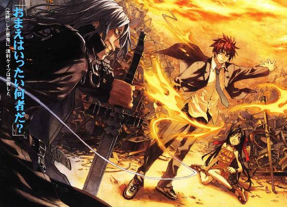
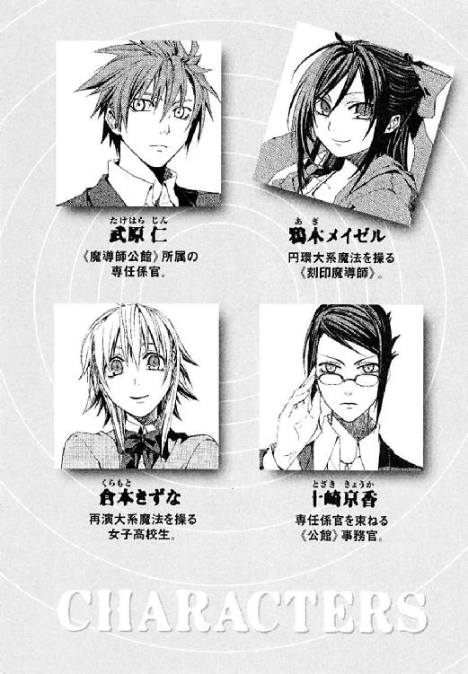
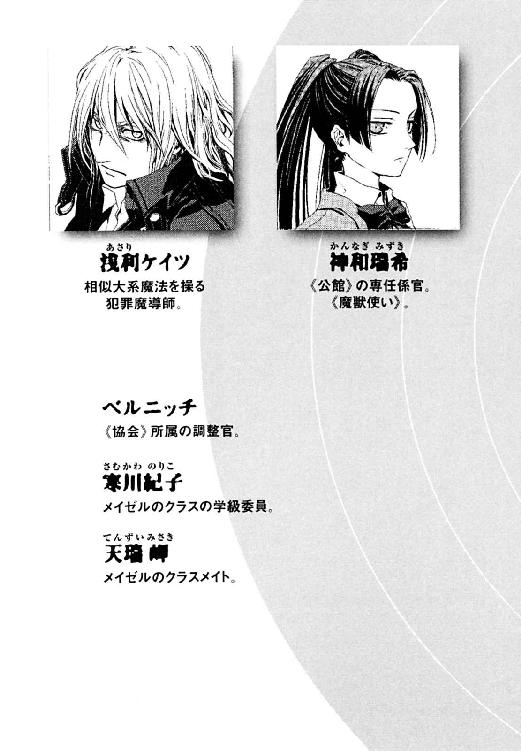
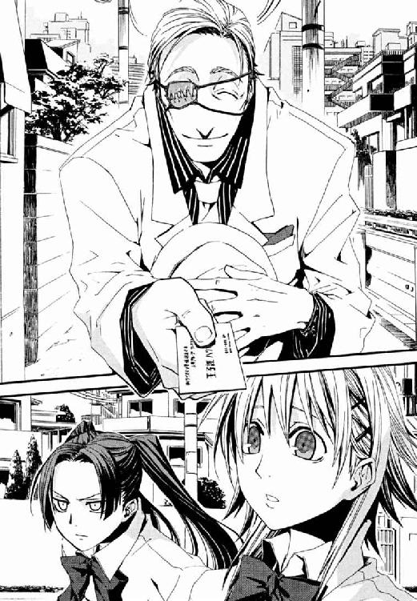

| 円環少女 ２煉獄の虚神（上） (角川スニーカー文庫) | |
| 長谷 敏司 | |
| (2013) | |

円環少女
②煉獄の虚神（上）
長谷敏司

角川スニーカー文庫
本作品の全部または一部を無断で複製、転載、配信、送信したり、ホームページ上に転載することを禁止します。また、本作品の内容を無断で改変、改ざん等を行うことも禁止します。
本作品購入時にご承諾いただいた規約により、有償・無償にかかわらず本作品を第三者に譲渡することはできません。
本作品を示すサムネイルなどのイメージ画像は、再ダウンロード時に予告なく変更される場合があります。
本作品は縦書きでレイアウトされています。
また、ご覧になるリーディングシステムにより、表示の差が認められることがあります。



────座標、時間において、現在の観測者位置より五十二日下流《過去》。五月十三日。深夜十一時。
対象〝観測〟者。鴉木メイゼル。
見えざる神が地上を見守るように、奇蹟の瞳は《過去》を観測する。
まぶたを閉じた魔法使いの、脳裏に夢のごとく映し出されるものは、愛らしい女の子の横顔。ここで過去を参照する〝彼女〟とまだ出会う前の、今より幾分かたい表情をした小さな魔女だ。
〝彼女〟は夜風を洗い地を打つ、真夜中の雨を観測する。それは二ヶ月近くも前に流れ去った涙雨────。
†
夜闇を、銀色の糸が落ちるように、雨が降っていた。この街外れの廃品回収業者の古い工場にも街灯の明かりは届いて、熱のない光で水滴を一瞬、虹色にまたたかせる。
冷たい雨に打たれているのは身長百四十センチにも満たない、小学校高学年くらいの女の子だ。背中まである漆黒の長い髪も赤いリボンもずぶ濡れで、ドレスはしおれて体にぴったり貼り付いている。かわいらしい淑女は、青ざめた唇を引き締め、寒さに震えながら手を広げる。追随して、直径三十メートルほどの彼女にしか見えない魔法陣が、地面に満月のような銀輪を膨らませた。
ゴミの山に廃棄されたテレビが突然、まっ白な画面を映す。寿命を終えたはずの蛍光灯が、電源もないのに淡い光を波打たせはじめる。おびただしい数の電化製品が、《魔力》に唱和して、強く弱く作動音を響かせ、歌いだす。
この世界そのものがゴミ捨て場だから、廃品の森に迷いこんだ皮肉な巡り合わせに、少女は優美な眉をひそめる。その汚れなき手のひらに、ゆらめくものは魔力。奇蹟を起こす力。この世界に本来存在しない力。
「どうするの？ あたしはここよ」
まだ幼い魔導師は、正面に立ちふさがる敵を見据える。
幽鬼のように、刃渡り一メートル近い長剣をたずさえて、暗い目をした男がそこに立っていた。微動だにせず、殺気をおさえようともせず、わずか十メートルの距離を守り続けている。
少女の栗色の瞳に映る世界は、闇の中でも、いつも尽きせぬ力に満ちている。人や動物、空気、万物に魔力は宿る。集めるときは円を描くように軌道を作って、手のひらの間で光を放ちはじめたら、魔力の安定した大気で包むこと。雷鳴が外に漏れないよう、気流の制御も忘れずに。放電が大気を破裂させる轟音は少女の子守歌、薄い潮の香にも似た雷毒の匂いは、懐かしい故郷そのものだった。魔法陣の、力線が複雑な模様を作りながら収束する中心で、彼女はこの魔術を母に習った五年前を、ずいぶん昔のことのように思い出す。
目の前にいた長髪の男が顔色を変えた。渦を巻く幾十条もの雷が、外部にまったく音を漏らさない意味を、彼女の実力のほどを悟ったのだ。
「その年齢で、なんと完全な雷撃だ」
「これから撃ったげる。死ぬか生きるかは、そっちで決めて」
認識すれば、現象は彼女に従う。円環魔術の基本どおり、大気から螺旋の杭で貫くように魔力をはじき飛ばす。照準と弾道も、それだけで整った。
「見事だ。──次の機会を楽しみに、今は預けるとしよう」
そして黒衣の影は消滅した。どの魔術大系でも使われる転移術だ。こうなることはわかっていたはずなのに、ドレス姿の高位魔導師はあどけない頰に雨滴を受けながら、闇色の雨雲に閉ざされた夜空を見あげる。
「......やっぱり、また逃げられちゃった」
そして雨の中、処理工場にもはや影はひとつだ。水のしたたる指から魔力を解放すると、力はあるべき場所へと急速に散ってゆく。火花を散らし、あるいは蛍火をゆらめかせ、そして電化製品たちも名残を惜しむようにまた眠りについた。
儚い奇蹟の残滓を目で追いながら、少女はひとりきりだった。そのときはまだ、ひとりきりで生きていると信じていた。
武原仁は、教室の生徒から三度目の誤字の指摘を受けたとき、ため息と同時にチョークを折ってしまった。
「せんせー、またまちがえた」
背後で子どもたちの、遠慮のない笑い声があがる。仁は、生徒ってのはどうして教師の失敗でこう盛りあがるんだろうと、背中に刺さる声に脂汗をにじませる。
「わっ、わっ、わっ、バカ俺なにやってんだ。今のなし、今のなし」
仁はワイシャツの裏にびっしり冷や汗をかきながら、教師の威厳を守ろうと必死だ。一夜漬けで赤線を引いた教科書にぼとぼとと嫌な滴を落としながら、このまま倒れそうな目眩に耐える。もう無理だ。小学校の教壇は、教員免許も持ってないニセ教師が登っていいものじゃない。五月十六日の午前中だけで、それを思い知っていた。
「じゃあ、次、三十六ページの七行目から読んでください」
普段はしゃべらなくていい仕事をしている仁だが、授業のときはそうもいかない。とにかく授業内容を伝えることで頭がいっぱいで、内心の言葉まで何もかも口に出してしまうから、もうボロボロだ。
冷静さを取り戻そうと大きく息を吸いこんで、吐く。教壇の正面の席に座った女子、たしか出席番号七番の寒川紀子が、眼鏡のレンズの奥から仁を見あげていた。
「先生の授業を聞くより、教科書読んだほうが早いです」
「いいか寒川。授業は生き物なんだ。教科書を読むだけじゃスカッと頭から抜ける知識が、こう──」
「授業ってどんな生き物ですか？」
なんとなく口走った決まり文句に質問を返され、また仁の頭はまっ白になった。もう泣きそうだ。
「えーと、畑に現れて、西瓜を器用に手でくりぬいて食べる」
生徒たちの突っこみたそうな視線が、とっさにアライグマを思い浮かべてしまった仁に突き刺さる。
「みんな違う意味で、先生の授業にドキドキです」
女子の出席番号十二番、天瑞岬が、仁のやらかした失敗と失言だけをノートにメモしていた。
武原仁の体たらくは、彼が私立御陵甲小学校の六年一組の副担任になって一日目なせいだけではない。仁は、本当は教員免許すら持っていないニセ教師、正確には文化庁文化財部に属する、対魔法使い事件の専任係官なのだ。
神話や伝承、おとぎ話や古い文献に数々の痕跡を残す、魔法使いたちは現実に存在する。そしてその専任係官である彼、武原仁はこの小学校にいる高位魔導師を監督するため、教師役を押しつけられた。日本政府は伝統的に、異世界からやってくる奇蹟の振るい手たちが時間を持て余して暴発しないよう、できるかぎり職につかせてやっているのだ。
事前資料によると、仁と組む魔法使いは二十四歳の女性。そして、この教室の奥には、波打つやわらかな髪をポニーテールにまとめた妙齢の麗人が座っている。六年一組担任の祖師堂しづか先生は、この授業時間中ずっと人のいい微笑みを絶やさない。彼女が魔法使いで、武原仁という男を試しているんじゃないかと思うと、教壇で情けないところは見せられなかった。
「がんばって！」
顔をあげると、向こうで祖師堂先生が拳をぎゅっと握って、彼を勇気づけてくれた。仁の誤字を指摘しまくった寒川も、縁なし眼鏡のレンズのへりを、こそばゆそうにかく。
「いつまでも落ちこまれても時間の無駄ですから、早く授業を進めてください」
そのやさしい妥協に、女子の出席番号一番、鴉木メイゼルが長い髪を揺らしてくすりと笑う。
「ひょっとして、せんせーのこと気に入ったんだ」
日本語の発音がうまくないせいで舌足らずに聞こえる声が、教室のぬるい雰囲気に罅を入れる。仁は、薄桃色の唇を嗜虐的にほころばせるメイゼルに、目を奪われる。二週間前に転校してきたばかりのこの帰国子女が、クラスがもめる中心だからだけではなく。
「なっ、なに言ってるの！」顔を赤くした十一歳の寒川紀子に声をかけあぐねていたら、仁までメイゼルに冷たく見下された。
「せんせーもシャキッとして。生徒の母性本能くすぐってどうすんのよ」
教室の子どもたちが、どっと嫌な感じに盛りあがる。教師にあるまじきことだが、もうこいつら全員寝ていてくれと、仁は神様に祈った。この世界では、聞き届けてもらえるはずもないのに。
滅多打ちにあい続けた仁がようやく解放されたのは、四時間目が終わった昼休みだ。彼の本当の職場である、《魔導師公館》から招集がかかったのだ。午後からの授業は祖師堂先生がやってくれている。
「ぅあ。たまんね」
教室では吸えなかった煙草を、肺一杯に吸いこむ。自動販売機の脇に置かれた灰皿の前で、街ゆく人々を見送りながら、仁は明日からのことを真剣に悩んでいた。小学校の先生なんて彼には正直、ムリだ。それとも急病ということにして、早々と別の接触のしかたに変えてもらおうか。
ネクタイをゆるめて、ワイシャツのボタンをふたつ外し、白い煙を大きく吐き出す。
トコトコと、赤いランドセルを背負った女の子が、すぐそばを通り過ぎた。少女が突然、足を止め、艶やかな髪を揺らして彼のほうを振り向く。首筋の、白くきめの細かい子どもの肌が目に飛びこんできて、そのケもないのに一瞬、仁は息をのんだ。
「恥ずかしいから、せんせーが歩きタバコなんかしないでよね」
驚き半分で、仁はしばらくぽかんと間抜けに口を開けていた。どの角度から鑑賞しても魅入ることのできる、目鼻のはっきりした顔立ち。花びらのように瑞々しい唇が言葉を発するたび、長い黒髪が、ひとつの表情であるかのようにさらりと揺れる。洋服の胸に『六年一組 鴉木メイゼル』と、小学校指定の名札。せっかくの高い服を台無しにしてまで地味な名札を校外でつけ続ける、几帳面さがとても微笑ましい。どんな風景に立っても少女は周りから浮き立つに違いなくて、仁は教室で彼女に視線を奪われた理由が今さら納得できた。教壇からは教師に嚙みつこうとする野獣の一頭でも、学校の外で会うと、まるで別人だ。
「あたしが誰だか、わからないの？」
腰に手を当てて、ちんまい女の子が憤然としている。第一印象でなめられたせいで、完全にため口だ。
「鴉木さんは今日、早退なんだ？」
けれど少女は副担任の彼を、友だちか手下相手みたいに傲然と見あげたのだ。
「連絡されてないの？ あっきれた」
とてもとても嫌な予感がした。
背の高い彼との身長差が不満だとばかりに、小学生がふくらんでいない胸を大きくそらせる。長いリボンが、犬の尻尾のようにちょこんと揺れた。
「あたしが、せんせーと組む《魔法使い》よ」
長い棒を、小さな点で支えるところを考えてみて欲しい。完全に釣り合いが取れ、これを支えられる点はひとつしかない。我々が住むこの世界のほかに、科学が有効な、自然法則の秩序が矛盾なく保たれた世界は存在しない。ほかのかたよりある世界では、観測者、つまり人間の意志を脆い自然法則へと干渉させる力が存在する。これが《魔法》だ。
そしてその、人間でも操作できる崩壊に近い世界には、自然秩序を安定させてくれる本物の《神》がいる。大いなる不可視の何者かが、本当なら傾いて落ちる棒を救っている。──だから異世界から来訪する《魔法》使いたちは逆に、自然現象の釣り合いだけで成り立ち神がいない我々の世界を、神に見捨てられた《地獄》と蔑むのだ。
「ようこそ《沈黙》どの。今日はまた首狩りの報告かな」
広々とした屋敷の廊下で、小学校帰りの仁に侮蔑の視線を投げたのは、四角い顔の尊大な中年男だ。魔法使いたちは歴史の表舞台から姿を消した。だが今でも、彼らは異世界からこの世界へ、高度な魔法研究には安定した自然秩序が必要だからやってくる。絹製の黒いローブに細かい細工の装身具をつけた、この調整官ベルニッチもそのひとりだ。
仁は険しい眼差しで、顎髭をいやらしくなでさする中年男の瞳孔を貫く。
「調整官どのみずからお出迎えとは光栄だな。本当はヒマなんだろ」
「ヒマなどあるものか！ 私は調整官として、信用ならない君たち《魔導師公館》と、我ら偉大な《協会》との橋渡しを、誠心誠意、務めあげているではないか？」
多摩川流域に広大な、一軒の古びた洋館がある。ここが文部科学省文化庁に属する非公式機関、関係者には《ロッジ》と呼ばれる魔導師公館だ。異世界からくる魔法使いには、この地獄での権勢を失ったとある理由のため研究場所の確保が困難だという致命的な弱みがある。だから日本政府は彼らを保護し、引き換えに魔法なしで維持でき人間社会でも有用な産物を受け取っている。たとえば高い精度が要求される宇宙ロケット用ノズルの研磨は、現在、町工場の熟練職人ではなく妖精の魔法鍛冶に依頼している。産物を、不完全ながら科学的に解析して、特許をとった件数も膨大だ。魔導師公館は、《協会》という一大勢力との交渉を管轄している。歴史的に関わりある魔導師集団と交流を持つ国は、日本以外にも数多いのだ。
ベルニッチが息をふっと吹くと同時に、透明な男の顔が浮き彫りのように風に結ばれ、気流がよどむ。認識域内の大気に疑似生命を与えて《精霊》化し、壁を作ったのだ。
「しかし地獄の空気の臭いはたまらんひどさだ。葉巻をつけさせてもらうよ」
魔法使いが、袖から鎮静剤の葉巻を一本取りだし、指先に魔法で火を召喚する。
「あいかわらず便利なライターだな」
「エネルギー保存やエントロピーなど、持たざるものの泣き言にすぎんよ」
調整官ベルニッチが、不可視の壁の向こう側から侮蔑の視線を投げる。だが仁は、今日だけはいつもの嫌味を黙って聞いていられる気分ではなかった。
「だったら、地獄のその泣き言が怖くて、人目につかない屋敷に引きこもってる《持てる者》ってのは、一体何様だ」
──そのとき、《壁》が弾けて消滅した。仁の前では、魔法は正常にはたらいていたというのに。
「もうそのくらいでやめていただけませんか」
鋼鉄の針のような視線が、男たちをその場にピン留めする。振り向くと、鋭さが美に到った日本刀を思わせる若い女性が、ファイルケースを持ってそこにいた。
「武原専任係官、ベルニッチ調整官にわびてください」
日本側の調整役である事務官、十崎京香が、静かに、しかし有無を言わせぬ明確さで、仁に命令した。
彼はたぶん、メイゼルが《魔法使い》だと聞いたときから、自分が何者であるかを忘れたくて、ずっと荒れていたのだ。
「武原専任係官！」
京香の一喝が、びりりと廊下の壁を震わせる。
公館の専任係官の仕事は、異世界人だから日本の法律を守らない魔法使いたちを武力制圧することだ。そしてごくまれに見つかる、絶大な力を秘めた神人の遺物の確保。専任係官はこれら危険な任務のため、《協会》から使い捨ててもいい罪人、刻印魔導師を与えられる。魔法世界には、この地獄に堕とされ《協会》の敵を百人倒すまで戦いを強いられる、死刑に等しい刑罰が存在する。
先に折れたのはベルニッチのほうだった。にたりと相好を崩し、顎髭をつまみながら楽しげに鎮静剤の煙で輪っかを作る。
「わびには及びません、ミス・トザキ。そういえば今日は、《沈黙》どのと新しい《刻印魔導師》の、顔合わせをするそうですなあ。いや素晴らしい。円環大系といえば、地獄の神話にもあまたの影響を残し、悪鬼すら雷で打ち倒す、神罰の代行者たちの末裔だ」
調整官であるベルニッチは、その新しい《刻印魔導師》が誰か、もちろん知っている。その上で、見物させろと言っているのだ。
「武原専任係官、書類に署名をお願いします」
十崎に手渡された契約書は、日本側の係官として仁がサインをすることになっているものだ。そして彼は、罪人の監督・監視および処分に責任を負うことになる。これまでは考えるなと自分に言い聞かせて扱ってきた書類に、すでにつたない筆跡であの少女が名前を記していた。刻印魔導師は歴史上完遂者ゼロの、乗れば死体置き場に直行するベルトコンベアだ。非人間的な文書に、一行だけ刻まれた、生命のぬくもりが痛々しい。画数が多くて書きにくかったろう『鴉』の漢字だけが、他の字より二倍も大きかった。
「今日は書くものを忘れたんだ。明日には署名するから、こいつも、もうちょっと人間らしい常識のある書類に直してくれないか」
なにが二十四歳だと、仁はこの理不尽をぶち壊してやりたい凶悪な衝動にかられる。子どもに重罰を科すとき、《協会》が「若返りの魔術のせいで実年齢より幼く見えるだけだ」と言い訳することを、彼はすっかり忘れていたのだ。
「早くサインをするのよ、せんせー。それが、あんたに与えられた運命なんでしょう？」
目線を下げると、そこには彼の胸までしか背のない、あどけない魔法使いが待っていた。そのどこか投げやりな瞳は、ここが地獄だと、きちんと理解していた。どんな罪を犯したのだとしても、仁はこんな子どもの手が血まみれになるところも、殺されるところも見たくない。六年一組の教室で、鴉木メイゼルは他（ほか）の生徒たちと何も変わらない、ただの女の子だったのだ。
死の運命を押しつけられた少女が、ついさっき街で会ったときと同じ、すこし強ばった笑みで胸を張る。
「せんせーも悪鬼だったのね。見ただけじゃわからなかったわ」
この世界の人間は、魔法を、見ることも科学的に存在を立証することもできない。自然秩序に反する神秘の力を、観測することで消去してしまう性質があるためだ。だから魔法使いたちは、地獄人を、奇蹟をつかむ資格のない悪鬼と忌み嫌う。
武原仁は、悪鬼の人口増加で歴史の表舞台を追われた魔法使いの決まり文句を、呪いをこめて吐き捨てた。
「『ここは地獄。神に見捨てられた、すべての奇蹟が尽き果てる場所』か、......ふざけるなよ」
──この世界に、理不尽な運命を救う神はいない。
《魔導師公館》での顔合わせから、三日経った。鴉木メイゼルが心配で、仁はまだずるずると副担任の先生を続けている。事情を知ってみると、教壇から見る彼女は、六年一組ですこし浮いている。教師としては力不足の仁でも、ひとつ気づいたのだ。メイゼルが彼の授業にちゃちゃを入れる教科は、国語と理科と社会、魔法使いの故郷とこの地獄で、はっきり違うものばかりだ。一種のホームシックにしても、正直、どう慰めてやれるものかわからない。
「武原先生。また『ときめき先生』になってますよ」
ため息をついた仁の眼前に白いブラウスの腕がのびて、職員室の彼の席にお茶を置いてくれた。担任の祖師堂先生は、いつ見てもおっとりやさしく微笑んでいる。仁は、教室でやるせない吐息を止められなかったせいで「生徒に気がある」と女子に噂され、しょうもないあだ名をつけられたところなのだ。
「俺は友だちじゃねぇっての」
「あだ名がつくのは、親しまれてる証拠ですよ。勘違いがわかったら、子どもたちもすぐ飽きます」
もっとも、彼女は教室の中で一目置かれているから、変なあだ名はついていない。
祖師堂先生が、仁を勇気づけるように、握り拳を作った。
「がんばって！」
仁は声援を背に、気合いを注入されて立ちあがる。
「下校指導行ってきます」
御陵甲小学校は校門前が交通量の多い大通りなので、生徒が車道に飛び出さないよう下校時間に見回りをするのも、教師の仕事なのだ。
「先生、さようならー」
校門に立つ仁へと一声残して、六年一組の生徒が、青信号の横断歩道をかけてゆく。
「前を向け！ 走るなー！」
仁が声をあげると、小さな低学年の児童たちまでが行儀良く歩調をゆるめる。素直な反応が愛らしくて、学校で数日ぶりに癒される気分になる。
ランドセルの揺れる、金具のぶつかる音がした。道行く人々が、太陽のまばゆさに目を細めつつ子どもたちを見守っている。教壇からは頭痛の種だが、世間一般にはこの姿に未来への希望を感じるらしい。仁も、眼前の難問がなんとかなると思いたくなってきた。
メイゼルはまだ教室の掃除をしているだろうか。《公館》側は、刻印魔導師の罪の内容を教えてもらえないが、少なくとも仁の目に、あの律儀な女の子は危険人物だとは映らない。ふと校舎へ視線をめぐらせようとしたとき、仁の視界の端に、異物があった。背筋を、ぞくりと戦慄が走った。
その距離、十メートル。無防備な児童たちの流れに逆らって、風雪にさらされた案山子のような、長身の男が立っていた。もう五月なかばだというのに、地面に裾がこすれそうな黒いコートを羽織っている。男が歩くたび、靴のすぐわき、地面すれすれの位置で振り子のように金属製の切っ先がふれていた。長剣が外套の右ふところに一本、左のふところにも一本、背中にも二本。合計二十キログラムを超えるだろう四本の剣の重量で、黒いコートの生地が、肩に貼り付いている。
残り五メートルまで、歩きだした男に、なすすべなく距離を詰められた。浴びせられた殺意に気づかず、小学生たちも、他の通行人も、それぞれの道を行く。刃渡り一メートルの長剣を四本もさげた人間が隣を歩いているなどと、普通の日本人は考えもしないのだろう。肺に冷気を吸いこんだように、仁の胸は緊張できりきりと痛む。地獄人が魔法を消去できるといっても、凶漢が魔法を使わずただの腕力で振るった剣から身を守れるかは、別問題だ。校門が命のやりとりの場になっていると知らずに、児童たちは無邪気に騒ぎ続ける。
三メートル。仁は専任係官として最低限の護身用に携行しているナイフを、ズボンのベルトを直すふりをしてホルスターから背広の袖口へと移す。下校する児童たちを盾にした敵をにらみつつ、拳銃を持つべきだったと後悔した。ナイフ一本では、遠い間合いで凶漢を止めきれない。男が無力な子どもの間を一歩踏みわけるたび、神経が切り刻まれてゆくようだ。
「メイゼル・アリューシャをいただきに来た」
一メートル。魔法使いが、なおも足を止めずに宣告した。《協会》の敵を狩る刻印魔導師は、逆に敵から先制攻撃をかけられることもあるのだ。
「学校じゃ、生徒に、家族以外のおとなは会わせないことになってるんだ」
──ゼロ。仁たちが互いにすれ違ったそのとき、こすれ合う袖の間で殺気が鈍く炸裂した。瞬間、魔法使いの右腕が迅風となって抜剣し、下校する小学生たちの細首をことごとく斬り落とした。瞬間、仁の袖口から跳ね上がったナイフが、往来のまん中で男の心臓をえぐった。ふたりの一撃は互いの急所を貫き、ふたつの死体が学びやの校門を汚した。すべてがその一瞬にありえた可能性だった。そしてそのことを、仁と《彼》だけが知っていた。
「先生、さようなら」
教え子の寒川紀子が横断歩道を走ってゆく直前、仁をふり返って手を振った。小学校と血みどろの惨劇。重なりかけたふたつの景色の間に横たわる、峻厳なまでの温度差が、光あふれる午後のひとときを、樹氷のような儚いきらめきで飾る。
「Good bye, stooge」
男の声は、怨嗟に凍えていた。魔法を消去しない《沈黙》した仁を、同じ魔法使いと勘違いしての挑発だ。地獄の言語は彼らの罵倒語で、中でも《協会》の仇敵とアメリカが関係深いせいで英語は最悪の扱いなのだ。
「正しいあいさつは、『さようなら先生』だ」
仁が訂正しながらふり返ったとき、魔法使いの霜が降りたように青白い顔もこちらを向いた。
男の表情には、人間らしい温かみがかけらもない。迷いすらすり切れたこんな目をした魔法使いを、専任係官である仁はよく見てきた。案山子のようなこの男から、すべてを奪った風雪とは、永きにわたって地獄で戦い続けることを強いられた恐怖なのだ。
「いただきます」
掘りごたつのテーブルで、鴉木メイゼルが行儀良くスプーンですくって味噌汁を飲んでいる。住んでいた世界に箸はなかったらしい。どんなに気取っても、右手に銀色のスプーンを握っているせいで給食を食べているようにしか見えなかった。
「メイゼルちゃん。冷や奴は上のほうだけすくわない」
魔導師公館の事務官、十崎京香が小さな子どもに言い含めるように注意する。私服の彼女は、仕事のときの厳しさも鋭さも引っこんだ、ただの近所のお姉さんだ。
スプーンをくわえたまま、異世界から来た少女が首をかしげる。京香が箸で、豆腐を一かけつまんで、上品に口まで持ってゆく。
「こう」
「こう？」
今度はスプーンが、積み重なった立方体を縦にふたつ、まとめて貫いた。
仁は手近にあった醬油さしをとって、まっ白な豆腐の肌へざっと無造作に垂らす。薄茶色の薄口醬油が、じわりと表面の水分でにじむ。
「ああもう！ メイゼルちゃんに教えてあげてるのに、どうして横からそういうことするの。だいたい、あなた教師でしょ！」
順序やけじめにうるさい京香を無視して、仁はアジのひらきをメイゼルの前にどんと置いた。
「ほれ、魚くえるか」
少女は無言で魚の背骨をスプーンで押さえると、尾びれのほうから絶妙の力加減でざくざくナイフをいれ、あっという間に骨を外してしまった。
「すごいすごい、メイゼルちゃん！」
京香がおおよろこびだ。目が合った副担任を鼻で笑うと、小学生がよいしょと腕をのばして、仁の食いかけの魚を彼の茶碗にのせる。一気に飯が、猫のエサみたいになった。
「へたくそ」
小学生にバカにされて、仁は呆然と茶碗を見下ろす。彼の食べかけのアジは、指まで使ってばらしたのに身が皮についていた。
鴉木メイゼルが十崎京香の家で晩ご飯を相伴しているのは、少女がここに居候しているからだ。ふつう刻印魔導師は官舎で共同生活だが、子どもには環境が悪いからと引き取ったそうだ。異世界人が小学校に通って年相応の生活をしているのも、京香の差し金。つまり仁がニセ教師になったのも、そのとばっちりということになる。
「仁ってね。小さいときから魚たべるのヘタだったんだから」
「こいつなんか、魚の脊髄を寄生虫だと勘違いしてて、中学まで魚が食えなかったけどな」
「せんせーとキョウカ、仲いいのね」
子どもが呆れている。
「腐れ縁よ、腐れ縁。生まれたときから家が近所だっただけ。放っとくとロクなもの食べないから、ときどき呼んでるだけだってば。だいたい小学校のときだって──」
聞かれもしないことまでしゃべる様は、ほとんど調子に乗って舌が止まらなくなったおばちゃんだ。公館では鉄の女を貫いている十崎京香の、これが本性である。
「呼ばれるのは、煮こんでみたらまずかったとか、生きてる蟹を電子レンジに入れたとか、失敗して手に負えなくなったときだけな」
「あはははは。............恩知らず」
もういい年をした男が、いい年をした女に、げんこつで殴られた。
何もかも忘れるほど和気あいあいとした食事が終わると、仁はアパートに戻る。ひとりの生活も五年になると、もう空っぽの部屋にわびしさは感じなくなった。窓側の壁にもたれかかってカーテンを開くと、外にはあたたかい灯りが何万という窓に点る、生まれ育った住宅街が広がっている。
封筒を開いて、帰りがけ京香から受け取ったばかりの書類を読む。今日、小学校の校門に現れた男について、情報照会を頼んでおいたのだ。
昼間の魔導師は、十五年前に地獄へ堕とされ日本国籍と浅利ケイツの日本名を取得した、メイゼルと同じ刻印魔導師だ。魔導師公館の関係者でありながら、仁たちがお互い顔を知らなかったのは、ケイツが《協会》と十一年も昔に接触を断っていたためだ。《協会》を裏切った刻印魔導師は、即座に犯罪魔導師扱いとなり、かつての自分と同じ罪人たちに狙われる。校門での流ちょうな英語からすると、ケイツは外国にうまく高飛びしていたか。資料では、むしろ刻印魔導師時代の生活態度は優秀だったとある。そんな男が、踏みしだかれた雪のように灰色に凍りつくこともこの世界ではよくあることだ。
──ガン、ガン！
夜も遅いというのに、遠慮のないノックが、扉を震わせた。せめて文明人なら呼び鈴を押せと、心の中で毒づきながら、仁は立ちあがる。ドアノブをひねると、そこにいたのは異世界人だった。
「ばか。こんな時間に、小学生がなに出歩いてんだ」
「はぁ？ あたしを誰だと思ってるの」
メイゼルが、呆れ顔で彼を見あげる。円環大系は比較的魔法消去に耐性が高いとはいえ、魔法なしでは自分がただの子どもだってことが根本的にわかってない。
「ふぅん。けっこうせまいのね」
魔法使いが、仁の胸よりすこし低いくらいの高さから、部屋の中を覗きこむ。
「キョウカが、作りすぎたから持ってけって」
抱えていた大きな紙袋を突き出す。中身は、砂糖のたっぷりかかったドーナツだった。
「本当に作りすぎかよ。俺、甘いもの苦手なんだけどな」
誰もかわりに食べてくれなんてお願いしてないのに、メイゼルがしょうがないわねと靴をそろえて部屋へあがりこむ。まとめて三つ折りに畳んだだけのふとんに近づくと、彼が止める間もなくばさりと無造作に広げた。
「椅子に使うには低いわね。安物なの？ このおざぶとん」
小さな魔法使いはためらわず、お尻を彼の枕へと落とす。それは座布団じゃないとか、男の部屋で女の子がいきなりふとんを敷くなとか、小言がぐるぐる頭の中をまわる。頭痛がしそうだ。
すこしだけ脇につめると、メイゼルが汚れのない白い手で、かいがいしくシーツのしわをのばした。
「せんせ、立ちっぱなしでいいの？」
しみったれたふとんと、無防備にのびたミニスカートの太ももの背徳感あふれる対比に心臓を突かれて、思わず犯罪的な光景から目をそらしてしまった。
「見ないでよ！ この部屋、座るところほかにないんだから、しかたないでしょ」
まっ赤になって、小学生がスカートの裾を両手で握る。立ちあがろうとか、畳へじかに座ろうとは、考えないらしい。
恥じらうようにそっぽを向いたまま、紙袋にメイゼルが手を突っこんだ。仁へ持って来たはずのドーナツに、彼女が大きく口をあけてかぶりつく。
「好きなのか？ それ」
「あたしの世界にも、まったく同じお菓子があっただけよ」
ぽつりと、メイゼルがつぶやいた。うつむいて表情を隠す。言葉を胸の奥底から引きずり出すように、彼女が語気を強くした。
「あたし、絶対に、帰るから」
覚悟を決めた少女の横顔が目に飛びこんできて、刻印魔導師の戦闘での消耗率をよく知っている仁は、肺腑がねじ切れそうになった。
「戦って、勝って自由になって、絶対に元の世界に帰るんだから」
メイゼルを受け取る書類にサインをしたあの日、調整官ベルニッチは最後に言った。
「余計なお世話ですが、学校に通わせるのは、刻印魔導師が死んだとき手続きが面倒ではありませんかな」
目の前で自分の死を確定済みとして語られても、少女は泣きも怒りもしなかった。京香がメイゼルの面倒を見ている理由が、彼にもわかる。《協会》側には許されざる罪人でも、何も教えられず身柄を受け取る仁たちに、刻印魔導師はただの人間だ。彼は《公館》の仕事に矛盾しても、罪人の義務を果たすより、少女に六年一組の生徒でいてもらいたい。
「戦い抜くより、俺は鴉木メイゼルに生き抜いて欲しい」
「せんせ」
視界の端で、長いリボンが揺れた。子どもらしい胸にドーナツの袋をかかえて、少女が彼の顔を見あげていた。
「せんせは、あたしにとって六年一組の先生なの？ それとも、いっしょに戦う人なの？」
大きな目に見透かされて、仁は金縛りになる。彼の情けない迷いも善人でいたい欺瞞も、メイゼルからは丸見えなのだろう。家に引き取って一緒に食事をしても仁や京香の倫理観を満足させているだけで、刻印魔導師の過酷な運命はなにひとつ変わらない。いつまで経ってもメイゼルが自由になれない、現実を救わない卑怯な逃避でもあるのだ。
仁が副担任になって以来、六年一組の一日が平穏無事に終わったことは一度もない。陽光うららかな今日も、生徒たちと教室で給食を食べ終えた仁が、職員室で一服しようかと教壇を立ったとき、それは起こった。
発端は、メイゼルと仲がよいのか悪いのかよくわからない寒川紀子が、こうたずねたことだ。
「鴉木さんは帰国子女だから、キスしたことあるよね？」
「そんなこと言って恥ずかしくないの！ この変態！」
同時に、まっ赤になって立ちあがった異世界人が、スプーンを寒川の顔に投げつけた。
仁は、地獄語の中でも英語を最低の罵倒語として使っている魔法使いたちにとって、『キス』がどういう意味か知っている。だからかえってメイゼルの耳年増っぷりが、なんとも言えず照れくさい。
スプーンが床を滑る音が、静まり返った教室にむなしく響いた。食べるのが早い数人の男子生徒のほかはまだ教室にいたから、六年一組はすぐに騒然となった。
「ちゃんとあやまってください！」
こめかみに青筋を立てて、わけもわからずスプーンを投げつけられた寒川は本当に怒っていた。つばがかかるほどそばにいるメイゼルは、いつもこの世界の人間を演じている冷静さが影をひそめ、一目でわかるほど苛ついている。間違いなく、昨夜おもてに出た仁とのすれ違いが、尾を引いているのだ。
「あたしのことなんて、放っておけばいいじゃない」
メイゼルが捨てゼリフを吐いたと同時に、生徒たちが副担任へ期待の目を向ける。だが、仁は逆さにして振ると拳銃が落ちてくる、ニセ教師だ。目が合った男子の学級委員がうつむいた。祖師堂先生も研修で学校にいない。もし彼女がいたらと妄想してみたが、面影のしづか先生は「がんばって！」とはげますだけで、難問の答えはくれなかった。
「こら鴉木！ 放っておけはないだろ？ 寒川にものをぶつけたんだから」
仁はまたしても嫌な汗でワイシャツを濡らしながら、必死でこの場をおさめる方策を考えていた。力にはなってやりたいが、ニセ教師でも教壇に立っている以上、メイゼルをひいきするわけにもいかない。そもそも、スプーンをぶつけるのは過剰反応だ。
「先生の言う通り、あやまってください！」
寒川が勢いにのって、声を張り上げる。
「あたしを屈服させたいの？ それともあんた、メチャクチャにしたいくらいあたしのこと好きなの？」
「どうしてそういうことを言うんですか！」
気の高ぶりすぎた寒川が、涙目になって眼鏡をむしりとる。給食のこびりつきでも見つけたか、目頭を押さえたハンカチを丁寧にレンズへ押し当てた。
メイゼルはまだ子どもだ。戦う決意は口にしても、自分の死や人を殺すことへの恐怖で、心が不安定になって当然だ。だが、身をさいなむ重圧の中でも、地獄に放逐された少女は、肝の据わりかたが他の生徒たちとひと味ちがった。
小悪魔の可憐さで、魔女が寒川の鼻の頭をちょんと人差し指で突っつく。
「自分では気づいてないのね。あんたの泣いてる顔、とってもかわいいのよ」
教室をあずかる副担任としても、刻印魔導師を監督する専任係官としても、もう限界だと思った。
「終わりだ、鴉木。おまえはここにいる以上、ここの決まりに従うんだ」
雷に打たれたように、魔法使いがびくりと背筋を震わせる。専任係官として命令し慣れたおとなの声に気圧されたか、生徒たちもしんと静まりかえる。仁は、子どもを怖がらせてしまったことへの焦りで、胃がきゅうっと痛くなってきた。
「いや、あの、......話があるから、鴉木は放課後、生徒指導室に来るように。ほら、昼休みが終わるぞ、給食のおばちゃんの仕事を増やさないようにさっさと食え」
そして、職員室の隣の生徒指導室にメイゼルが顔を出したのは、終わりの会が終わり下校になった十五分後だった。
「掃除当番だったから遅くなってゴメンなさい、せんせ」
仁は説教をしなければならない身なのに、少女を前にすると、どんな答えも間違っているようで不安になる。
「今日の昼休み、寒川に言ったのは、あれはやりすぎだろ」
「あら、あたし本当に、あの子の泣き顔、大好きよ」
あどけない表情を上気させ、メイゼルは嗜虐的に目を細めた。
「きれいなものや強いものが、自分の前で何もかもかなぐり捨ててハダカになってくれたら、『もうあたしのものだ』って気がするでしょ。せんせが、あたしの前に屈服するところを想像したら、ぞくぞくするわ」
仁は、額を押さえてため息をつく。魔法使いと付き合って困るのは、その微妙に歪んだ倫理観が、故郷では普通か個人の資質か、判別しがたいことだ。いや、教室でメイゼルを止めそこねたのは、学校での彼自身がニセ教師か専任係官か、腰が据わっていないせいだ。六年一組での日常を見てしまった今は、教師だから専任係官だからというだけなく、この几帳面で人騒がせな女の子が、人間としてどこか好きだから無事でいてほしい。仁だけでなく、京香もたぶんそうなのだ。
「おまえには納得いかないかもしれないけど、俺も京香も、一緒にやっていきたいんだよ。寒川だって怒ってるだけじゃないし、クラスのみんなだって、おまえに何かあったら心配する」
「わかってるわ。そんなこと」
拍子抜けするほど、メイゼルはあっさり納得してくれた。強がる意地と、不安が危うい拮抗を保っていた今日の様子が噓のように、何かが解決したさっぱりした表情で。
鴉木メイゼルは、六年一組で特異な地位を築いている。四月の末近くにやってきた奇妙な転校生は、失敗も多いが意見は決して曲げず、そのかわり助けがなくても必要なことは全部ひとりでやってしまう。彼女に興味を持つ者は多いから、生徒指導室から戻った少女は、放課後だというのに男女とりまぜ二十人以上のクラスメートに囲まれることになった。
「ねえ、鴉木さん。どうだったの？ やっぱり、お昼休みのことで怒られたの？」
ちょうど寒川スプーン事件に居合わせた女子が、心配そうに声をかけてきた。
「すげーな、どう？ 怖かった？」
指導室送りはよっぽどのことだから、男子たちからは、ちょっとした英雄扱いだ。メイゼルは寄ってきたクラスメートに、余裕ある表情でウソをつき席へと戻る。
「......あの、昼休みのことは許してあげるから」
まだつんと澄ましていても、メイゼルが先生に一対一で呼び出されるとまでは思っていなかったのか、寒川まで申し訳なさそうに見舞いにきた。
「あんた、少しだけハラたつけど、いいやつね」
メイゼルが正面から、抱きつくように寒川をつかまえた。スキンシップに慣れない日本人少女が、完全に硬直し、眼鏡の奥でわけもわからず視線を泳がせる。
「......だから、いじめたくなっちゃう」
「ひぃぃっ！」
本気の悲鳴をあげて、寒川は眼鏡がずれるくらい必死で身をよじる。二の腕にびっしり鳥肌を立てた日本人少女から頰を離してやると、魔女は短い付き合いのクラスメートたちに声をかけた。
「じゃあね」
このまま消えてしまいそうなほど軽やかな笑みを残して、転校生はランドセルを背負って教室を出る。小学生の毎日に命のやりとりなどあり得ないから、誰もこれが別れになるかもしれないとは考えもしなかった。
仁はそのころ職員室で、早めに研修から戻った祖師堂先生に今日の報告をしていた。先輩教師が「今回のことは、みんなにとって、いい経験になると思いますよ」と勇気づけてくれたとき、彼は窓の外にメイゼルの姿を見たのだ。赤いランドセルを背負った少女が歩いて木の陰をとおり抜けた。はずなのに、何秒待っても二度と姿が現れない。高位魔導師たちの使う、魔術的空間転移だ。物陰に入って、彼をとらえる地獄人の視線がゼロになった瞬間、魔法で空間を跳んだ。
ぞくりと、仁の背筋に、何かかけがえのないものを喪失する直前のような、嫌な予感が盛りあがる。彼女はどこへ行った？ 決まっている、刻印魔導師のさだめに従って、戦いに行ったのだ。
「すみません！ 祖師堂先生、ちょっと追いかけます!!」
ニセ教師から、修羅場を生きてきた専任係官の顔になって、仁は職員室を飛び出した。激情に取りつかれて廊下を疾駆し、慌てて靴箱の前で上履きから靴に履き替える。
あの几帳面で誇り高い少女が、たった一ヶ月の小学校生活で、罪人の宿命を振り切れるはずがない。戦うという宣言も、あまりに子どもっぽい、力になると仁に約束してもらいたい不器用なＳＯＳだったとしたら。彼がそれに対して昨夜から示し続けたのは、メイゼルにとっては問題外の、逃走の道だ。つまり、決まっていた答えに賛同してもらえなかった幼い魔法使いは、ひとりで無謀な戦いへ向かったのだ。仁は運動場の地面を蹴り校門をくぐり、下校途中の生徒たちを追い抜き、あの日、黒衣の凶漢がやってきた方向へ全力で突っ走る。そこが目的地かはわからなくても、血が沸騰しそうで、動かずにいられなかった。携帯電話を取りだし、《公館》の電話番号をダイヤルする。
「くそ、俺はバカか？ 気持ちがさっぱりわかってなくて、それでも監督者かよ！ おびえてる女の子に、俺が先生かどうかなんて、本気で重要なわけないだろ！ ひとりきりでこの世界へ追い出された子どもが、おとなを頼ろうとしたときに、俺は何をしてやれた？ 何をしてやれた？」
目的地へ一瞬で跳ぶ奇蹟など扱えるはずもない、ただの人間の仁は汗まみれで走る。身勝手な自己満足だとしても、この《地獄》と呼ばれる世界に生まれた人間として、ここが地獄だと認めたくないからだ。こんなにのどかな空の下、彼を頼ろうとした鴉木メイゼルが、子どもらしい律儀さで義務に従い死地へと歩み、無惨に死んでゆくとしたら？ そんなことを許したら、神がいようがいまいが、彼の大事な故郷は本物の地獄になってしまうからだ。
世界はちがえど、太陽の下には必ず、ひどく安っぽい影が落ちる。視界をさえぎる廃品の山の頂には、まばゆい光がさしかかっていた。捨てられたテレビや電子レンジ、タイヤのない自転車も、みんな土ぼこりで汚れている。地獄では何もきれいではいられない。うずたかく積まれた古タイヤの向こうに、錆びたトタン壁のリサイクル工場が見える。広い敷地には、塗装のはげた自動車まで停まっていた。
少女は、汗ばむような陽気に額をぬぐい、彼女を呼び出した相手を探す。
「あたしはここよ」
背負っていたランドセルを地面に落とす。外側の道路とはスチール壁で隔てられ、彼女の姿は見えない。つまり地獄の悪鬼に観測されないここでは、《魔法を使える》ということだ。
テレビ画面には、白く雨滴の跡が残っている。物陰という物陰からそれぞれ何本もの灰色の影が細く伸びていた。あの冷たい雨の夜とちがって、今日は地面のそこらじゅうに剣が突き立っているのだ。小さな魔女は、自分を中心に工場の敷地いっぱい、直径四十メートルまで過敏領域を拡大する。彼女が魔力を正確に認識し得る領域の影が、魔法陣となって足もとに落ちた。円環大系の高位魔導師にとって、魔法陣内の導電体を把握することはたやすい。殺意もて鍛えられた合計百本の刃の林を前に、少女は頰にあたる風の心地よさだけを感じようと、目を閉じた。
「メイゼル・アリューシャ、なぜひとりで来る」
まっ黒なコートを着た長身の男が、彼女の前に現れ、地面に最後の剣を刺す。これが三度目の邂逅だった。
「あたし、まだ自分がどんな顔で人を殺すか知らないんだもの。怖くってそんな顔、人様に見せられないでしょ」
一度目はあの雨の日。二度目は小学校の校門。凶漢が剣を一振りすればクラスメートや子どもたちが死ぬ、その悪夢に震えていたのは武原仁だけではない。メイゼルは自分が人の命を奪うという恐怖を、せめてまともな理由で飾ろうとして泣き笑いになる。
「それに、気に入った居場所くらいひとりで守れなきゃ、百人倒しきるのはしんどいと思わない？」
「哀れ、悪鬼ごときのために判断を誤るとは」
凍りついた男の表情の、口元だけが嘲弄するようにみしりとひび割れた。
「放課後の、うさぎの飼育当番を抜けて来ちゃったの。早く終わらせて、すぐ帰らせてもらうわ」
その瞬間、少女の足もとから魔法陣を力線が走り、黒衣の頭の高さにあった廃品のテレビが、ガラスの破片をまき散らして内側から爆発した。
メイゼルの両手の間で、放電がはじまった。彼女の生まれた世界では、振動や回転のように周期のある運動や自然現象が不安定だ。円を描いて回る風車や水車は無意味に止まるし、地球の自転周期が変動するせいで一日の長さすら安定しない。観測者たちはその秩序の乱れにつけこみ、周期運動を《魔力》として感知し支配する魔法、円環大系を発達させた。原子核のまわりで電子軌道を占有する電子も、この魔法で操作されるもののひとつだ。膨大な電子を手元に収束し加速し、彼女たちはたやすく稲妻を編みあげる。
「神サマに祈ればいいわ！」
魔法陣上でメイゼルを囲む大気制御の小さな円外に、音は漏らさない。悪鬼に観測されたら、時間すらさかのぼる魔法消去の力に、すべてが食い荒らされるからだ。
「ここにいもしない神に、どう祈れというのだ！」
少女の耳を叫びが震わせたと同時に、黒衣の術者が、彼女との間に剣を一本はさんだまま後退し、地面に突き立つもう一本の剣の柄を握り締めた。
メイゼルは、背中を向けたままの敵から容赦なく電子をはじき飛ばす。少女の黒い靴の下から、小石を投げて水面を切るように高速で波紋の連鎖が弾み、雷鳴を封じこむ風のトンネルができあがる。強い正電荷を帯びた敵魔法使いは、もはや稲妻を呼びこむ撃てば当たる標的にすぎない。この距離で討ち損じる要素は見あたらなかった。
だが、必殺の紫電を放った瞬間、男と彼女の間の地面に刺さっていた剣が不意に飛んだ。空中で剣に受け止められた雷が、そのまま廃品の山に側撃する。呆然とメイゼルは、ビニル袋が白い煙をあげてくすぶるさまを眺める。
「それでは次は、私の業をご覧いただこう」
囁きが少女の鼓膜にするりと滑りこむ。少女は背筋が死人になでられたように寒くて、慌てて周囲を見回す。音を遮断する防壁の内と外に別れていたときも、この声は聞こえた。一体どうやって伝わったのだろう？
黒衣のケイツが、極限まで引き絞った身体のバネを解放するように、何もない場所へとふり返りざまの斬撃を放つ。気迫に圧され、恐怖に弾かれて後ずさった三歩の間合いが、彼女の命を救った。数十秒前にメイゼルの雷撃を受けた空中の剣が、大男が握るそれとまったく同じ軌道、同じ速度の残影を曳いて少女の細首があった場所を断ち割ったのだ。
「相似......大系？」
「そのとおりだ」
相似大系と呼ばれる魔術は、《形の同じものは同一存在である》と世界自体が錯誤する、崩れた自然秩序の中で発達した。この大系の魔導師たちにとって《魔力》とは《形状の同一性》のことで、同じ形をしたものの間には、まっすぐで細い魔法の針金が存在する。相似大系の魔術は相似な片方に変化を与えることで、メイゼルを斬るため空中に剣を浮かせたように、魔力の弦でつながったものを操るのだ。
男が右手に剣をさげたまま、黒いコートの裾をゆらめかせ、メイゼルとの距離を詰めてきた。少女の首をはねかけた剣も宙に浮かんだまま、男と等距離を維持して自然と彼女の背後に回る。
「さて、魔法使い同士の話をしようではないか？ 我々が、この地獄で、どう生き抜けるかについてだが」
剣の一振りを、メイゼルはたぶんかわせない。生死の境に突き落とされた恐怖に神経をからめ取られながら、それでも少女は几帳面に、左胸から外れかけた小学校の名札を直す。
「刻印魔導師に、《協会》の敵を百人倒すほかに生き残りかたなんて、あるわけないでしょ」
「規模があろうと魔法しか能のない《協会》に、地獄で力などあるものか。ここでは探知魔法すら悪鬼どもに狂わされるのだぞ」
ケイツの声には、明らかな人生への疲れがひそんでいた。小学生に父親の苦悩が本当の意味では理解できないように、メイゼルにも地獄暮らしですり切れた男の苦悶などわからない。少女はかすかな空気の循環を魔法で大きく育て、逆転を期して一点でせき止めはじめた。
「やり直す最後の機会を捨てて、一生こそこそ逃げ回るの？」
「強力な術者を、金を積んででも欲しがる悪鬼もいるのだ。闇の底ならばこそ、悪鬼どもを手なずければ、我々はすべてを買えるのだぞ」
そのうさんくさい勧誘に、彼女は酸っぱいものを口に突っこまれたように眉根を寄せた。神罰と称して、古来、魔法消去に強い円環大系の稲妻は、暗殺や悪鬼たちへの脅しによく使われた。ケイツはメイゼルに、罰を果たさずお金のため人を殺せと誘っているのだ。
「あきれたものね。あんた鎖から逃げて、もっとタチの悪いものにつながれてるわ！」
少女は観測できる限りの魔力を、巨大な井戸を構成して一気に落ちこませる。勾配を滑り落ちる電子の嵐が、幾百万の力線で魔法陣を漆黒に塗りつぶし、神罰の代行者の胸先で煌々と光を放ちだす。
「残念だ。交渉決裂か！」
相似の魔導師が自らの胸元に拳を突っこみ、鎖のついたペンダントのようなものを引きずり出した。同時に、身体前面から二枚、背中から二枚の鈍色をした翼のようなものが広がり、黒いコートが跳ねあがる。
メイゼルは、運動をせき止めていた風の流れを一気に解き放ち、その奔流へと電圧を下げた状態で全魔力を叩きこんだ。狙いは感電させることではない。電子の激流が熱エネルギーへと変換され、爆発的な猛スピードの大気流の原子はことごとく電離する。そして太陽の槍のような、超高温のプラズマジェットが魔導師に襲いかかった。すさまじい閃光にメイゼルは目をくらませながら、後ろへよろめく。頭が割れそうに痛んだ。体が、ふらふらして、吐きそうだ。少女は、魔法を使ってこんな身体の変調を経験したのは、生まれてはじめてだった。
オゾンと気化した金属の陽炎の中、灰色の影が浮かんでいた。それはぴったり隙間なく並んで壁となり、荷電粒子の激流を受けきった四本の剣だ。浮遊する金属塊は、無惨に赤熱し、熱噴流を受けた位置でふくらんで歪みはしているが、熔けてはいない。
「そりゃこれだけ光が漏れたら、何人もの悪鬼に観測されて、魔法崩壊で威力もガタ落ちよね」
少女は廃品の壁に手をついて体を支え、ツイてないわと天をあおぐ。魔力認識の影である魔法陣すら歪んでいた。こんな立っているだけでやっとではもう逆転はないと、ふらつく頭でも理解できた。
「ごめんね、せんせ。......ちょっとだけ、うぬぼれてたみたい」
溶解しかけたケイツの守り刀の表面が崩れ落ち、その奥からひとまわり小さい相似形の刀が現れた。男がずたずたに裂けた外套の袖に大きく咳きこむ。超高温の気体をわずかでも吸ったのか、口元に血が飛び散っていた。
「見事だ。......今のは、死を覚悟したぞ」
メイゼルは涙を浮かべ、呼吸困難になりかけながらも必死で走る。
「逃がさん！」
ケイツが、地面に突き立っていた重い剣をつかんで、高く投擲した。当たらない──そう高をくくったメイゼルの顔を影がなぞり、そして幼い魔法使いは太陽をよぎる無数の殺意を見た。百に至ろうかという《同じカタチ》をした剣すべてが、空を飛んでいた。
五月雨のごとく大地へ突き立つ鋼の嵐に、メイゼルは正気を切り裂かれ廃品に上半身を突っこむようにして悲鳴をあげる。
この廃品置き場にやってきたとき、ここはすでに剣の林だった。涙にうるんだ目で、周囲を見渡した彼女を今、取り囲んでいるのは、何十本もの剣でできた檻だ。相似大系の白銀の弦でつながれた、どれか一本でも少女のやわらかな皮膚を貫き、殺すに十分な凶器が、磨かれた刃に怯える顔を映している。ここは今や、メイゼルのための処刑場だった。
彼女の鼻先で一本、相似魔導師の魔力の操り糸に従い、剣が持ちあがった。すりむいた膝の痛みも忘れて、恐怖に引きずられて少女は立ちあがる。
「......た、」
助けてと悲鳴をあげようとした瞬間、唇の前の空気を、疾風のような突きが貫いた。魔法しかできない子どもなどいつでも殺せるのに、男はなぶっている。たすけて、せんせ、と声をあげかけて、仁はきっと来てくれないとあきらめ息をつまらせる。誰も彼女を助けてくれない。メイゼルはこの広すぎる地獄で、何にも守られずひとりだ。無力感と死の恐怖に心が塗りつぶされたとき、少女は頭蓋に響きわたるような、宣告を聞いた。
「《掌握した》ぞ」
そのとき少女は、彼女自身の耳と、黒衣の頭蓋骨内部とを結ぶ、相似大系の魔力弦を見た。ケイツの声がいつでも聞こえるのは、男とメイゼルの間で鼓膜や耳小骨のような聴覚器官の形状が相似だからで、相似大系の魔法は人体内部にも働くのだ。次の瞬間、メイゼルは悲鳴をあげ、背筋を反らして倒れこんでいた。脳内で活性化している脳神経の特定部位が相似形になったとき、黒衣の魔導師のそれと同調させられたのだ。
「いやっ！ おかあさん！ 死なないで。いや、いやぁぁっ!!」
地獄の言葉ではない、故郷の世界の言葉で、メイゼルは泣き叫んでいた。魔力弦を共鳴させて少女に流しこまれたのは、人間の誰もそこから自由になれない、根元的な恐怖のイメージ。黒衣の男自身が味わった最も深い絶望。地獄に叩きこまれた恨みと、この奇蹟果てる地で味わった無力感。大脳辺縁系へ強制的に送りこまれた刺激があどけない少女の脳髄を掘り返し、記憶の底から幻を引きずり出す。世界中の誰もが彼女の母を憎み、そして魔女が死んだとき、娘であるメイゼルに罪をなすりつけた。改ざんされた書類、地獄堕ちの判決。そして、押さえつけられた彼女の背中に迫る、罪人の刻印。
「あははははははははっ！ ははははははははははははぁっ！」
男が、十一年の地獄での彷徨でひび割れた魂をさらけ出すような、狂気の哄笑をあげる。神経に相似形を刻みこまれた少女も、涙を見開いた両目から滂沱させながら、全身を痙攣させ腰をよじり、今にも心が壊れてしまいそうな笑い声をあげる。
ケイツはこのために、廃品工場の地面に剣を突き立てメイゼルを待っていたのだ。蜚蠊に食い荒らされたような男の煤けた魂を相似形に伝わせて、幼い彼女の心を腐らせ、人殺しでも何でもするよう洗脳する。責め苦はきっと、少女が二度と目に活力を灯せなくなるまで止まらない。
メイゼルは理性も意志もちぎれ飛ぶ苦痛と恐怖の波間に溺れ、どうして自分がこんな目に遭わなければならないのだろうと思った。助けて欲しいと、朦朧とする意識の中で願う。神様のいないここで、何を頼ればいいのだろうと絶望しかけたとき──。
無明の闇に力強く、紅蓮が奔った。少女を捕らえた百剣の檻と針金が、ことごとく炎上していた。目の前に突如現れた焰をまとう背の高いその人を見あげ、倒れた彼女の凍えかけた心は、やさしい熱に溶かされてゆく。赤く輝くふたつの瞳を中心に頭部は炎の光輪に包まれ、その身に触れる風すら焼かれ燐光をなびかせていた。悪鬼による観測は、異世界の法則、つまり魔法をこの世界から引きはがす。その崩壊した力の残骸は、単純なエネルギーとして変換された光、魔炎としてまき散らされる。文献にある地獄の業火そのものが、積み重なるゴミの山は燃やさず、魔法使いがすがる奇蹟の業だけを無へと霧散させてゆく。
けれど青空を背負ったおそろしい魔人の背中は、メイゼルの知っている人によく似ていたのだ。
突然、現れた悪鬼と、魔力を失った四本の守り刀を見開いた目にとらえながら、黒衣の魔法使いは総身をわななかせる。
「────！」
ケイツの恐怖にもつれかけた指がペンダントをつかみ、悪鬼の視線を迂回するように、剣をひとつひとつ魔力弦で結んでゆく。炎の魔人から見えない背後で音もなく数十本の剣が宙に浮いた。直後、神秘の力は、凶眼の視線の一薙ぎでなすすべなく焼き尽くされ、幻想的な火花を曳いて地面に降り、淡く溶ける。ジャラジャラと墜落する剣が響かせる崩壊の旋律の中、呆然と口をあけ放していた黒衣の魔導師が、恐怖に顔を歪めて絶叫した。
「なぜ、私は接近に気づかなかった？ いや、............確かにあのときおまえは悪鬼ではなかった！ おまえはいったい何者だ？」
魔法使いたちはたいてい、近づきつつある悪鬼から容易に逃げおおせる。奇蹟が焼かれるとあがる派手な魔炎を目印に、敵を簡単に発見できるからだ。先触れなしでいつの間にか致命的な距離にいる、《沈黙》した悪鬼など、悪夢以外の何物でもない。
「地獄には大昔から魔法使いが来てるんだ、純血でない悪鬼もいるさ。俺は、〝魔法を消去しない〟ことができる、先祖返りの悪鬼なんだよ」
ケイツが恐怖に魔法を忘れた途端に、燃やすべきものがなくなった魔人の炎が消えた。不敵に唇を歪める彼を、黒い外套の浅利ケイツも、同じ魔法使いだと勘違いしていたにちがいない。メイゼルも、見ただけでは彼が悪鬼だと気づかなかったのだ。
「《魔導師公館》専任係官、武原仁だ。元刻印魔導師、浅利ケイツ、おまえを拘束する」
メイゼルは知らなかったが、携帯基地局の電波状態が急激に悪化した場所を十崎京香に聞いて、彼はここにたどりついた。何キロメートル走ったのか全身汗だくで荒い息を整えられない様子だったが、武原仁は間に合った。
「まだだ。まだだ！」
半狂乱で、ケイツが守り刀を拾いあげ、仁に向かって斬りかかる。仁は体を引いてかわしつつ、背後で浮きあがりかけた相似魔術の刃を蹴り飛ばす。
「仕掛けが安直になってきたぞ」
左手に握った剣のミニチュアを封じこんだペンダントを黒衣の男が振ったと同時に、連動して大きな軌道を描いて直剣が仁の後頭部を襲う。
「相似大系の操作術の弱点は、動かす物の軌道が読まれやすいことだ」
仁は後ろに目があるかのように、閃光さながらの高速の突きをかわす。ざくりと虚しい音を立てて、黒衣の足もとに剣が深く刺さった。
「作用物の元の位置さえ把握していれば、術者の動作を見ているだけで、どこから何が来るのかすべてわかってしまう」
ケイツに逃げる間も与えず、燃えあがった腕が、容赦なく魔導師の胸ぐらをつかんだ。活火山の火口のような唇の奥で、魔人の舌が大気を焦がす炎をなめる。人形のたいまつは、のどの奥まで、すべてが燃えていた。何十年と磨き続けた、いや歴史の中で何千年と積みあげ続けた技術が、人間を支えてくれる奇蹟そのものが微細な光の断末魔をあげて、滅びてゆく。
火の粉に巻かれる魔法使いたちには、発見したこの世界を《地獄》と呼んだ、遥か昔の魔法使いたちの気持ちが、よくわかった。彼らは、消えない不安と敗北感をその魂に刻みこまれたのだ。万能の奇蹟の力を探求し、たどりついたここで魔法が焼き尽くされたとき、自分たちの積みあげたすべてが幻だったのではないかと疑い、恐怖したのだ。この、今は人口六十億人にまで膨れあがった地獄の魔人たちのために。
努力を、研鑽を、歴史を、文化を、魔法使いのすべてを無に帰すこの炎に誇りも人間性も灰にされ続けた男が、絶望の涙を流した。
「......悪鬼め」
「俺たちが悪鬼ならおまえは何だ！ こんな手品で俺のクラスの子どもを操り人形にして、人殺しをさせるなんてことが許される、ここはそんな本物の地獄じゃないんだ！」
そして《地獄》を故郷とする男の、渾身の拳が凍りついた男の頰をとらえた。奥歯が一本、ゴミの山に転がり、元刻印魔導師、浅利ケイツはぶざまに気絶した。
十崎京香の乗った公館の偽装護送車が、元刻印魔導師を詰めこんで走り去った。残された仁とメイゼルは、ふたりで午後の通学道路を歩いている。道行く人がぎょっとした様子で彼らを見送る。仁などは一度、警官に呼び止められた。少女の服が土ぼこりに汚れて、ところどころ切り裂かれていたからだ。赤いランドセルだけが、奇跡的に傷ひとつない。さすがにメイゼルも、この格好で学校へ飼育当番には戻れなかった。
「ランドセル、持ってきててよかったな」
仁が声をかけても、少女は生気のない顔で、黙々と足を動かしている。
搾るようにランドセルの肩ベルトを握り締めた小さな手を、彼はもぎはなし、ほとんどムリヤリに手をつなぐ。足を止め、幼さばかり目立つ顔が驚いて仁を見あげた。すこしだけ汗ばんだか弱い手が、ぎゅっとしがみつくように大きな彼の手をつかまえてくる。
死刑に等しい刑罰で堕とされてきた小さな魔法使いが、これまで何を見てきたか、仁は知らない。それでも彼は傷だらけの少女を見過ごせない。この世界で育ったひとりのおとなとして、ただ、不安に震えるこの手に、《しあわせな子ども時代》をつかんで欲しかった。
仁は、やわらかな手の温度が滲みてくるような感覚に戸惑いながら、少女の受けた傷を思った。
「あの魔法使いに掌握されたのは、おまえの心が、あいつと似ていたからじゃない。十一年もひとりきりで恐怖し続けた男の恐怖が、たまたま似た形になっただけだ」
メイゼルの恐怖に凍りついていた瞳がうるみだす。抱きしめて守ってやりたいような気持ちがあふれて、もう一度固く、包みこむように手を握りなおす。
「先生を頼れよ。クラスのみんなを思い出せ。おまえはひとりじゃない。だから、おまえはあいつと似ているわけじゃない」
蒼白だった少女の頰に、ほんのすこし朱が差した。ほのかな熱を伝える心臓が、彼女と相似形になったようで、仁の顔まで赤くなってきそうだ。
「もうだいじょうぶ。あたし、やれるわ」
彼の腕にしがみつくように寄り添ったまま、彼女は歩きだした。たぶん、ケイツと簡単に《相似形》になってしまった意味を、聡明な少女はわかっているだろう。あのすり切れきった魔導師は、何年か後のメイゼル自身の姿かもしれないのだ。
「なあ、俺も先生を続けて、ずっとそばにいてやるから、《地獄》で生きてみないか」
仁は、身勝手と運命の理不尽から助けてやりたい衝動で、声をかける。
「でも、逃げるのは嫌」
小さな魔女が、泣いているようにうつむいて鼻をすすりあげ、答えをぼかす。奇蹟はなくとも鮮やかなあかね空の下、仁たちは小学生の歩幅に合わせて同じ道を歩く。そして、地面に落ちる手と手でつながった影絵を不思議な気分でながめていると、少女の影が、彼を見あげてぽつりと言った。
「本当に、さっきはありがと」
「さんざん子ども扱いしたから、ちょっとはおとならしいところを、見せたくなっただけだ」
腕にもたれかかってくる体温が、仁を、父親か兄のようなやさしい気持ちにさせる。メイゼルと仁の間の、好意の微妙な意味の違いが、悲劇であり喜劇であることを、ふたりは今、まったく気づいていなかった。
「オトナの男らしかったって、ちょっとは認めたげるわ」
そして仁にとっての人生は、少女のはにかんだ笑顔のために、色を変えることになる。
翌朝、目が覚めると、アパートの仁の部屋は焦げ臭かった。トントンと、せまい台所のほうからありえない音が響いてくる。これではまるで、ひとり暮らしの男なら誰でも一度は見る、朝、起きたら誰かが朝ご飯を作ってくれている妄想そのものだ。まだ夢を見ているのかと、ぼんやりする頭を振る。
──本当に焦げ臭かった。換気扇を回してないから煙がこもっているのだ。台所で誰かがケホケホと咳きこんでいた。体の線が微妙に浮き上がる袖無しのワンピースから、人形のように華奢な手足がのびている。膝には大きな絆創膏が貼られて、昨日すりむいた傷を隠している。
おめかしして遊びに来たという雰囲気の、鴉木メイゼルがそこにいた。見覚えのないおとなものの大きなエプロンをはずし、微笑みかけてくる。
「おはよう。目は覚めた？」
「う、うわ、ぅわ、わ、わ、わっ！ なんで!? 台所でなにしてる？ いや、どこから入ってきた？」
起きたらエプロンをつけた教え子が、ゴハンを作ってくれているなんて夢が見れるのは、せいぜい高校教師からだ。小学校教諭としては、絶対にあっちゃいけない風景がそこにあった。
「失礼ね。人の顔見て悲鳴あげて。寝顔はかわいかったのに」
頭の中を、倫理観だの教育だのＰＴＡだのいう単語がぐるぐる回る中、ようやくこれだけ聞いた。
「どうやって入った？」
「キョウカから合鍵もらったの」
そのとき、やるだけやってくれた張本人が、上品な黒のパンツスーツ姿で玄関のドアを開けた。
「ああよかった。いきなり犯罪行為の真っ最中だったら、どうしようかと思ったわ」
幼なじみは胸をなでおろし、本気で仁が教え子に手を出してないか心配していた。
「色々聞きたいことがあるから、とりあえずこっち来い！」
渋々、京香が床の汚れを気にしながら仁のそばまで寄ってきたとき、台所で軽すぎる音が響いた。その音は、お菓子のポッキーを折る音にとてもよく似ていた。
「ところで、メイゼルの料理ってどうなんだ？」
「そういえば、わたしもはじめてだわ。うわ、メイゼルちゃんの地獄料理第一号じゃない」
そして顔をひきつらせた仁につられて振り向いた京香も、体を硬直させる。
流しの上に、ポッキーやポテトチップといったお菓子の包み紙が散乱していた。仁たちの見守る中、メイゼルが、お菓子の包み紙を開けて豪快に皿へと流しこみ、無鉄砲にケチャップをかける。無鉄砲って、料理を形容するコトバか？ いや、料理ってのは自分の好きなモノに調味料をぶっかけることじゃないんだと、おとなたちは、異世界人でも共通なお子様的発想に無言の悲鳴をあげる。
「わたし、そういえば会議が──」
逃げようとする幼なじみの手首を、ひとりで地獄に墜ちてたまるかとばかりに仁がわしづかみにする。すくなくとも京香には、保護者としてメイゼルの地獄料理第一号を片づける責任がある、たぶん。仁もそうなのだ。
子どもらしく無邪気に、少女が、入れちゃいけない食材てんこもりのサラダを持ってきた。
「さあ、めしあがれ」
おとなたちはテーブルの中央に置かれた皿を前に、これが何かの奇蹟でとてもおいしい可能性を神に祈った。
幾万の世界で唯一、奇蹟の存在しない世界。魔法使いたちはここを神に見放された地、地獄と呼ぶ。
再演魔導師、倉本きずなは暗がりで目を覚ましたとき、ここがいつ、どこなのか、一瞬わからなかった。
寝汗でべったり肌に貼りついたパジャマを、指でつまんで剝がす。
荒い息をつく。その肺から搾り出すような音を聞いていると、自分がひょっとしたら年をとった老婆であるような気もして、もう彼女自身が何者かもわからなくなった。和室に敷いたふとんの、枕元に置かれた目覚まし時計に手を伸ばした。三時四十分、窓の外は暗い。たぶん朝の三時だ。体を起こして、ここが十七年暮らした倉本家の六畳の居間より広いことに気づいて、一瞬パニックになった。
「お父さん？」
ことばにして、きずなは胸に深く刻まれた喪失の記憶に、目を閉じて耐えた。彼女の父、倉本慈雄はもうこの世にいない。癒えないその傷を足がかりに、きずなは世界と自分自身を思い出す。ここは十崎家の二階の和室を使わせてもらっているきずなの部屋だ。バベル事件が終わってからも、彼女は護衛の問題や収入がなくて生活できないといった事情から、また居候させてもらっているのだ。今は七月四日の夜明け前。もうすぐ高校の期末試験がある。
どうして自分が何者かすら見失った？ 世界を一冊の本として観測し、記された《過去》を操作する再演大系──きずなの魔法が暴走していたのだ。彼女は夢うつつで世界という本を無作為に開いて、そのページを読んでいた。バベル事件が終わり、再演魔術に目を開いてから、ときどき今夜のように魔術が勝手に発動する。制御しきれない魔法は、無作為に彼女に近いだれかの、大切な時間をのぞき見させる。
それがいつか本当に明かされてはならない秘密を掘り返してしまいそうで、寝汗に体温を奪われた自らの体を抱きしめ、きずなは震えた。
「ひょっとして、うなされてたの？」
いつの間にドアを開けたのだろう、黄色い電灯のついた廊下から声がした。入り口にすこし隙間を開けて、異世界人だという女の子、鴉木メイゼルが覗きこんでいたのだ。逆光で表情はよく見えないけれど、きっと心配させてしまったのだろう。
「ご、ごめんなさい。わたし、そんな起こしちゃうくらいひどかったですか」
「寝苦しかったから風にあたってきただけよ。そうしたら、びっくりするくらいはしたない寝言が聞こえたのよ、むっつりスケベさん」
長い黒髪をおろしたメイゼルは、まるで小さなお姫様みたいだ。ワンピースのパジャマの裾で、かわいらしいレースの縁取りが揺れていた。
きずなが見てしまった、目の前のメイゼルと武原仁の最初の戦いは、本当にあったことなのだろう。刻印魔導師として過酷な生を歩む少女の、大切な過去を覗いてしまったことに、気まずいような苦さが胸にこみあげる。
「全然、だいじょうぶだよ。本当に、メイゼルちゃんこそ、夜、眠れなかったりしたらいつでもわたし、力になるからね」
からかい甲斐がないわと、ちょっと意地悪な小学生がため息をついた。
「きずなって、本当にその性格どうかしたほうがいいわ。自分がつらいときまで、人の世話焼いてどうするの？」
「そう......だね」
きずなは、答えになっていないとわかっているのだけれど、受け入れて笑いかける。
「あと、パジャマのボタンはちゃんと上までとめるのよ。おっぱいの谷間がまる見えだわ」
「わっ、わっ、わっ......！」
暑いと寝ている間にボタンを外してしまうのは彼女のくせだ。自分ひとりのときは気にもならないのに、指摘されると妙に恥ずかしい。頭に血がのぼって、うまくボタンをつまめないきずなを放置して、メイゼルは行ってしまった。
そして彼女は、たかぶっていた神経が適度にリラックスしているのを感じ、あどけない同居人に感謝する。もう二度と大事な人が奪われることがありませんようにと、祈りながらふとんに体を横たえ目を閉じた。
どうして魔法は彼女に何度もこんな夢を見せるのだろうと、闇の中、思考が閃いた。答えがわかってしまったから、きずなは震えた。
魔法が自分以外の人間の過去を見せるのは、きずな自身が今のうちに知っておくべきだからだ。まるで大地震の前に小さな地震がやって来るように、彼女はもっと大きな運命が《世界》という本に動きはじめる予兆を感じていた。
またたくさんの人々が信念のもとにぶつかり合い、死んで行く、戦いがはじまる。
群青の波間は地獄だった。見渡す限り陸地はなく、沈めばその底は無尽の暗黒。
灰色の曇天の下、風に衣服を旗のようにはためかせ、男がふたり海面で向かい合っていた。嵐がはげしく海原を叩き、無数の波の上に雨滴が更に幾兆の波紋を広げる。荒れる水の上に、そこがかたい地面であるかのように立つのは遥かな道を歩いてきた兄弟。
追放され地の底ですり切れた、冬の旅人のような弟は、今ここを乗り越えねば生をつかめなかった。そして天へといたる孤独な道を歩き続けた、太陽のごとき兄の目に、迷いはなかった。
仁はボロボロで、もはやふたりの魔導師へ近づく力は残っていない。戦場に唯一の悪鬼は、薄れかかる視界をめくり直すようにまぶたを閉じる。
大雨の向こうで、神に近い男が、静かにしかし威厳に満ちて口を開く。
「──弟よ。今のおまえは驚くほど、私と〝似ている〟」
仁の体の前で、悪鬼になど興味も示さない最高の魔導師は、異称どおり《神に似ている》のかもしれない。
では、《神に近い男》に〝似ている〟弟とは？
†
武原仁がその朝、目を覚ますと、窓からの陽光を浴びた少女の満面の笑顔が彼をとらえていた。
ネズミを見る猫のように嗜虐的に細めた目も、上品な鼻も薄桃色の唇も仁はよく知っている。背中まである長い黒髪と絹のレース地のリボンが、白い太陽を照り返して輝く。肌がうっすらと健康的に日焼けしているのは、小学校で最近はじまったプールの授業のせいだ。体温も伝わるほどそばに正座して、黒髪の妖精がふとんに横たわったままの彼を見おろしている。寝汗が、だんだんちがう冷や汗に変わってきた。
「おはよう、せんせ。夢の中のあたしから、夢みたいな朝のプレゼントがあるの」
目の前にちんまり座った女の子は、私立御陵甲小学校六年一組出席番号一番、鴉木メイゼル。そして武原仁はクラスの副担任、つまり「夢みたいな朝のプレゼント」の品目を発表すべく頰を赤らめている黒髪の少女は、彼の生徒なのだ。寝ぼけた頭が正気に復帰した瞬間、一瞬、心臓が止まった。
「......お、おまっ！ なんで俺のアパートにいるんだ！」
「せんせ、キョウカがあたしに合鍵くれたこと、もう忘れたの？」
「そうじゃなくて、お、俺、おとなの男で小学校の教師！ おまえ、女の子で生徒！ 勝手に入ってくるのはよそうって、二ヶ月ずっと何度も言い続けてって......て」
教え子が朝、家にあがりこんできているなんて、学校に知られたら大問題だ。畳に正座したメイゼルは、ひまわりみたいに鮮やかな黄色いワンピースの上に、デニム地のエプロンをつけていた。仁はふとんから体を起こす。あまったるいイチゴのにおいが、蒸し暑い七月の空気をぐずぐずに崩れさせていた。
「......ところで、いちご臭いんだが」
まだ微妙に舌っ足らずの日本語で、メイゼルに得意げに説教をはじめられた。
「イチゴの匂いのよさがわからないなんて、せんせもまだまだ子どもね。イチゴの赤い汁は、神様の血なのよ」
体はパイ生地、全身に純白のホイップクリームを塗りたくった甘ったるい神様（イチゴ味）を思い浮かべて、無性に熱くて苦いコーヒーが飲みたくなった。
教師として、そろそろ冷静になって状況を整理する頃合いだった。うだるような蒸し暑い朝、起きたら頰を染めた少女がアパートにあがりこんでいる。そこいらじゅう激しくいちご臭い。本人はエプロンなんかつけて、期待にその涼やかな目を輝かせている。つまり──。
「俺の、朝ご飯作ってくれてたのか？」
「あのね、今日のごはん、すっごくいい感じにできたの！ あたし、料理の才能あると思うのよ」
仁は右手で額をぬぐう。機嫌よさそうに、彼女が子どもっぽくとたとた足音をたてて、汗をふくタオルをとってきてくれた。メイゼルにとって、ここはもう勝手知ったる他人の家だ。１ＤＫのアパートは、彼女が私物を持ってくるせいで三割はぬいぐるみやクッションに埋められたメイゼル領になっている。
のろのろとふとんから起きあがって、メイゼルに背中を押されて洗面所に行き、顔を洗って歯を磨く。さっぱりして戻ると、居間のちゃぶ台にはいちご臭の元凶らしいピンクがかった飯が、スープ皿にこんもり盛られていた。
「これが〝夢みたいな朝のプレゼント〟か？ あ、これ、牛乳かけて食うのか？ 砂糖？ メシだぞ、砂糖なのか？」
「どうして？ お米って、パンみたいなものなんでしょ？」
薄ピンク色の飯に、お手本とばかりに彼女が牛乳をぶっかけ、砂糖をどさどさ投入する。仕上げにちゃぶ台の中心に置かれていたフルーツ皿からオレンジとキウィフルーツを取って、牛乳びたしイチゴご飯砂糖味にのっけた。まるでままごとだ。すくなくとも日本人の感覚ではない。目の前の少女、鴉木メイゼルは四月なかばに魔導師公館へと引き渡された異世界人だ。罪人として《協会》が定める敵を百人倒すまで自由になれない少女は、なんとか一学期も終わる七月まで生きのびた。
《公館》の専任係官である彼とメイゼルの関係がはじまった五月中には、もう距離感はこんなふうにわやくちゃになっていた。仁にはいまだ、自分のどこにメイゼルが惹かれてくれているのかよくわからない。ただ、少女が刻印魔導師として、珍しいほど順応してくれている理由がそれなら、仁もうれしい。だからなのだろう。好意をこめて握られた手に答えをどう出すか、先延ばしのままだ。
「いただきます」
少女が楽しそうに、この世界に来て身につけた習慣で、食前に小さな両手を合わせる。
だが今ここにある問題は、味覚は普段の食事習慣から形成されるもので、目の前の小さな魔女が米の食事に縁がなかったことだ。当然日本人の常識なんてストッパーはない。だから、だしを入れて炊いた〝炊き込みご飯〟と、ジュースを入れて炊いた〝なんだか赤っぽいごはん〟の間に横たわる決定的な差が理解できないのだ。
この世界で見つけた新しい食材を、故郷の異世界で食べた料理の記憶とかけ合わせるのが、まずいけない。ちょっと前の、台所のガスコンロの魚焼きグリルに触発されてメイゼルが作った、チョコレートのせ塩鮭の惨劇のように。なんだろう、記憶から蘇っただけで涙が出そうだ。
「メイゼル、ちゃんと手、洗ったか？」
「失礼だわ。このあたしを、部屋の掃除もろくにしないせんせと一緒にしないで」
仁は意を決して、スプーンで赤いものを搔きこむ。イチゴジュースで炊いた飯は匂いがほとんど飛んでいたし、牛乳はご飯でぬるくなるし、少々砂糖を入れたって米粒と牛乳の量に負けて味なんてつきはしない。このフルーツ風味雑炊みたいな、努力しても甘くなりきれないいびつな日常が、彼らの大切に抱えているものだ。
メイゼルが、スプーンで「今日はまあまあじゃない」とか言いながら、冷静になればおいしくはない料理を食べ続ける。彼女がいて食卓が楽しいなら、それはそれでいいような気がした。
「肩から水着、見えてるぞ」
仁はメイゼルのワンピースの肩に覗いた、紺色のスクール水着の肩ひもを指差す。そういえば、今日は小学校の二時間目の授業がプールだ。更衣室で着替える手間を省くため服の下に水着を着こむなんて横着を、この異世界人の魔女が覚えたことが感慨深い。
少女が頰を染めて、上目づかいでちらりと見あげてきた。あどけなさと恥じらいがないまぜになった視線で男を縛りつける。
「......せんせ、あたしがこの下、水着一枚だから興奮したんだ？」
どさりと、仁の背後にあたる玄関で、買い物袋が床に落っこちたような鈍い音が響く。
ふり返ると、見てはいけないものを見てしまったように呆然と、倉本きずなが立ちつくしていた。
「た、武原さん！ ごめんなさい！ メイゼルちゃんが持ってきた朝ご飯の材料、変だったから、おむすびだけでも持ってきたんですけどっ」
倉本きずなは、鴉木メイゼルと同居している高校二年生だ。赤みの強い、肩につくかつかないかのセミロングの髪が、あわあわと手を振るたびに揺れる。深い濃紺の瞳も、たれ気味なやさしい目の中心で驚きに定まることを忘れたようだ。
「いやちがう！ きずなちゃんの想像はたぶん色々間違ってる！」
「で、ですよね！ わたしてっきり......」
そして会話は止まり、なまぬるい沈黙が仁ときずなの間にふくらんでゆく。仁は倉本きずなを前にすると、ときどき肺に鉛でも流しこまれたような重さと息苦しさにさいなまれる。彼女は生まれながら魔法使いだったメイゼルとはちがいこの世界で育ち、魔法になど関わりのないごく普通の女子高生だった。大きな事件に巻きこまれ、六十年前に滅びたはずの魔法を継承する魔導師だと判明したのはつい一ヶ月前。きずながどこの魔法世界から運ばれてきたのかすら、仁たちにはまるでわかっていないのだ。
「あ、メイゼルちゃん、結局、普通のまぜご飯にしなかったんだ」
「きずなも特別に食べていいわ。けっこう自信作なの」
言葉を発せない仁を尻目に、きずなは居間のメイゼルに呼ばれて、靴を脱いで部屋にあがって来てしまった。異世界から来た生粋の小学生魔女が、最近魔法に目覚めたばかりの女子高生にご飯をよそう。ふたりが清楚でやさしい姉と勝ち気で奔放な妹のようで、仁は頰がほころぶのを止められない。きずなが、得意げな子どもの言うとおり牛乳をかけて砂糖をイチゴ飯にぶちこんだ。
「どう？ あたしにお台所まかせて大丈夫だって思わない？」
「それじゃ。ちょっとだけ、いただきます」
一口ふくんで、微妙な表情になったきずなが、反応に困って仁を見あげる。
「今日のはよかったと思うぞ」
我慢できる程度なら、わざわざ彼女たちの前でつらい顔を見せなくていいと思った。きずなも空気を察して、メイゼルを応援しはじめる。
「そうだよ。これでもうちょっと入れる順番いじって調味料足したら果物入りのピラフみたいにできるから、もうちょっと、もうちょっと！」
十日前に終結したバベル再演事件で、倉本きずなは唯一の肉親だった父、慈雄を失った。つらい経験を経て、彼女はいっそう人にやさしく魅力的になった気がする。なのにきずなの前で金縛りにあうのは、彼、武原仁こそが彼女の父を斃した張本人だからだ。父の死を精一杯受け止めようとしている娘に、仁は今も事実を伝えられない。
「あたし、せんせだけに愛情いっぱい入れたのよ。......きずなより、せんせのほうがおいしく食べるに決まってるじゃない。なに、笑わない！」
料理上手のきずなにほめられて、メイゼルが照れていた。
この揺れたら壊れそうな団欒を、仁は得難いと思う。メイゼルが課せられた運命は厳しいままだし、きずなもまだ乗り越えてはいない。なのに日々を精一杯充実させて過ごそうとしている、強さがひどくまぶしいのだ。
「あの、......武原さん？」
じっと見ているのに気づいたか、きずなが短い制服のスカートを直す。どうして夏のセーラー服から覗く肌色が、メイゼルのと比べてこうも艶やかで扇情的なのか不思議なくらいだ。
「せんせ、またきずなのこと、やらしい目で見てる！」
顔をまっ赤にして、スプーンを握り締めたままメイゼルが怒っていた。眉をつりあげた彼女に、なぜだかもうひとつの日常である戦いの影がよぎった。黄色のワンピースが冬を生き延び次の春を迎えることがない蝶の羽のようで、儚さに胸を切られる。
「そういえば、もうすぐ学校終わって夏休みだな。みんなで思い出づくりってのも、いいんじゃないか？」
「それは、あたしの誕生日の贈り物なの？」
話をごまかそうとした仁に簡単じゃないぞとばかりに、メイゼルがここに座れと彼の座布団をばんばんと叩く。朝早くに起きてご飯を作りにきてくれたのに、主役をきずなに持って行かれ気味だから、おかんむりだ。
「旅行に連れて行ってやるって言っただろ。夏休みじゃなきゃ、長期の休みなんか取れないからな」
先月メイゼルの誕生日パーティをしたとき、結局何をあげられるか決められなかった仁だけは旅行の約束をしたのだ。
小さな魔女は死刑に等しい重罪を負っている。どんなに今の時間が穏やかでも、すべて一枚踏み割れば確実な死が待つ薄氷の上の夢にすぎない。だから未来を見ていたかった。夏休みのその日までは少なくともみんなそろって生きているんだと、信じられるものが欲しかったのだ。
「どうしてあたしの誕生日なのに、せんせとふたりっきりじゃないの？」
「だったら、来年はふたりで海外にでもぱーっと行くか。来年はきずなちゃん受験だしな」
七月初めはもうずいぶん暑くて、皮膚にはじっとり脂っぽい汗が浮かぶ。儚くも幸福な時間を嚙みしめる。今みたいな時間がずっと続けばいいのにと願ってしまった。
メイゼルが「ほんと？」と笑顔を輝かせ、期末試験まで一週間を切ったきずなが勉強のことを思い出して落ちこんだそのとき、携帯電話が三度呼び出し音を鳴らした。
────それが、はじまりだった。
†
特定の呼び出し音で携帯電話を三回。刻印魔導師を連れず、三十分以内に参集せよという合図だ。東京二十三区から西へ向かった多摩川流域には一軒の、明治時代に建造された広大な敷地をもつ洋館がある。関係者にはただ《公館》と略される魔導師公館、文部科学省文化庁に属する非公式機関の庁舎だ。
武原仁は、メイゼルときずなをアパートから追い出すと、徒歩十五分ほどの《公館》まで慌てて走ってきた。小学校のニセ教師をしながら、魔導師公館の対魔法事件専任係官としての仕事が発生すると慌てて抜け出してくる。武原仁の二重生活は、二ヶ月ずっとハードなままだ。
《公館》の重い樫材のドアを開けたとき、公館職員が最初に出会う魔法使いは絹製の黒いローブに細かい細工の装身具をつけた尊大な男だ。
「今さらご出勤かね、《沈黙》。君があれを始末していれば、そもそもこんなことにはならなかったのだがね」
四角い顔の顎にたくわえた髭を撫でながら、人の顔を見るとまず嫌味を吐くこの男が調整官ベルニッチ。日本神話の時代からこの国と付き合いがあるらしい《協会》と日本政府との、魔導師側のパイプ役だ。
「魔法使いって連中は、話がわかるように日本語を使うことを覚えないな。何が起こった？」
「ずいぶん強気だな。君の飼っている刻印魔導師、──メイゼル・アリューシャの責任を問うてもよいのだがね」
仁は、どういうことだと詰問するかわりに、眼前の魔導師をにらみつける。ベルニッチの目のまわりは、毎日が激務の要職にあるとはいえ、常になく不健康に落ちくぼんでいた。中年魔導師が吐き捨てる。
「浅利ケイツ。現在三十四歳。十五年前この世界に堕とされてきて、十一年前に日本から高飛びした元刻印魔導師だ。逃げた刻印魔導師は黒帳を失い、犯罪魔導師としてかつての同類に狙われるというのに、日本に舞い戻ってきた阿呆だよ」
浅利ケイツは、あの小さな魔女と仁が出会ってはじめて捕らえた犯罪魔導師の名だから、心臓の鼓動が激しくなった。メイゼルを誘拐しようとしていた疑いがつよいが、今もって事件の背後関係には謎が多い。
「早く核心を言えよ。《公館》が俺たちを非常呼集するなんてな、ろくでもないことが起こっているんだろ」
「その男が今朝、刻印魔導師《人形師》の手引きで、本来相似魔導師には破れない自己折りたたみ式の井戸牢を破ったのだよ。現在、追跡中だ」
武原仁は絶句する。自己折りたたみ式の牢とは、二倍四倍八倍と牢内の空間が広くなってゆき、一日もすれば魔法的に地球の表面積より広くなる牢獄だ。本当に何もない空間が無限に広がるため、魔法に対象特定が必要な相似魔術では理論上脱出できなくなる。事情がわかってみると、今朝の魔導師公館には怖気がたつほど生気がなかった。古びた洋館の、絨毯張りのだだっ広いロビーに公館職員の姿は皆無。事件への対応で誰もが書類机に縛りつけられ、あるいは出払っているのだ。
「我らも恨みを買いはしているが、まさか《公館》が管理しているはずの刻印魔導師に手を嚙まれるとはな。まったく許し難いとは思わんか！」
「......本当に《人形師》なのか？」
刻印魔導師という罪人を使って治安を守る彼ら自身のシステムのほつれを眼前にすると、二十四歳の若造である彼は後ろめたさを禁じ得ない。公館にとって六百名の定員で受け入れている刻印魔導師は、全員が戦力というわけではない。むしろ、九割以上は殺せ以外の命令を聞かないただの凶悪犯で、仕事をまかせられる程度に信用できるのはせいぜい四十人。《人形師》綾名ネリンはその貴重なひとりだった。
「あの女も、忠実に見えて所詮は刻印魔導師だったということだ」
調整官ベルニッチが、暑苦しいローブの袖のかくしからパイプを取りだし、魔法で火をつける。
「牢を破られたときの、《協会》側の被害は？」
「君らの立ち入りを遠慮してもらっている区画で、小さなぼやがあった程度だ。そのまま《人形師》とケイツのふたりともが転移魔術によって逃走した。燃えるなら、こちらのボロ屋敷にしてくれればよかったのだがね」
武原仁はベルニッチという男が嫌いだ。この世界の人間を小馬鹿にしているし、皮肉を混ぜずに話すということがない。それでもつい十日ほど前、バベル事件で命を救ってもらったばかりだけに、どうもやりにくい。
また嫌な仕事をしなければならないことに大きく息をつく。そんなことで胸の重さから解放されるはずもない。魔法使いたちの多くは、《悪鬼》と呼ぶ地獄人を人間扱いしない。ここを本当の地獄にしないために、昨日までこの国の走狗にしてきた《人形師》を、殺してでも止めねばならない。窓から差す七月の陽光が、ひどくまぶしかった。
「──斬らずに終えようなどと、世迷いごとを考えてはおらぬだろうな」
その深い声は、魔法のように真後ろから響いた。修羅場でこそ本当の速度で鼓動をたたく心臓が、その瞬間から、実際には二秒にも満たなかっただろう時間を何倍にも薄く長く引きのばす。
一応は高官のベルニッチをかばって、仁はふり返りつつジャケットの背中側の内に手を差し入れ、背負うような吊しかたのホルスターからナイフを引き抜く。刃渡り二十五センチの刃物の先端を向ける前に、気配はすでに消えていた。浮いた重心が重力にとらえられて沈む寸前、覚悟を定めて左に一歩踏みだす。切っ先と仁の肘、肩が一直線になる迷いのない突き。その頭の上から、煌めきが雨より迅く降り落ちた。
風そのもののように軽やかに速く、春の草のような萌葱の着物に、灰緑色の夏物の紬袴を穿いた男性がそこにいた。右手にはぬらりと艶めかしく日本刀、その刀身は仁の頭を縦に断ち割る寸前で止まっている。こちらのナイフは相手ののど笛に十センチ手前。これが真剣勝負なら、武原仁の顔は脳髄ごとまっぷたつになっていたところだ。
「久しいな」
背筋もきりりと窓から夏の太陽を背負って、優雅に刀を鞘におさめる。その所作も仁にとっては忘れ得ない思い出に重なる。髪はすべて後ろへなでつけて、時代劇の浪人のような総髪茶筅。四十歳近いはずだが、常識を超える鍛錬の成果か外見はせいぜい三十代前半だ。
「お久しぶりです、東郷先生」
東郷永光、《鬼火》は十二名の定員に対して、現在七名しかいない専任係官のひとりだ。激務なうえ損耗もはげしいこの職を、十九年もの長きにわたって務めたのは太平洋戦争後では彼ひとり。専任係官の業務は、本拠である魔導師公館近辺の防御および東京の刻印魔導師の管理、国内を巡回しての犯罪魔導師の取り締まり、予備戦力としての待機を、三交代制でローテーションする。仁がニセ教師になり神和瑞希も高校生をしているおかげで、ただでも少ない専任係官のスケジュールがいびつになり《鬼火》はずっと日本中を飛び回っているのだ。
「若造気分はそろそろ捨てろ。己のことは《鬼火》でいい」
仁はその一喝で背筋を伸ばす。かつては専任係官の格技師範だった彼に、今でもまったく頭があがらないのだ。
「そうかたくなるな、武原よ。腕だけはすこしずつ上手に近づいているぞ」
笑ったとき東郷の目尻や口元にかろうじて年相応の小じわがあらわれることを、知る者のほうが少ないだろう。その間も、視力がほとんどない目は閉じられたままだ。仁が直接知る中では、視力という大きすぎるハンデをねじ伏せた、彼は唯一の達人だ。生まれてくる時代を間違えた剣客。東郷永光という人物を評するに、それ以上の形容はない。
置いて行かれたかたちのベルニッチは言葉もない。《鬼火》がその実績をもって積みあげてきたものが、嫌味な調整官をして関わることをすらためらわせるのだ。
「己の手下の不始末で、貴様らには迷惑をかけたようだな」
《鬼火》の声音は、詫びているはずなのに刺さるようだ。この人がただ立っているだけで、いつ斬り合いがはじまってもおかしくないと空気の底が冷えるのだ。緊張から解放されたいのか、中年魔導師は何度もパイプの煙を吸い、鼻から長く吐き出す。
「《人形師》の始末は、もちろん早急につけてくれるのだろうね」
そう、ベルニッチの言うとおり、今回の事件を起こしたのは《鬼火》が管理していた刻印魔導師だ。十九年という長いキャリアの中で東郷のまわりには自然に人材が集まり、《鬼火衆》と呼ばれる集団を成している。仁も何度か見たことがある。《人形師》綾名ネリンもまた、和装の武人の三歩後ろをつかず離れず付き従い、預けられた大小の刀を刀袋に入れてかかえ持っていたのだ。
「うろたえるな。魔導師公館を舐めさせてはおかぬ」
言い訳もなく、《鬼火》東郷は声をあげずに笑った。それは、人の生死を話題にしている最中にはあまりに穏やかで、だからこそ確実な死の臭いがした。
犯罪魔導師や外部から侵入した敵対魔導師を排除することが、仁たち専任係官の仕事である。だから彼らを、行儀の良い官職名で呼ぶ魔導師はいない。奇蹟の遣い手を鏖殺にする《鏖殺戦鬼》。東郷永光のような男たちが、恐怖をもってこの国の治安を守る、血まみれの歴史を築いてきたのだ。
仁は、浅利ケイツのことを聞いたときによぎった猛烈に嫌な予感を思い出して、携帯電話をもう一度ポケットから出した。もう小学校では、一時間目の授業が終わったころだ。
「武原よ。浅利ケイツを捕らえたのは貴様なのだろう。彼奴らの居所に心当たりはないのか」
†
そのころ、鴉木メイゼルは燦々と差す朝の太陽を浴びて伸びをしていた、水着姿で。
シャワーを浴びて濡れた紺色一色のスクール水着が、メイゼルは今ひとつ好きになれない。普段は私服だからわからない体のちがいが、同じ色とデザインの水着を着ているせいで、一目でまる見えなのだ。ありていに言うと、彼女の体格はクラスメートと比べてすらまったいらだ。
「だいたいおかしいでしょ。全員に同じ水着押しつけて、あたしたちの体を比べてどうしたいの？」
二時間目の授業がはじまるまであと五分。私立御陵甲小学校ではプールの授業が男女別だから、二十五メートルプールには六年一組十八人の女子生徒しかいない。成長途上のこの時期、ひとりひとりの体つきは驚くほどちがう。
発育のいい女子に降り注いだ太陽光線は、濡れた水着を押しあげる二つのなだらかな円錐に白く照り返し、おなか側では影になっている。その立体感は、人間を持てるものと持たざるものとにわける元凶ではないだろうか。
「や、やめてよ......鴉木さん」
女子出席番号六番、佐藤泉実が、遠慮ない視線から体を腕で隠そうとする。しゃべりかたのおっとりした、保健委員の彼女は、女子で一番背が高く、繁華街へ遊びに行くと高校生に間違えられるそうだ。あの胸が目についてしかたない女子高生の倉本きずなも、小学生のときはこんな感じだったのだろうか。
「どーん！」
「きゃ、いや、や、いやあああああっ！」
プールサイドから突き落とされて水に落っこちた。もちろん、思わずやっちゃったのはメイゼルだ。
「ひどぉい。ひどいよぉ！」
「ごめんなさい。なんとなく、おっぱいの大きい女を崖下に突き落としたい気分だったの。............予行演習？」
「悪魔の引き算ですね」
水泳の時間はいつも以上にアンニュイな天瑞岬が、一言残して背後を通りすぎていった。ビート板をかかえた彼女は、メイゼルと似たり寄ったりのぺたんこ組だ。
「鴉木さん、もうすぐ先生が来るから早く並んでください」
学級委員の寒川紀子が、手が届くほどそばまで寄ってきた。プールでは眼鏡をかけられないから、近寄らないと人の顔がほとんど見えないのだ。
佐藤泉実が濡れた前髪をかきわけ、重い水からコンクリートのプールサイドへ体を引き上げる。六年一組の女子たちの視線は、スクール水着がまったく似合わないそのおとなっぽい体に釘付けだ。
「......あんたもしっかり見てるじゃない」
近視のハンデを埋めるべく身を乗り出していた寒川が、ムキになって否定する。
「そんなことで人間の価値は決まりません！」
「ああ、お子様はいいわね。男の目なんて理性のないケダモノよ。おいしそうなものには食いつくし、そうでないと素通りなのよ」
委員長の顔が、何を想像したか見る見る赤くなってゆく。寒川は生真面目だが、保健の授業のときも食い入るように熱心なのだ。
「男はみんな......」
あどけない魔女は、英単語を口にしかけてしまって思わず口ごもる。《協会》の宿敵である神聖騎士団がこの世界ではアメリカと協力関係にあるせいで、英語は地獄語の中でも最低の卑語として扱われているのだ。
「マザコン？」
「そんな恥ずかしいことよく言えたわ、ほめてあげる変態娘。男はみんな〝それ〟なのっ」
刻印魔導師として地獄へ堕とされてきたとき、メイゼルは人生に楽しみが残っていると思ってもいなかった。たぶん彼女は今では、学校にいる時間が嫌いではない。そんなことを〝せんせ〟に言ったら、また戦いに出してくれなくなりそうだから、教えてあげないのだけれど。
「もしもの話よ？ あんたに、ちょっと自分よりおとなっぽい恋敵がいたとして、どこで勝てばいいっていうの」
メイゼルはつつましい胸のふくらみを覆う水着に手を当てる。どんなときでも尋ねられれば答える寒川紀子の律儀さは、感心に値する。
「気持ちとか、趣味が似ているとか────」
「あたしに気持ちが足りてないって言うの？」
クラスメートはふたりに巻きこまれないよう離れている。佐藤泉実だけが、気の弱さと逃げを打てない人の良さの間で、おろおろしていた。
「つつかないでください！ つつかないでください！」
寒川紀子は、プールの授業中は今ひとつ迫力がない。眼鏡なしで視界がぼやけると不安なのだそうだ。
「泣きを入れるときはあたしをしっかり見なさい。そんな顔だれかれ構わず見せるなんて、この変態！ 一体どうされたいの？」
そんなものに興奮するのは貴方だけですとばかりに、クラス一同が目をそらす。嗜虐的に蕩けた視線でクラスメートを絡め取ろうとする彼女は、奇蹟なき地獄でも立派に〝魔女〟だった。
「どうしてこんなことするんですか!?」
寒川紀子に涙目できっと見あげられた瞬間、メイゼルの血管で血潮が滝になったように轟く。陶然と背筋を震わせ、がっしりと寒川のおびえる肩をつかまえて、おののくように熱い息を吐いた。
「普段あんたが大事に隠してる、ありのままの姿をさらけ出させたいの。ハダカをきれいだと思うキモチと、泣き顔に興奮するキモチって、似てると思わない？」
「い、いやっ、先生───！」
逃げ腰の悲鳴にこたえるように、少女たちの背中に影が差した。
振り向くと、そこには競泳用水着がよく似合う担任の祖師堂しづか先生がいた。
「ども、先生です」
だが鴉木メイゼルは退かない媚びない顧みない。傲然と胸を張って言い切る。
「いいわ。あんた、おっぱい大きいけど胴回りと足首も太いから許したげる」
二時間目の授業中、鴉木メイゼルの指定席は隅っこの第六レーンだった。第五レーンまでを使って授業をしている間、罰として延々泳がされていたのだ。
授業が終わり体育座りで待っていた生徒たちが起立し、礼をする。祖師堂先生がプールから出て行くと、生徒たちが騒がしくシャワーの先の更衣室へと戻ってゆく。
「......死ぬわ」
メイゼルひとりが、力尽きていた。授業が終わっても立ちあがれず、コンクリートのプールサイドに寝ころぶ。まるで全身の筋肉がヨーグルト漬けだ。
彼女がプールの授業で問題を起こすたび、罰で泳がされる距離が二十五メートルずつ増えているのだ。メイゼルも今さら罰をおそれないせいで、すでに二百メートル以上にまで積みあがっている。
「目を洗ったほうがいいよ。まっ赤になるから」
空と彼女の間に、のぞきこむ寒川紀子の顔がはいってきた。心配してくれたクラスメートの足を両手で捕獲しようとして、逃げられる。魔法世界では、悪人は死後「魔法も神もない地獄」に堕ちると教えられる。来てみれば、悪鬼は信じられないくらい親切だ。
寝返りをうつと、プールサイドにつけていた肩と小さいおしりのあとが黒く湿っていた。どこまでも青い空の向こうで、太陽が輝く。水のにおいのする息を、鼻から何度も吸いこむ。底まで透けるきれいなプールで泳ぐのはけっこう好きだ。冷えた体にコンクリートのあたたかさが気持ちよくて、このまま眠ってしまいそうだ。
シャワーを浴びて更衣室で着替えた女子たちが運動場へ出て行く軽い足音が、頰骨に伝わってくる。
「次の時間五年生の男子だから、水着、見られるよ」
眼鏡をかけて自分を取り戻した様子の委員長が、出しなにもう一度声をかけてきた。
二時間目の終わりを告げるチャイムが大きく響く。みんな行ってしまって、広いプールを独占したような贅沢感に胸を満たしたそのとき──苦悶に身をよじり、メイゼルは跳ね起きていた。突然、背中に思い切り鉛筆の先を突きこんだような激痛が走ったのだ。
彼女のやわらかい背には《協会》に刻まれた刻印がある。戦闘で顔がわからないほど死体が損壊しても、刻印魔導師の素性がわかる目印。
「ナメた真似してくれるじゃない......」
小さな魔女は、浮かびかけた涙をこらえて奥歯を食いしばる。刻印のことを知る者に、魔法で攻撃されたのだ。彼女の姿を今、嘲笑っている何者かが近くにいる。
「ここに近づいて、無事で帰れるつもりだった？ ここに来れば、あの子たちをあたしへの人質にでもできるつもりだったの？」
疲れ切った体を立ちあがらせたのは、純粋な怒りだ。
金属音が軽く鳴った。彼女を招くように、落ちていた小さな金具が勢いよく転がっていた。手に触れる者もないというのに、かすかな音を立ててコンクリートを弾んでゆく。
金具はプールの四方を囲む柵の向こう、車がほとんど通らない車道に落ちた。少女は死線に出会った重圧に耐えるように、目を細める。血色の悪い灰色の顔をした男が、幽霊さながらそこにいた。
一・五メートル超の台上にあるプールに立つ彼女から、夏だというのに裾の長い冬物コートを羽織った、長身の男の腹から上が見えた。整った顔立ちは生気を失い、灰色の瞳には、堆積した憎悪だけがぎらりと底光りしている。人の表情からこんなにも人間味を奪う方法を、小さな魔女は知らない。気温は摂氏三十度近いというのに、彼女をにらむ大男は極寒の季節を生きているかのようだ。
「何をしている、アリューシャ家の娘。そんな格好で悪鬼の真似事か？」
すり切れきった影法師が、かすれ声で問うた。メイゼルがこの浅利ケイツを忘れられるはずもない。
「あんたの格好のほうが、はっきり変だと思うの」
夏だからスクール水着の少女と、夏なのに黒い外套の男がにらみ合う。
白く強い陽光の下、見捨てられた影のようにたたずむ浅利ケイツは、彼女がこの世界ではじめて戦った犯罪魔導師だ。
「驚いてはくれないのだな。《協会》に引き渡された私がここにいる理由に、その澄ました顔を歪めて怯えて欲しいのだが」
「どうせ実力で逃げれたワケじゃないんでしょ。高位聖騎士だって閉じこめられる《協会》の牢を、あんた程度が破れるはずないもの」
ケイツが悲しみも笑いもすり切れきったかのように、曖昧に唇を曲げてこたえる。
二ヶ月前もこの男は学校までやってきた。今度も目当ては彼女なのだろう。《協会》に引き渡された犯罪魔導師は日の当たるところへ一生戻れないというから、命をかけて復讐に来たのか。夏の強い日差しの中、白面の影法師は冬物の長いコートの下にきっとまた剣を隠し持っている。勝負に関係ない小学校のみんなへは凶器を向けさせないと、彼女も覚悟を決めた。
「負けるなら魔法のほうがいいんでしょう？ 着替えるから三分だけ待ちなさい」
プール脇の更衣室で黄色のワンピースに着替えて戻ったメイゼルは、日差しがまぶしくて指で目を覆った。明るいオレンジ色のリボンを唇にくわえて、まだ水気の残る長い髪を後ろで束ね、慣れた手つきで結ぶ。
ケイツは、本当は外套では暑くてたまらないだろうに、ただ無言で待っていた。
「リボン、おかしくなってない？」
「はじめて出会ったときとは、別人のようだな」
ケイツは、病人のようにびっしょり汗を顔中に垂らしている。それでもコートを脱げないのは、いまだ男が奇蹟の力をあきらめきれないからだ。魔法世界では体温や周囲の気温を快適にする技術がありふれているから、魔導師たちはあまり季節で衣服を替えないのだ。メイゼルも、胸に苦さが広がってどうしようもない。
「あんたこそ未練たらしいわね。ここは魔法なんてない世界なのよ」
「携帯電話を出せ」
六年一組の友だちからもらったシールをぺたぺた貼った電話を取りだし、メイゼルはコンクリートの床を滑らせ男にわたす。魔導師の多くは奇蹟を行使できない地獄人を人間と認めてすらいないのだ、断われば何をするかわからない。ケイツがからっぽの面に悪意だけ浮かばせて、それを地面に落とす。男がメイゼルの持ち物を踏みつぶした、みしりと奥歯がむずがゆくなる音が響いた。
そしてすべてが幻だったように黒衣の影法師は消えた。はじめから魔法で移動するつもりだったのだ。
「バッカみたい！ いつこの世界の人に観測されて奇蹟を奪われるかもわからなかったのに」
だが、そう言う彼女にも、この世界でまだ魔法を捨てられない欲が、痛いほど理解できる。特に都市部では、消去の影響から逃れて魔法で決着をつけられる場所など、悪鬼に見聞きされないよう隔離しない限りない。だから、小さな魔女は浅利ケイツの選んだ勝負の場所を知っていた。
「ごめんなさい、せんせ。ちゃんと勝って帰ってくるから」
錆びた冷蔵庫と軽自動車にはさまれた幅三メートルほどの、土がむき出しの道に、彼女は転移した。戦場に選ばれたここの、いたるところに積みあげられているのは廃品の山だ。電子レンジやテレビ、スクラップになった車、うずたかくゴミが壁をつくったこの迷路を少女は知っている。ここに最初に来たのはいつだっただろう。かつて浅利ケイツと戦った廃品置き場は、二ヶ月のときを経て季節が夏に移ってもなにもかわらない。
「どうだ？ 思い出すだろう。ここの臭いはとても心地いい」
そこそこの高位魔導師なら、魔法による位置移動はそう難しいものではない。鴉木メイゼルにとってもそうだ。私立御陵甲小学校から、歩けば三十分以上かかるこの廃品処理工場まで移動時間は一瞬だった。
「はじめて来たときは雨が冷たい夜だったわ。その次は夕方で、今日はとうとうお昼前になったのね」
背の低いメイゼルは、壁の向こうの死角に長身の男がまた剣を突き立てていないか魔法で探る。もうすぐ南中する太陽の光を直上から受けて、廃品の壁は激しく照り返しあるいは濃い影を落としていた。
あどけない魔女は、身長百八十センチを超えるケイツを前に、うさぎを見つけた狼のように唇を微笑ます。
「せっかく自由になれたんだから、どこかの土の中で震えてたら、蟬の幼虫くらいは長生きできたかもしれないのに」
砂ぼこりを巻きあげて、強い風が吹いた。黄色のワンピースのすそがはためく。
黒衣の男がコートの内側に手を差し入れる。力をこめて引き抜いたとき、血色の悪い手が、ずっと暑苦しい服の下に吊していた抜き身の剣を握っていた。
「小娘にはわかるまいが、契約があるのだ。腕の一本や二本は覚悟してもらうぞ、アリューシャ家の娘」
「この世界が長すぎてぼけたんじゃない？ 同じ魔導師でも生まれた世界のちがうあんたとあたしが、簡単にわかりあえるわけないでしょ？」
たったひとつ変わったもの、つよい陽光を白く反射してまぶしい雲が、空を流れ続けてゆく。真夏の白い風景の中、メイゼルが膨大な電子を手元に収束して編みあげた人工稲妻を、右手にまとわせた。
ケイツの青白い顔が、その放電の輝きを前に目を見開いて笑いだす。
「そうだ。我々は稲妻を放ち愚かな悪鬼を打つ、神だった。かつて我々は、神だった！」
「だから何？ 今ここにいるあんたは何様なの？ 『我々』なんて一緒にしないで！」
「この世界は間違っている」
そのとき、少女は齢は中年に差し掛かった元刻印魔導師が泣いていると思った。地獄に堕ち十五年生きのびた先人の卑小な姿に、生をつなごうが行く末はこれだと見せつけられているようで、奥歯を嚙みしめる。
「ちがうわ。あんたの間違いは戦いを逃げたことよ。責務を捨てて生きながらえて、誇りだけは捨てずにいられるつもりだったの？」
小さな魔女は残酷な未来を、おびえるより笑い飛ばすことを選んだ。《公館》へ助けを求めずひとりで戦うことを、〝せんせ〟には怒られるのだろうけれど。
「おまえのような子どもに何がわかる」
「ここで出会った魔法使いは怪物みたいなのばっかりだったけど、あんたみたいなつまらない男はいなかったわ」
刻印魔導師として殺し合いを強いられた少女に、弱さへ共感する自分を認める余裕などない。彼女は腹の底から身を焼く怒りの本当の正体を、まだ知らないのだ。
「それ以上言うな！」
男の怒号とともに、メイゼルの頰に殴りつけるような衝撃が叩きつけられる。おとなの力で打ちすえられてよろめき倒れそうになり、足を踏ん張る。まだ犯罪魔導師との間は十メートル以上離れている。ケイツが似たもの同士を〝同じもの〟だと世界に錯覚させ、対象を操作する魔術──相似魔術を使ったのだ。
「いい顔になってきたじゃない。次はあたしがお尻をけっ飛ばしたげるから、わんって鳴くのよ」
メイゼルの心臓を狙って、空中に剣が浮かんでいた。これの柄頭がメイゼルの頰を殴ったのだ。今度は廃棄物の壁にまぎれこんでいた浮遊する剣は、ケイツが右手にかまえたそれと〝似ている〟。あの五月のときのように、十メートル向こうで、ケイツが剣を突き出す。空中の凶器が《魔力》の糸で連動し、剣尖を背の低い少女に数センチの位置まで迫らせた。小学校のプールで、彼女を跳ね起きさせた激痛のカラクリもこれだ。同じ〝刻印〟をもつ元刻印魔導師が、おのが身に刻まれた刻印とメイゼルの背中を同調させ、みずから刺したのだ。
「偉そうな口をたたいても子どもだな。決定的になるまで状況が見えぬとは」
男の乾いた唇が喜色をふくんでつりあがる。乾いた表情に一滴落ちた感情がそれだから、どこまでも下品だ。
「子どもに覚悟で負けるのって、生きてて恥ずかしいでしょ」
少女が引きずる円環世界の強度支配領域が、白い靴の足もとを中心に魔法陣のような円形をとって可視化する。《円環大系》は、周期運動するものを《魔力》として観測し支配する。メイゼルには気体分子すら電子を《魔力》として引き出す魔力源。展開した魔法陣上を、空中の剣へコイルを巻くようにからみつく電子の影が黒く奔る。磁化した金属と彼女の体が魔力のスピンを同じ方向へそろえた瞬間──。
黄色いワンピースの少女と剣が、お互い強力な同極の電磁石となり反発し合い弾かれる。体重三十キロ台のメイゼルが二メートル近くもはね飛ばされ、もっと軽い剣は文字どおり吹っ飛んでいた。磁化された鉄の刃がミニバンの扉にぶつかり、引っつき剝がれなくなる。
「かなり痛いわよ」
踊るように反転した少女が、紫電をつかんだままの右手を向ける。まるで水が高所から低きへ流れるように、雷が轟音とともに犯罪魔導師の太ももを打った。
足の筋肉の反射でケイツが吹っ飛ばされて地面に転倒する。激痛に搾られた悲鳴は、自分の状況を男が悟った瞬間あがった。だが、メイゼルが張った大気の殻のおかげで、外部へ破裂音も声も一切漏れず、魔術が悪鬼に観測されて破壊されることもない。
「だから痛いって言ったでしょ」
高圧電流で筋肉の麻痺した犯罪魔導師は、もはやまっすぐ立てもしない。標的から《魔力》を奪って正電荷を帯びさせ静電誘導を無理やり起こしたため、コートやボトムスの電気抵抗は限りなくゼロに近いのだ。雷撃の全エネルギーがケイツに素通しである。
「私をその目で見るな！」
メイゼルのあどけない目は、もう嗜虐の予感にとろけそうだ。
「あたし、相似魔術の弱点、知ってるわ。剣だって何だって、ものを動かすときの《元》を操れなくなったら何も出来なくなるのよね。たとえば、ほら──」
二本目の人工稲妻が、ケイツの手に持つ鉄の剣を打つ。《魔力》を奪われ絶縁を破壊された剣から電流が伝って、大の男がまた苦悶にのたうつ。相似魔導師が手元の剣と連動させて《同じ形の剣》を操れるなら、腕を動かなくしてしまえば魔力でつながったすべての剣も止まる。
「......男のひとがそんなふうに一生懸命ガマンする顔、色っぽくてスキよ。でも、こらえきれなくなった悔しい顔は、もっとかわいくなると思うの」
だが追い詰められたケイツは、悪意にその灰色がかった唇をつりあげる。
「円環魔術には弱点がある。《円環の魔力》は力が無加工で、使い勝手が悪い。ゆえに防御に回ると融通がきかぬ」
「だから何？ そのありさまで、一体なにができるつもり？」
「できるとも。......ここが相似の魔力に満ちた場所だと、気づかなんだか？」
突然、横なぐりの雨のように、百を超える小さな銀色のものが少女を襲った。攻撃はとっさに叩きつけた突風の防御をほぼ減殺なしで貫通し、散弾銃で撃たれでもしたように彼女を弾き飛ばす。
そして、頭だけはかばったメイゼルが歯を食いしばってケイツを電撃で打とうとしたとき、銀色の雨が今度は右側から折り返して少女へと押し寄せた。人工稲妻より、ケイツがもっと単純な相似魔術で彼女を叩き伏せるほうが早い。反応できたのは、小さな魔女にそなわっていた戦いの天分がゆえだ。円環魔術で手近にあった大型冷蔵庫を〝転がし〟て盾にする。空き缶で満杯のゴミ箱をひっくり返したような轟音が、彼女の鼓膜を痺れさす。薄汚れた冷蔵庫のドアに、彼女を打ちすえた凶器は食いこんでいた。
重さ五十グラムに満たない小さなネジ。それが、びっしり三センチ間隔でめりこんでいた。すべての金属部品から、《魔力》弦が伸び、ケイツが握りこんだ左拳へと集まっている。
次の瞬間、ネジの群れが冷蔵庫からはがれ、次の瞬間また残像を曳いて視界から飛び出る。ほぼ同時に、少女の背中の柔らかい皮を直上からの打撃がえぐる。ケイツの小さな凶器がゴミの盾を器用に迂回したのだ。
「この世界は、忌々しい悪鬼さえなければ《魔力》に満ちている。工場で大量生産される規格品は、すべて〝似ている〟のだからな」
操作元のケイツの腕力と同じ威力しかないネジに、円環魔導師であるメイゼルは対処できない。円環魔術は周期運動をしているものを操る魔法であって、そうでないもの──例えば周囲のゴミまで自在に操作して盾にできるわけではない。円環魔術での操作は、回すか、震わせるか、波打たせるか円弧を描かせるかで、融通がきかないのだ。
相似魔術で操られた金属部品が、五回十回と一切手心のないおとなの全力で小さな魔女を打ちすえてゆく。きれいだった黄色のワンピースに血が滲んでいた。全身アザだらけじゃ学校に行きにくいなと、痛みと吐き気で揺れる視界の中、まだぼんやりあの日常に帰れるつもりで考える。
「失敗したわ......。相手の魔術大系が苦手なことで勝負するって、魔法戦の基本じゃない」
全身に小さなアザが無数にでき、激痛でメイゼルにはもう立っているのがこの上ない苦痛だ。放置され泥だらけになったゴミにもたれて、荒い息をつく。金属部品の群れは視認しにくいうえカバーする範囲が広すぎて、彼女がすばしっこくてもかわしようがない。熱で変形させ〝相似〟でなくす大規模魔術は、工場敷地の外で生活する悪鬼の住民に観測され消去される。
「勝負はついたぞ。あとは命をとられるか、心をとられるかだ、アリューシャ家の娘」
だが絶望的だからこそ、この世界で二ヶ月生き抜いた鴉木メイゼルは、もう恐怖に折れることを拒絶する。
「刻印魔導師にとって、勝負の終わりってのは死ぬことよ」
そして高く青い空を見あげた。この生死の刹那にあって、世界は光にあふれていた。汗で布地が肌にへばりついた服をすこし肩ひもを引っ張りあげてはがす。傷だらけの体でせんせに見つかったら、イヤだなと思った。
遠くから風が吹いた。浅利ケイツが、土ぼこりまみれの黒いコートを払おうともせず、杖がわりにした剣にはいあがるようにして立ちあがる。
「ちょっと疲れたわ。一二の三で、もうおしまいにしましょう」
そして驚くくらい簡単に、言葉はなくなってしまう。メイゼルはふと、自分が今、死というすべての終わりに直面していると知った。深い穴に落ちてゆくような恐怖に、あどけない胸の奥で助けを求める。神様と奇蹟がある異世界からやって来たのに、土壇場で呼ぶ名前はごく身近な人だ。どうして彼の名前を呼びたいのか自分でも不思議だ。彼女たちは地獄の異邦人、戦うために堕とされて、なにもつかめずに消えてゆく。──そうあきらめていただろう、〝彼〟と出会わなければ。
ケイツがまだ痺れているはずの骨張った右手にしっかり剣を握る。その剣から伸びた銀弦につながる空中の剣が、震えながら風を滑り剣先をごく浅く彼女ののどに食いこます。
「......動くなッ！ この娘を殺すぞ」
息もできないほどメイゼルを追い詰めているはずの犯罪魔導師が、なぜだろう、必死で声を張りあげる。
続いて彼女の耳に聞こえたのはとてもよく知っている声で。
「俺の顔を覚えてるなら、〝それ〟に意味があるかも脳みそに刻んどけ」
──そしてすべての奇蹟は、燃えあがる。
鮮やかな橙色の炎をあげて、剣は魔法を失い墜落する。灰も残さず相似魔術の銀弦が炎蛇にからめとられて消えた。メイゼルをいたぶったネジが火の粉をあげことごとく地に転がった。熱なき劫火に燃えつきた浅利ケイツが、手足の痺れを止めていたのも魔術だったのか、苦悶に顎を痙攣させゴミの山にもたれかかっている。
少女は胸にこみあげる温かさにのどをつまらせ、ふり返る。真夏の陽炎の向こうに、彼がいた。
炎天下をまた走ってきたのだろう、硬い髪を汗に濡らして。いつもは苦労性が染みつき、くたびれている輪郭が、鋭い眼光のせいで抜き身の刃物のようだ。空の透きとおる青さえ、長身の彼の背後に広がる今は、生死の境界の向こう側にあるような深さで、ひどく怖い。
なまぬるい南風が吹いた。夏物のジャケットの合わせがはためき、肩から吊るしたナイフ用ホルスターが覗く。
「《魔導師公館》専任係官、武原仁だ。元刻印魔導師、浅利ケイツ。《協会》からの要求で、おまえを拘束する」
その宣告は抵抗の成功などまったく想定しておらず、結果を淡々と述べるようだ。
ケイツはそれでも己の魔法にしがみつく。犯罪魔導師が左拳を渾身の力で振るうと、ゴミの山に隠されていたネジがまだ数百本、仁を背後から襲う。灼熱の視線が魔力の銀弦を焼き制御を破壊すると、ネジがオモチャのようにばらばら地面にぶちまけられた。
それは神に似たる自負を灰燼に帰し、すべての魔導師に無力を思い知らせる絶望の焰。
だが、メイゼルには魔炎がもう怖くない。それは彼のまなざしだから。
「よく頑張ったな、もう休んでいいんだ」
倒れそうな彼女を、背中から抱きしめるように仁が支えてくれる。
「......せんせ」
涙があふれそうで、少女は沈黙する。世界中の誰に見捨てられても彼だけは味方でいてくれる。その単純な真実が体の芯に灯り、この世界で生きる細い獣道を照らしてくれる。つらくて耐えられなそうに思えるたび、鴉木メイゼルはその熱を小さな胸に確かめる。
武原仁にとって、メイゼルは彼と彼の故郷を映す鏡だ。
それは二ヶ月前、この律儀で誇り高い異邦人と引き合わされたときから変わらない。
仁の腕の中で、まだ小学生の女の子がアザだらけで微笑む。その震える肩が痛みが、彼の胸をかきむしる。朝方は向日葵の花のようだったワンピースは穴だらけで、滑らかな肌は内出血の黒で滲み、唇は血の気が引いている。理性がちぎれて飛んで行きそうだ。
「......またか、また悪鬼ふぜいが、魔導師同士の問題に嘴をはさむのか」
真夏だというのに凍え続けるように青ざめた顔で、三十代半ばまでを逃げ回る人生で食いつぶした魔導師がうめく。武原仁は、今朝《協会》の牢から逃げた男をにらむ。彼にとって、浅利ケイツはすでに捕らえねばならない脱獄犯より、もっと明確に敵だった。
「人並みぶった口をたたくなよ。子どもをなぶって気持ちはよかったか？」
思わずつぶやいた仁の言葉に、なにより子ども扱いを嫌がるメイゼルが身を強ばらせる。そうじゃないと伝えてやりたくて、けれど言葉にできなくて小さな魔女を強く抱きしめた。
足もとに落ちた銀色のネジには血がついている。メイゼルのものだ。仁は彼女が悪意や暴力にさらされるたび、つらくて仕方がない。そして彼女が普通の子どもみたいな無邪気な表情を見せてくれると、誰かを救えているようでうれしい。武原仁にとってこの異世界人の少女は、無条件に護らずにいられないものなのだ。
「......わかるまい、悪鬼。子どもも何もない。地獄に堕とされた刻印魔導師に、あるのは生き残れる力を持つか否か」
「逃げておいて格好をつけるなよ。ここじゃ《協会》の探知魔法だって消去されてるんだ。魔法世界にとっては死んだも同然だから、おまえだって十一年も生きのびたんじゃないか」
仁は、同級生や下級生ひしめく小学校に逃げこまなかった責任感の強い少女を地面に座らせる。艶やかな長い黒髪の隙間から一瞬覗いた横顔が、痛みに強ばっていた。
御陵甲小学校に連絡を入れて祖師堂先生に確かめてもらったとき、もうメイゼルの姿はプールになかった。だから彼はここに来た。逃亡したケイツと、行方のわからないメイゼル。ふたりをつなぐ場所はここだった。
「好き勝手に誇りを出したり引っこめたりするのは勝手だが、子どもまで巻きこむなよ」
「私を、あまり......なめるな」
どこかで決定的に間違えてしまった犯罪魔導師が剣を杖に、生気を失った面を歪め、黒いコートのポケットに左手を突っこむ。ばらばらと、様々な大きさやかたちのネジや金具がこぼれ落ちた中に、長さ五センチほどの釘があった。
「ふあ、は、はははははっ、死ね！ この地獄で十五年生き延びた私を、無力なそこいらの魔導師と一緒にするな。......そうだ、......ひはははっ、ははっ、おまえは死ね！ 死ね！ もう後悔しても遅いぞ。......今すぐ死ね！」
今度の釘は急所に刺されば死ぬ。だが、犯罪魔導師としては、さっきまで当たってもアザですむ小さなネジしか使わなかったほうが、規格外の甘さなのだ。
武原仁は、魔法消去を停止する。
ケイツの銀弦が、今度は仁の視界を避けて背後に回り込んでいた。そのつながる先は、地面の浅いところに埋めた三十本ほどの金具。
むき出しの魔力弦に視線を集中し、仁が魔法消去を解きはなつ。一度見ているのに、甘い犯罪魔導師が生つばを吞んだ。
武原仁は現在確認されている唯一の、魔法消去を停止して奇蹟を観測できる悪鬼だ。それは彼が秘術の全容を把握したうえで弱点を突ける、最も効率的に奇蹟を破壊する悪鬼だということだ。
目が合ったケイツの憔悴しきって乾いた魂は、憎悪で簡単に引火する。
「いい気になるな、屑が。なんでもお見通しという面を見ていると反吐が出る。魔導師の手の内など、おまえが自分でつかめたわけがない、誰かに教えてもらったものだろうが！ 悪鬼ごときに、私の何がわかる！」
確かに仁は《公館》で、優秀で厳しい教師に鍛えあげられた。だから、奇蹟なき世界生まれの悪鬼である仁が、効率的な魔法使いの倒しかたを知っている。今はもう魔導師公館にいない対魔導師戦の指導教官のことを、久しぶりに思い出す。
「正式な教育を一切受けずにそれなら、たいしたもんだ。けどな、おまえの底の浅さは力のせいじゃない。もしどんな強い力を手に入れていても、おまえじゃただ強いちんぴらになるだけだ」
「──せんせ！」
見ることで奇蹟を破壊している、魔法を目に映せない状態の仁へと、メイゼルからせっぱ詰まった声が飛んだ。消去能力を切った彼が目にしたのは明らかにケイツのものではない、相似魔術の無数の銀弦。真昼に見る天の川のようなそれが、次の瞬間、押された。
戦場に割って入ったふたりめの相似魔導師は、一片の容赦もしなかった。
「きゃ、あああいやいやいやいやいやいや～～～～～～!!」
メイゼルの悲鳴が上から押し潰される。冷蔵庫が、車が、洗濯機が、テレビが、大人の身長より高く積みあがった、打ち捨てられた粗大ゴミが滝のように崩れ落ちてきたのだ。仁は、悲鳴をあげるメイゼルの両脇の下に手を差しこんで抱えあげ、安全な場所を求めて全力疾走する。だが十トントラック十杯分はあろうかという家電の山が、追いかけるように雪崩れてくるのだ。魔法消去で魔術を破壊したところで、すでに飛んでいるものは慣性力で飛び続けるし、重力に引かれて落下しているものが元の位置になど戻るはずがない。転がってきた掃除機を飛び越え、仁は弾む電子レンジの天板を踏む。
「忘れるな！ 私は負けたわけではない。私は敗北者ではない！」
十一年も弱さを認められなかった男が、轟く壁の向こうで叫ぶ。だがもはやケイツどころではない。スクラップの洪水がおさまるまでの、もう二度と経験したくない数十秒。余韻のようにもうもうと、大量の巻きあがった土ぼこりが視界を覆い隠す。
そして土のカーテンが風に流されたとき、犯罪魔導師浅利ケイツの姿はどこにもなかった。
「......《人形師》か」
仁は、ケイツを《協会》の牢獄から救った刻印魔導師がいたことを思い出した。ふたりが同行していることは想定していた。それでも、ここまで見事に掩護に入られると、もうどうにもならない。《鬼火》の管理のもとで鍛えあげられた《人形師》の腕前を褒めるべきか。
「だが、なんでこれだけの実力があって、自分より小物のケイツのために命をかける？ こんな馬鹿げたワガママまで許す必要があるんだ？」
†
「それで、せっかく対象がふたりそろってたのに、みすみす逃がしたわけかな～？」
休業中の廃品置き場から車へ戻った仁を迎えてくれたのは、ある意味もっともな質問だった。
夏物のスーツに身を包んだどこから見てもデキル女らしい美女、十崎京香は仁よりひとつ年上の若手の高級官僚だ。政府組織である《公館》の事務官である彼女は、専任係官の監督者で、仁の幼なじみでもある。
「《人形師》はさすがだったよ」
「それ、浅利ケイツまで手負いで放り出した言い訳にもなってない」
クーラーよくきいてるなという問題でなく、七月の熱気が噓のように空気が冷たい。十崎京香の口調は、気の置けない仁と話すときはぞんざいだ。だが、内容には一片の甘さもない。実際、追い詰めた以上はせめてケイツだけでも確保せねばならなかったのだ。
「綾名ネリンは、《公館》がかかえてた相似魔導師では上から三本の指に入るし。はじめっから逃げ打つつもりの魔法使いを止めるのは難しいんだけどー」
魔導師公館から、多忙な事務官である彼女が小学校まで車を出してくれたのだ。メイゼルがプールにいないとわかってからは、わざわざここまで運んでくれた。これで出し抜かれたのだから、針のむしろではある。
「運転替わろうか。朝から大変だったんだろ」
「いい。仁の運転、荒いから」
メイゼルは後部座席で横になって、もうすやすや寝息を立てはじめている。
「メイゼルちゃん、今、魔法使ってない？」
「普通に寝てるだけだ。見てもいいよ」
おそるおそる、消去を止められない普通の《悪鬼》である京香が、シート越しに後ろをふり返る。十崎京香は、帰る場所のない鴉木メイゼルと倉本きずなを自宅に住まわせてやっている家主でもある。そして、いまだ少女たちにどんな顔を見せればいいか迷い続けている。
「気に病みすぎるなよ。傷は二、三日で消えるし、あとも残らないよ。メイゼルの年なら、アザくらい半日かからない。円環魔術では、維持魔術で悪化を食い止めて、病気や怪我を自然治癒させる技術がちゃんと確立してるんだ」
「女の子だもんね。傷だらけになったらたいへんだ」
切れ長の目元をほっとゆるませて、幼なじみがアクセルを踏む。京香が身元を引き受けると言いださなければ、メイゼルは物騒な罪人の受け入れ所である古い精神病院を改装した官舎へ放りこまれるところだった。公館では、刻印魔導師を走狗にして犯罪魔導師を倒させる仕組みは、非人間的だが必要悪と納得されていた。本来おとなしか受け入れていない刻印魔導師に、戦って死んではならない年齢の女の子がなってしまった今、心を痛めていない公館職員はいない。システムの最上層にいる京香に、メイゼルは背負うべき十字架に見えているのだろう。
「ひとりでかかえこむなよ。俺の問題でもあるんだからさ」
車はそろそろ十七号線に入る。人も車も多い風景をながめていると、すぐそばで異世界人同士が奇蹟を駆使して戦っていたことが噓みたいだ。京香くらいの若い母親が小さな子どもの手を引いて歩いている。
「浅利ケイツが、五月にメイゼルちゃんを狙ってた理由はわかってるの。仁も知ってるでしょ。アメリカを拠点にしてる、元刻印魔導師や研究者くずれが集まって犯罪やテロの片棒をかついでる会社」
京香はただ、《公館》が守るべき昼前の街並みを見ていた。
「ケイツは、そこの指示でメイゼルを狙った......いや、メイゼルは手みやげか」
アメリカで犯罪魔導師を取り締まってるのは、バベル事件でカチ合った神聖騎士団だ。ケイツ程度の腕では、足手まといになるだけだろうに。
「あとね。相似大系の転移術って、《〝自分に似た〟人形と魔法使いの位置を交換》してるんでしょ。でも、《協会》って、つかまえた魔法使いが牢獄から脱出できないように徹底的に可能性をつぶすらしいの。もう、アメリカに残ってたケイツの転移目標点は全部回収したんだって。今さらどうやって逃げるんだって話よ。《人形師》だってダメなんでしょ」
「相似魔術で転移する場合、転移目標の人形を置いただけじゃなくて、魔法使いは〝行き先にある〟自分の状態を明確に想像できないとダメだ。実際に行ったことがある場所とか、そのとき目視できてる場所とか。刻印魔導師は専任係官と同行じゃなきゃ国外に出られないし、管理の東郷先生はずっと日本だった。《人形師》も海外は無理だよ」
「すると、魔法でも日本から逃げられないなら、飛行機なり船でケイツの高飛びを手引きしてやる誰かが必要なのよね」
彼女の横顔は、魔導師公館では鉄の女で通っている事務官の厳しさに戻っていた。
「つまり、《人形師》が実行に踏み切ったってことはそいつが近くにいる、いや、これから来るって読み筋なわけか。何かあったか」
「入管のビデオを回してもらったら、昨日の晩に『ワイズマン警備調査会社（Wiseman Security & Research Inc.）』の幹部が映ってたの。王子護ハウゼンっていう、三年前に《公館》をやめた元専任係官......って、これは仁のほうが詳しいか」
仁はひどく懐かしいような、切ないような気分になって、助手席のシートに体重を預ける。王子護ハウゼンは、《協会》の魔導師から専任係官に転身した変わり種で、まだ学生だった仁たちに対魔導師戦を教えた教官でもあった。浅利ケイツの指摘した、〝仁に魔導師の手の内を教えた〟張本人だ。ワイズマン警備調査会社、手段を問わず金を稼ぎたい魔導師たちがアメリカで起業した、最もきなくさい民間警備会社に〝彼〟はいた。
「だとしたら、なおさら逃がしたのは痛かったな」
そして仁はぼんやりと、車の窓から、魔法使いたちの戦いなど知りもしない街の人々を見送る。犠牲を出すのも払うのも躊躇しない異世界人たちに関わっていると、自分が〝向こう側〟に感化されたようで、仁はぞっとすることがある。京香も、居場所を探すような切ない瞳を、花屋や弁当屋で働く女性たちに向けていた。
鉄の事務官ではなく、彼の幼なじみの顔で十崎京香がため息をつきハンドルに突っ伏す。信号が赤に変わった。
「ああ！ ほんっとに、今年は夏休み取る。絶対取る！」
「そうだな。ここは地獄でもないし、俺たちは悪鬼じゃない」
ここは仁たちが生まれた故郷で、《地獄》どころか生きて骨を埋めるに足る世界だ。そして虫のいい話だとしても、後部座席の疲れ切ったメイゼルにもそう思ってもらいたいのだ。
「......せんせ」
どんな夢を見ているのだろう。嗜好が嗜虐的に歪んでいるし積極的にもほどがあるのだけれど、今、寝言を口の中でくりかえすメイゼルはまるっきり子どもだ。寝ぼけて、ぽんぽんと犬を呼ぶように後部座席を手でたたく。
「せんせ......、おすわり」
本当にどんな夢を見てるんだろう。
†
後から考えたら、倉本きずなにとっても七月四日はひとつのはじまりだった。
登校前、メイゼルの自信作をごちそうになっている最中に武原仁の携帯電話が鳴った。彼が血相を変えて出て行ってしまった後のアパートに、メイゼルとふたりだと気づいた瞬間から、妙に気まずくなった。
小さな魔女が「牛乳かけイチゴご飯砂糖どっさりフルーツ添え」からスプーンを置いたとき、空気はゼラチンみたいに固まってしまったのだ。
「きずな、これ本当においしかった？」
今さら正常な味覚判断に戻られても、昨日まぜご飯のレシピを教えてあげた身としては、こまる。
「ごめん。いまいちかな」
「いいわ。ちょっと賭けみたいなトコあったから」
「料理は毎日おいしいほうがいいんだから、賭けでときどき勝つような作りかたはダメだよ」
イチゴ飯の甘い香りもほとんど飛んでしまったアパートで、きずなは異世界人の少女と顔を見合わせる。うっとりするほど艶やかな黒髪を夏らしいオレンジ色のリボンで結んだ小さな魔女は、かわいらしすぎて生きた人形みたいだ。
倉本きずなが《公館》の十崎京香さんの家に居候させてもらっているのは六月中旬からだから、この小さな魔女との付き合いももう半月になる。きずなにとっては色んなことがあった。メイゼルに助けてもらったことを抜いても、家の仕事を嫌がることもない良い子だと思う。
「残ったごはんをわたしに手伝ってもらうより、ちゃんとレシピどおりに作ったほうがいいと思うよ」
「あたしに、きずなの味を台所に持ちこめって言うの？」
ただ、メイゼルとの関係にはひとつだけ大きな問題がある。バベル事件でいろいろあったから、きずなは鴉木メイゼルにとって〝恋敵〟なのだ。あのときはもうすぐ死ぬと思っていたから勢いで告白してしまったのであって、記憶によみがえってくるだけで顔がまっ赤になりそうなのだけれど。
「武原さん、あんまり味にうるさくなさそうだから、ちがいなんてわからないと思うなあ」
「どうして上から見てものを言うの？ 母親にでもなったつもり？」
けれどきずなは一人っ子で姉妹というものに憧れてもいたから、世話を焼きたいのだ。メイゼルに〝よその女〟だと意識されてしまうと、とてもつらい。
「わたしのこと、料理のときだけでもこの世界でのお母さんと思って、やってみようよ」
メイゼルがにっこりと、薔薇色の唇に満面の笑みを貼りつかせる。
「お義母さま、せんせをあたしにちょうだい」
「炊飯器にイチゴジュースを流しこむ嫁が、子どもに何を食べさせてることやら......って、ごめんなさい！ こんなお姑さんテレビで見ただけ。そんなイヤそうな顔しないでっ。わたし、いいお姑さんになるからっ」
「いい加減にしなさいよ。冗談でやってるように見える？ きずなとちがって、あたしは真剣なのよ」
その言葉が鋭く肋骨の間を滑って心臓を突いたものだから、きずなは言葉を失った。一瞬愕然と目を見開き、メイゼルが悔しそうにうつむいて立ちあがる。
「......ごめん。さっきの忘れて」
そのまま小さな魔女は自分のぶんの片づけに、足早に流しへ向かう。洗い桶に食器を入れると、ランドセルをひっつかんで玄関から出て行ってしまった。
それは本当に、自信作とは言い切れなくてもメイゼルにとっては心のこもった料理だったわけで、茶化してはいけなかったのだ。きずなも昔はヘタクソで、父にひどいデキのものを食べさせていたのだから。
「あー、もう、ダメだわたし。高校生なのに！」
ちゃぶ台に肘をついて頭をかかえる。
イチゴご飯の残りを食べて後かたづけをして戸締まりと火の始末を点検してからアパートを飛び出し、遅刻すれすれで教室に飛びこむ。東富士見高校は偏差値が五十ちょっとののんびりした公立高校で、規律にうるさいほうではない。だから授業前、クラスメートに混じってきずなもこっそりメイゼルの携帯電話へごめんなさいのメールを打つ。一学期末テストを控えて、試験一週間前の今はさすがに授業がはじまれば熱も入る。いやもとい、教師は今さらと思っているけれど、生徒は必死だ。
メイゼルからの返事は、結局、昼休みが終わっても来なかった。五時間目の途中に神和瑞希がようやく教室に現れた。きずなの新しい友だちである彼女は、武原仁と同じ《公館》の専任係官だ。つまり仁が慌てて飛び出し、瑞希も昼まで出てこれないような事件が起こったのだ。
「......おなか、すいた」
神和瑞希が、授業はまだ続いているのに机に突っ伏していた。左右でくくった艶やかな長い黒髪が、机からこぼれて滝のように垂れている。真夏でも日焼けしない透けるような白い肌とあいまって、まるではらぺこの幽霊だ。なまじ顔立ちが完璧に整っているから、こういうときは怖い。
瑞希が漆黒の瞳を、斜め後ろの席に座るきずなへじっと向け続ける。熱い視線を注がれても彼女にはどうしようもない。試験前なので、先生はそんな瑞希など見なかったかのように淡々と授業を続けている。
何かの気配に反応したかのように、瑞希がずるずる髪を引きあげながら体を起こした。一瞬遅れて五時間目終了のチャイムが鳴りはじめる。元々はきずなを守るために高校に来てくれていたらしい彼女は、今でも仕事に無理をかけても必ず教室に来てくれている。
きずなは、自分が魔法使いだったとわかって一ヶ月、もし瑞希がいてくれなかったらどんなに不安だったろうと思う。ふり返ったら、人形のように無表情な瑞希の顔がすぐそばにあった。
「────────」
澄んだ瞳が、きずなへ何かを訴えている。
「あの、......今日は遅かったけど、なにかあったの？」
「......いろいろ............ちょっと、あった」
体を動かすのは得意だけれど、瑞希はしゃべるのがちょっと苦手だ。
「そっか、ケガとかしてなくてよかったよ」
「......お弁当」
「あ、そうだ。ゴメン。昼休み終わったから、とっくにもう食べてきたと思ってた」
きずなは机の奥に手を突っこんで、白いナプキンで包んだお弁当箱を引っ張り出す。瑞希は人なつっこい大型犬みたいに、うれしいと顔をびっくりするくらい近づけてくる。友だちが無言で踊るように上体でリズムをとる。二本のポニーテールの黒髪も、それにつれて長い尻尾を振るように弾む。
「......いただきます」
そして、瑞希がきずなのすぐ前の席を勝手に占領するとナプキンをほどき、うやうやしく両手で弁当箱のふたを開ける。昨晩の鶏肉入りのまぜご飯と、三つ葉入りの卵焼きと、香味を利かせたトマトや野菜を挟んだ茄子がぱっときれいな三色になっていることに、作った身としてはすこしほっとする。
「今日はちょっと味の濃いのが並んじゃって、ごめんね」
友だちが微妙にあやしい箸づかいで、切りこみの入った焼き茄子を口に運ぶ。しあわせそうに頰を染めるから、きずなまで照れくさくなってくる。端整な容姿と不思議な気品に突き抜けて恵まれた彼女が一心に手作りの弁当を食べてくれる、箸が止まらないという様子は、見ていて飽きない。
「おいしい？」
まぜご飯を頰張ったまま、無言で瑞希がうなずく。
彼女に弁当を作ってきてやったのは別にクラスメートを餌づけしているわけではなく、神和瑞希の弁当が重箱入りの豪華な仕出しだからだ。家庭っぽい料理が食べたかったらしい彼女と、プロの味を体験したいきずなの利害が一致し、おかずを頻繁に取り替えっこしていたわけで。毎日交換し合うなら、いっそもう交代で二人ぶんのお弁当を持ってきたほうが効率的だと気づいたのだ。正確に言うと、一人前作るのも二人前でも手間はたいして変わらないから、きずなが一回弁当作りを休める。
「またやっとるか。この仲良しども」
クラスの友だちの花崎久乃が、空いていた隣の席に腰かけた。ショートカットで顔のパーツが目も口も鼻もみんな自己主張が強い、誰もが顔を見ただけで納得する勢いのいいお姉さん気質。ちなみに彼女が、今、瑞希が尻を落ち着けている席の主だ。
「あ、そうか。花崎さん座れないね。わたし、どこうか？」
「いいよいいよ。くらっちは、気ぃつかいすぎだよ」
花崎久乃は、高校一年生のときからクラスが同じ友だちだ。外へ遊びに行くことはほとんどなかったけれど、学校ではよく話をしていた。
「ほんと、興味のないヤツとは全然しゃべらなかったり、登校したりしなかったりで、とっつきにくいと思ってたら、中身はこんなだもんなぁ。みずきちは」
「みずきち？」
首をかしげたきずなと向かい合うご当人は、自分のことだと気づいていなかった。
「なんか親しみやすいだろ。転校からずっと教室で浮きっぱなんだから、このくらいでないと巻き返せないぞ」
「花崎さん、ちょっと言い過ぎ」
「いいんだよ！ 本人気にしてないんだから。いいよな、みずきち」
「............おかわり」
弁当箱しか見ていなかった天然さんにどう返していいかわからず、きずなも花崎久乃も言葉を失う。
いつの間に時間が経っていたのかチャイムが鳴り、もう今日の授業も六時間目だ。定年近い数学の先生がドアを開けて教室に入ってくる。起立礼をして着席すると、出欠をとろうと大きく息を吸った先生が大きなくしゃみをした。
授業がはじまると生徒は机の前で、クラスには四十人生徒がいてもひとりきりになる。そして、ひとりになってしまうと頭にまったく入ってこない公式や解法よりも、身近な問題のことばかり考えずにいられない。
きずなの父、倉本慈雄が亡くなってまだ十一日だ。昨日、もう初七日も終えたから整理をつけようと、父親とふたりで十七年間暮らした倉本家のアパートを解約した。日曜日一日かけて、本当に必要なものと捨てられない最小限度の荷物だけを運び出し、最後にもう一度きれいに掃除をして、それでお別れ。泣くと思ったのに、静かに淡々と全部の作業ができてしまった。父が刺された夕暮れの駅に、自分は何かを置き忘れてきたような気がした。
黒板に数式を書く音が静かな教室に響く。
きずなは、すべてのはじまりになった手をじっと見る。ゆっくりと握って、ぐいと手もとへ引き寄せる。先月のつらい事件で目覚めた、六十年間遺失していたはずの再演大系という魔術。はじめて使えた操作術を試してみたくなったのだ。そしてまた今日も、魔法は教室いっぱいの悪鬼に観測され、世界は炎の海に沈んだ。
すぐ前の席の花崎さんも他の誰も気づかない魔炎の光に反応して端希だけが振り向く。いつも涼やかな友だちが表情をくもらせていた。きずなも彼女を心配そうに見ているのだろう。メイゼルが刻印魔導師として戦うのを止められないように、きずなは友だちの瑞希が専任係官を続けることにも口をはさめずにいる。彼女たち《公館》は、こんな静かな時間を守ってくれている。心強いのに、関わっているのが身近な人ばかりだから、ケガをしないかいつか父みたいなことになりはしないかと毎日こわくてしかたないのだ。
「なにしてるかぁ」
花崎さんが先生の目を盗んで振り返った。魔法が見えたわけではない。けれど奇蹟なんかなくたって、クラスメートだからきずなの様子がおかしいことくらいわかる。
なぜだろう、そんな当たり前のことが胸にしみて、目頭が熱くなるのだ。
「すごいね、花崎さん、魔法みたい」
「んな、メルヘンな。ちょっとは授業聞かんと、くらっち試験また赤点とるぞ」
奇蹟なんてなくてもやさしくなれる。きずなは魔法使いになっても、元の世界から弾き出されたわけではないのだ。
「倉本！ この解をもーとめーなーさーい。倉本ぉ！」
反射的に立ちあがり、話を聞いていなかったから正直に答える。
「......あの、どうしていいかわかりません」
「先生もどうしていいかわかりません」
教室が、爆笑に包まれた。花崎さんまで背中を震わせて大笑いしている。瑞希だけが強い瞳できずなを見あげる。
「だいじょうぶ。私も......どうしていいか、わからない......」
まじめに勉強しようと思った。
放課後、きずなは部活に参加していないから、用事がなければまっすぐ帰る。先月までは夕ご飯の買い物を途中でしてから倉本家へ。今は、小学生のメイゼルが何を好きか考えながら、十崎家へ買い物袋をさげて。
七月はじめの五時頃は、まだ暮れているとも言えない。昼間よりすこしオレンジがかった住宅街の直路を、歩くだけで肌が汗ばむ。
「......持つ」
近所のスーパーで買った買い物袋を、ついてきてくれている神和瑞希が半分持ってくれた。最近は、十崎家から《公館》が近いこともあって瑞希が一緒に帰ってくれているのだ。
今日は武原さんが来るから、十崎京香とメイゼルにきずなで合わせて四人、作る量もアパートのときの二倍だ。
「神和さんも、ごはん食べてく？」
「────」
無言で、二本に結んだ黒髪をはねさせるように友だちが勢いよくうなずく。
「今、一番食べたい好きなおかずって、なにかな？」
「............大豆」
倉本家では、家に友だちを連れてくることを幼稚園時代からずっと禁止されていたから、にぎやかな食卓がとても楽しい。
見あげれば、上空では風が強いのか黄色い雲が足早に東へ旅ゆく。ひび割れたアスファルトに落ちる長い影を、視線で追いかけるのが楽しい。不意に、影と雲の狭間にあるきずなたちの世界が夢幻の大海に浮かぶ小舟にすぎないように感じて、足が止まった。今、すこしでも動いたらこの不安定な足場は揺れてひっくり返ると思ったのだ。
ぞわりと寒気が背筋を走った。疾風の素早さで、瑞希が彼女の右脇に出る。
確かに誰もいなかったはずなのに、わざとらしいほど白いスーツを着た父と同い年くらいに見える紳士が、道の脇に今はいた。
「こんにちは、再演大系の娘。ぼくは王子護ハウゼンです」
あっけにとられているきずなへと、白い帽子をかぶった彼が、小さな傷のたくさんある手で名刺を手渡す。英語だった。
「わいぜまん、せく、せく、」
「裏面が日本語になっていマスよ」
呆れた彼の言うとおり裏返すと、本当に日本語で書いてあった。
（株）ワイズマン警備調査会社 人事グループ シニアマネージャー
王子護ハウゼン
日本語でもシニアマネージャーの意味がわからず冷や汗を垂らす。頰がこころもちこけたやせ型の男性に夏物の麻のスーツが似合っていて、たったひとつの違和感を除けば昆虫を研究している学者みたいだ。バランスの悪い一点とは、右目にはめた銀の眼帯だ。それが彼の物静かな雰囲気をぶち壊しにして、にこやかに細めた左目の奥にまで、小さいが深い歪みを感じさせるのだ。
「............王子護ッ」
きずなを背にした瑞希が鋭く右腕を振る。蠟のように白い右手に握りこまれていた、赤熱したしぶきが王子護の顔へ向かって弾けた。そのにぶい光がやすやすと手のひらで払われる。
赤い光を放つ液体がかかって、道ばたの白詰草が煙をあげて燃えはじめる。瑞希が掌中に溶岩を生成して王子護に投じ、当の訪問者は素手でそれを打ち払ったのだ。神和瑞希が使う魔術《魔獣使い》は自然に存在するあらゆる事物を生みだして操る、地獄だけに存在する特殊な魔法だ。
「力量ある相手を前にした場合、敵に初撃をはなたせるマデは不用意に動くとまずい。なぜダメだかわかりマスカ？ 《魔獣使い》」
嫌味なほどまっ白なスーツから、男がハンカチを出して手をぬぐう。彼ひとりの存在感で、通い慣れた通学路がまるで幻と半分重なっているみたいだ。
ここはもはや当たり前のことが当たり前に起こる場所ではない。すべての魔法が焼き尽くされるこの世界にあって、中年の域に入った男性の紫の瞳は夢見るように奇蹟しか見ていない。魔法なしで成立している東京の景色とあまりにも乖離しているがゆえ、現実のほうがきしんでしまう。これが純度の高い、〝本物〟の魔法使いなのだ。
「申し訳ない。昔、君のような若い者の指導教官をしていたノデ、ついついお説教などしてしまいマシタ」
〝魔法使い〟王子護ハウゼンが帽子をとって、オールバックにまとめた金髪を手ぐしで整えつつ苦笑する。
きずなは彼を、怖いと思った。
瑞希が、獲物に飛びかかる寸前の猟犬のように体を低くする。
この道路には、近くに幼稚園があると示す標識が立っている。道路脇の家のドアが開いたら、そこからは魔法のことなど何も知らない人が顔を出す。きずなの家族がバラバラになったときみたいに、魔法使いは、戦いを平穏な日々に無理やり押しつけてくる。悔しくて腹の底が燃えるようだ。

「──あなたは、誰かを傷つけにここへ来たんですか？」
「ずいぶん素直なカタダ」
眼帯のはまっていない左目が、感心したようにきずなを見おろす。
「......きずな。......こいつ、敵」
神和瑞希の後ろ姿は、もはや彼女のクラスメートではなく魔導師公館の専任係官《魔獣使い》のそれだ。二本のポニーテールに結んだ長い髪が、魔法で巻きあがった強い風にあおられて黒い翼のようにはためく。今ここが、これから戦場になる。一緒にはためきそうなスカートを押さえながら、きずなは気圧されて後じさる。
王子護ハウゼンは轟風に目を細め、しかし動かない。足もとでは、先ほどの溶岩で燃えた草が風にあおられはげしく燃えはじめたというのに。
「............舐めすぎ」
瑞希の手元で七色のかすみが生じたそのとき、またすべての奇蹟は魔炎に包まれ焼き尽くされる。くすぶる煙に気づいて、住宅街の住人たちが窓を開けてこちらを見たのだ。
「煙草！ 燃えてる、足もと早く消して、燃えてる！ おじさん!!」
投げられた住民の声に肩をすくめ、王子護が靴底で道ばたの火を踏み消した。《魔獣使い》の魔法で生み出された溶岩のほうは、観測されて消滅していた。
「消えましたよ。すみませんデシタ」
こうなると最初からわかっていたように、彼が落ち着いて住宅街の奥さんたちに金髪の頭をさげる。相手を外国人だと思っていなかった大和撫子たちの、勢いがにぶってしまい言葉は失われる。
「見てのとおり、ここはもはや悪鬼の世界デス。けれど、だから現実をほうり出していいわけではありまセン。忘れないでくださいヨ、再演大系の娘、〝最後の魔法使い〟」
そして戸惑うきずなたちを前に、純血の魔法使いは帽子をかぶり直す。
「あなたの顔を見れて、光栄でしたヨ。ジンに会ったら、よろしく伝えておいてクダサイ。いろいろ遠くで噂は聞いたけど、もうすぐ会エルのが楽しみダト」
きずなの目には、彼の白いスーツが夏日の残り火の黄色に透けて、消滅したように見えた。
「本当に、......この世界に......長くいる......魔法使いは、観測......されてない瞬間を、............見つけるの、うまい」
王子護ハウゼンは、おそらく同時に人々の視線がそれたわずか一瞬で、魔法的転移で去ったのだ。もはやそこは見慣れた通い路で、不思議も危険も何もない。いやそうではない。倉本きずなは今、純度の高い魔導師がひとり近くにいるだけで〝そちら側〟の世界に立ってしまうほど、魔法使いに近づいているのだ。
「だいじょうぶだよ。もう、あんなことは二度と起こらないよね」
再演魔術の見せるビジョンが、彼女を不安にさせる。地獄の魔導師ときずなが仲良くなれたのは、たぶんお互い同じ奇蹟を見られる魔法使いだからなのだけれど。
「きずなは......魔法使い、......だから、魔法から絶対に............逃げられない」
友だちが夏服の袖を強くつかんできた。普通の高校生、倉本きずなが今や魔法使いで、瑞希の側の人間だと訴えるように。そう、やはりこの日が節目だったのだ。
「............たぶん、......今から、またはじまる」
わかっていた。奇蹟は彼女を試し、きっとまたどうしようもない選択を迫る。
†
七月四日、夜。逃亡者浅利ケイツは闇の底で息を潜めていた。数年前に操業がとまった小さな町工場の跡地で明かりもつけず、夏だというのにときおり震えるように奥歯を鳴らしている。逃亡した元刻印魔導師が《協会》に囚われた後にどうなるか、生還者がいないから誰も知らない。彼は、昨日救われなければ終わりだったのだ。
だがケイツは、この地獄から逃げ出せたわけではない。それどころか、魔導師殺しの《公館》が目と鼻の先だ。浅利ケイツは救出の手を待っている。元々、五月に鴉木メイゼルを襲ったのも、金で頼まれての仕事だった。成功しても失敗してもこの倉庫でワイズマン警備調査会社側の人間と落ち合って、国外に逃がしてもらえる約束だったのだ。
「......王子護。なにをしている。私の事件のことは耳にはいっていように、もう二日目だぞ」
ニューヨークで寒い季節に凍死しかけていたケイツを口車に乗せ、よりによって東京になど送りこんだ男を呪う。鼓膜に衝撃を与えるようにカタンカタンと、闇から雨漏りのように硬い音が降り落ちる。リズミカルに続いていたその音が、ひとつだけ砂にめりこむ鈍い響きに変わった。逃亡者の足もとに落ちたそれは、大型のボルトを留める金具だった。目を血走らせ口の中で世界のあらゆるものを呪いながら、正気の沙汰であろうか、浅利ケイツは自分がその屋根の下にいる倉庫を魔法の銀弦で分解しているのだ。
生来気弱な男だった。相似魔導師浅利ケイツは姓を、つまり家名を持たない。物心ついたときは相似世界ならぬ別の魔法世界に捨てられていたからだ。姓もなく親の顔も知らないケイツが何者かを示す手がかりは、産着にはさまっていた「ケイツ」と名の書かれた紙と、家名を刻んだ部分を完全には読めぬよう潰し、剣のミニチュアを封じこんだ飾り具だけ。相似魔術の操作源でもあったそれも、逮捕されたとき刻印魔導師ですらない男の手元に残されるはずもなく奪われた。
故郷以外の世界で育った魔法使いが、魔法の教育を受けることは難しい。魔法の根元は生まれた世界の自然法則の歪みである以上、他の大系の者には教えようがないからだ。観測したものに相似大系の銀弦を結んでしまうケイツは、よそ者として爪弾きにされ魔導師としても二流にしかなれなかった。我が身が別世界に捨てられた理由をも知らず、子どものころからただ恨みつづけた。
「いつもこうだ！ こうして運命は大事なときに私に振り向かない！ 何度も何度も、ただ別の世界から捨てられてきたというだけで誰もが私を疑った。すべての罪は私に押しつけられた！ 今またこのように追い詰められる」
声を押し殺し吐き捨てる。口調の尊大さすら、ケチな詐欺働きで身についたハッタリだ。語るほどメッキははがれ地金がさらけ出される。浅利ケイツは本来、魔導師公館や《協会》に正面から喧嘩を売れる器ではない。
明かりひとつない、四トントラックが入れる奥行き二十メートルほどの倉庫に潜んでいるのはひとりではない。ケイツの瞳と同じ灰色のホコリを気にして鋼材にハンカチを敷いて、女が座っていたのだ。
彼女は鍔広の白い帽子を頭にのせ、瘦せこけた体を袖無しのドレスで包んでいた。青白い肌の両の腕には、真円や三角、四角に星形、様々な〝かたち〟が入れ墨として彫りこまれている。のみならずアクセサリー、ボタン、服のプリントとあらゆる場所に〝かたち〟を保持している。似たものの間に魔力を見出す相似魔導師は、こうして魔法源を拡大し世界と効率的につながるのだ。
だが異文化の装束など、彼女の顔にくらべればおとなしいものだ。まっ白な仮面を頭にすっぽりかぶったように、目も鼻も口もない。否、皮膚がまったく見えないほどに女は首から上を隙間なく包帯で覆っていたのだ。
それが相似大系魔導師、《人形師》綾名ネリン。専任係官《鬼火》東郷永光に管理されていた元刻印魔導師にして、浅利ケイツを《協会》の牢獄から解きはなった魔女だ。
「ま～～～ま～～～～～～」
いや、もうふたり。半袖のＴシャツをだらしなく着た男たちが、明かりのない倉庫の奥からのそりのそりと歩いてきた。年のころは三十歳前後で、体格のいい男たちの目に知性の光はない。ただ純粋な敬慕に、邪心なく輝いていた。
「お母さん。ごはん～～～～」
よだれを垂らす男たちが、子犬のように《人形師》に顔を寄せてくる。そして、彼女が小さなナイフで彫っていた、木彫りの人形をのぞきこんだ。
「ま～～～ま～～～。ぼくのも作ってぇ」
「あらあら、セルロッツちゃんのは、この間作ってあげたでしょう」
包帯で顔を覆った魔女が、ディオールのハンドバッグからあめ玉を取り出し、男たちの捧げ持った手にそっと落としてやる。
「あなたもガマンなさい。運命が微笑んでくれる者なら、《地獄》に堕とされなどしないものです」
包帯の下からケイツをしかる女の声は、苦しみをかかえているがゆえに、芯が強くやさしい。だがケイツは、やさしさを向けられるほど傷つく男だった。
「耐えてどうにかなるものか。刻印魔導師など、魔法使いたろうとすれば責務に殉じるか、罪を犯し処分されるか。死ぬのが馬鹿馬鹿しければ悪鬼にまぎれておのれを捨てるほかないのだ。ここは刻印魔導師の終点、おまえもすぐにわかる」
ケイツは蒸し暑さにもかかわらず凍えたままの血と骨をあたためる方法を知らず、人形師もここまで引きずりおろそうと冷笑する。彼女が男を脱獄させたように、刻印魔導師たちはこんな無謀な賭けに出てまで魔法を選ぶ。魔法使いにとって、魔法を使うなとは人間をやめろと同義だ。生き方をころころ変えられる種類の人間は、地獄になど堕とされない。
「今さら上品ぶっても私とおまえは〝似ている〟のだ。どうせ私を救ったのも、この国から脱出する手づるが欲しかったのだろう。だがそんな選択自体がベルトコンベアで運ばれて屑鉄のように処分される、我々にありきたりの破滅にすぎん」
彼の安い悪意にこたえもせず、《人形師》がケイツの外したナットをひとつ指先でつまみ、軽く振る。かつてこの倉庫の柱を、屋根を固定していた何百という金具が生き物のように彼女の足もとに集まる。無駄のない鮮やかな手並みに嫉妬せずにいられない。自分も教育を受けていたらこのくらいはできたと、腹の底で言い聞かせて怒りを鎮める。
相似の銀弦が、突然ケイツの左目と、ネリンの包帯の下の左目との間でつながった。相似世界はかたちの似たものの区別が曖昧になる世界だ。眼球の形が〝似ている〟から、ケイツの引きつれている相似世界の秩序がふたつを同一だと見なした。怒りをあらわに《人形師》がその同一化を切断する。結ぶよりはるかに難しい技術だが、きちんと教育を受けた相似魔導師は、本来、魔力弦に干渉してそれを切断もできる。
「魔法をもうすこし制御できるようになさい」
「主導権を握ったつもりか。死に際までそうして落ちついていられるつもりか」
からっぽになってしまった彼の胸によぎるものは、反射的な怒りとやり場のない憎悪だけだ。
「ま～～ま～～。こいつ、やっつけちゃってい～い？」
もらったあめ玉をしゃぶりながら、《人形師》を母と呼ぶ男たちがケイツに近寄ってくる。声を忍ばせる知能すらなく、まるでオモチャでも触るように無造作に手を伸ばしてきた魔導師を、ケイツは思い切り拳で殴りつけた。鼻骨を折られて顔の下半分を鼻血で染めて、大の男が泣きだした。
「～～～～──────」
身の丈百六十センチほどの《人形師》に、身長で十センチは高く、体重はどう見ても倍以上の大男がすがりつく。もうひとりももらい泣きして、ぐしゃぐしゃになった顔を彼女に押しつける。
腐った疑似家族をじっと見ていたケイツが、苛立たしげに唾を吐く。
「......屑が」
「私に八つ当たりをしたければ、お好きにすればいいでしょう。けれど、〝家族〟をバカにするのは許しませんよ」
綾名ネリンの口調に混じった極微の侮りを、ケイツは見逃さなかった。だが、静かに青白い炎をあげていた綾名ネリンの怒りの温度に追いついた瞬間、ケイツの世界が歪んだ。男の噴きあがった怒りを、ねらい澄まして《人形師》の魔術がとらえていたのだ。脳神経の発火の相似が正体だと言われる、感情の相似をとっかかりに、被害者へ術者自身の絶望や恐怖を追体験させる相似魔術。彼自身がかつてメイゼルの心を壊そうとした同じ魔術で今、ケイツは真っ逆さまに墜落し無限の闇にのまれるような劣等感と孤独の深淵に沈んだ。
逃れようとあがいても、墜落する意識は手も足もどこにも引っかけられない。弱さや脆さまで一緒に移植され絶望を追体験させられるのは、自分の全存在を否定され火にくべられる拷問だ。心を絞め殺すような刺激に脳がつじつまを合わせようと、その感情につながる記憶を勝手にあふれさせる。文字どおり石もて追われた幼いケイツ、友だちひとりいなかった誰も誰も他の世界の魔法を使うガキを信じることもない殺せ壊せ引きずりおろせ不幸をわけあえ怒れ。抵抗しても何ひとつ改善しない。逃れる方法はひとつだ、従え。《人形師》のルールに従え。そうすれば同じ歪みを共有した彼女の〝家族〟になれる。よだれをたらし包帯女をママと呼ぶ〝家族〟嫌だ嫌だ嫌だ嫌だ嫌だ嫌だ嫌だ嫌だ。
相似大系の魔導師は、こうして犠牲者の全神経を決して解放されない毒の茨に転じせしめ、洗脳する。一度として、その継続と死をはかりにかけるような奈落を覗いたことがない者は幸いだ。絶望は長くあとを引くようでも、本来ほとんどが余韻と再来までの待ち時間で、本当の底の底を体験している時間は短い。だが相似魔術はその〝最低〟だけをいつまでも繰り返し相手に刻み続ける。ある程度の高位魔導師で、〝他人が決して耐えられない〟苦痛を腹の底にかかえた者なら誰でも扱える慟哭の檻。
だが瞬間、本当は互いに魔法をかけ合えた相似魔導師ふたりは、奇蹟の力を行使し合っていたのだ。なのにケイツだけが一方的に魔法の犠牲になった。魔法使いとして、彼らには明確な実力差がある。
「あなたはチンピラで、いつも自分より強い人間にすねていて、大物ぶって見せようとしてもすぐに底の浅さが割れるくだらない男ですよ」
よだれの糸を落としながら、ケイツが額をホコリまみれの床に打ち付けて、生理的な反応に浮かぶ涙をこらえながら猛烈な吐き気に耐える。
「図に乗るな！ おまえが......私より術に長けているのは、ただ教育を受けられたからだ！ 教育なしでここまで到達したのだ、才能なら私のほうがずっと上だ！」
今、浅利ケイツは精神的にも技量的にもまさに虫けらだ。魔術の正体を知っているからかろうじて耐えられる苦痛の棘を、一本一本皮膚から抜いてゆくように息を整える。
《人形師》が物心ついてからの悲しさと寂しさが脳の襞に染みこんでくる感覚を、男は必死で拒絶する。愛されることを望む底なしの渇仰が、全身の内側と外側に水飴のようにからみつく。ただ息をするたび爆発する怒りだけがかろうじてまだ彼自身だった。ケイツは何にも期待していないはずだった。それなのに、綾名ネリンの意志が浸透して彼のすべてを塗りつぶそうとするのが口惜しくて恐ろしくてしかたない。
「なぜだ！ 屑め!! 嫌だ！ なぜだ！」
生きて外に出ることが叶い、戦ってまたしても魔導師公館に敗れ、今は闇の底でひっそり消えようとしている。未練に思えるほどのものなど手に入れてすらないはずなのに、自分でも思いがけないほど、鋼のように固く浅利ケイツでありたいと思っているのだ。
苦悶に押し潰されていた彼は、解放感をじっくり味わう余裕もなく、ただきれいな空気を求めてあえぐ。《人形師》の魔法が唐突に失われて、極微の神経に差しこまれた触手が抜け落ちた。そのささやかな救いをただ悦んだ。芋虫のように這っていた体を仰向けに転がし、汗ばんだまぶたを開く。
緋色の桜が舞い散るように、倉庫の内は朱に染まっていた。目の前を蛍火のように、火の粉が舞いあがり揺れ落ちる。それは音もなく、熱もなく、ただ奇蹟だけを焼き尽くす地獄の業火。
暗闇で、前触れもなく魔法が確かに焼け落ちたのだ。いや、魔炎をあげて燃えたのはケイツの人格を破壊しようとしていた《人形師》の魔術だ。ケイツの悲鳴が悪鬼に聞かれて、その原因となった魔法がさかのぼって焰と消えた。悪鬼に救われたのだと思いいたった瞬間、「なぜだ」という疑問に心臓をかじられた。
《人形師》が、肉体の重さを忘れたようにゆらりと立ちあがる。
「......御方が、御方が参られた」
魂が半分抜けたような声に、ケイツは濃密な死の臭いを嗅いだ。
──倉庫の入り口がいつの間にか開いていて、紅蓮の炎をまとった男が立っていた。
「おう」
鳥肌が立った。それは奇しくも、浅利ケイツを十一年前、この国から逃亡せざるを得なくした男だった。
魔導師公館の専任係官、《鬼火》東郷永光が、薄雲の向こうから透けた月光に照らされ、そこにいた。和服姿の狩人は、すでに抜いた真剣を無造作にだらりと右手ごとおろしている。閉じられた目のかわりに、濡れたようなその刀身が魔炎の緋桜を映す。
東郷が草鞋履きの足で、視力の不利など感じさせず悠然と罪人たちへと迫る。時代劇から抜け出たような装いは、異世界の生き方を引きずり社会へ溶けこまない魔法使いたちに、ここは日本だと深く刻みこみ忘れさせないため。最長の職務経歴を誇る専任係官は敢えて、それを選んだ。
「ままままままままは渡さないぞ！」
《人形師》に甘えていた魔導師のひとりが、視線による魔法消去がないとタカをくくって奇蹟の力を行使する。
それは因果大系、現象の因果関係に《魔力》を見出し操作する魔法だ。たとえば、火をつけて紙を燃やすとき、因果大系の魔法使いはその現象の「火が紙へと熱を伝える」因果に魔力を見る。因果魔導師にはこの魔力で「火が空気だけに熱を伝える」よう因果をつなぎ換えて紙を燃えないようにもできれば、「紙から火へと温度を逆流させて火を冷たくして消す」こともでき──────。
迅風が抜けた。魔法さながら《鬼火》が、瞬きの間に立ち塞がりかけた魔導師の正面に立っていた。手のうちの刀を、風音をたてて血振りする。まるで、すでに人をひとり斬ったかのように。
「───────っ!!」
鮮血がしぶいた。胸から腹にかけてを切りあげられた異世界人が悲鳴をあげ、胴を割った傷口からあふれた臓物を引きあげようとする。失血によりその動きが鈍り、完全に止まるまでわずか数秒。
それはたったひとりの例外を除いて魔法治癒の恩恵にあずかれない、負傷で簡単に手足を奪われ死ぬがゆえの悪鬼の技術。ただ生まれ持った身体を修練し敵に勝つ。防御魔術も強化魔術もなく生身で敵に立ち向かわねばならないうえ、負傷はろくに治らない、最低の条件が生んだ悪鬼の武術の豊かさ深遠さは、魔法世界のそれと比して鬼子。人の身がいかなる奇蹟もなく、鍛錬にて起こす魔術。
魔法消去どころの話ではない。その場の魔導師の誰もが、何もできなかった。
《人形師》が、魔法的転移で逃げようとしたのだろう、突然激しい魔炎に包まれる。
「逃げられはせん」
奇蹟の力は消去され、生身で対峙すれば勝算はない。専任係官の定員十二名が半分近くも空席なのは、管理する刻印魔導師が反逆したとき確実に処分できる戦闘能力を要求されるせいだ。たった七名でこの国の魔導師たちににらみを利かせる鏖殺戦鬼。恐怖と悪名を担う魔導師公館の、敗北を許されない執行人たち。
「〝人形〟は二体だけか」
脳神経相似で記憶も断片的に伝わったからケイツにもわかる。〝人形〟とは、この《人形師》を母と呼び死んださっきの魔導師のことだ。綾名ネリンは、得意とする洗脳術で意志をねじ曲げた犠牲者たちを、〝家族〟としているのだ。
「......御方、お許しください。お許しください」
また狐火が女の体にからみつき、逃走用だったのであろう魔術を灼いた。悪鬼が視覚で魔法を消去するとき、視界範囲内をことごとく焼くため魔炎は巨大な火炎の奔流へと飲みこむようにあがる。だが、東郷がやる視覚ではない聴覚や触覚嗅覚での魔法消去は、感覚したものだけを焰にとらえる選択性を持つ。空気の揺らぎや温度の変化を察知し、魔法使いにとって重要な奇蹟ばかりをとらえる魔炎は、魔導師を破滅へいざなう悪意ある鬼火。
「まだ鏖殺戦鬼をしていたか。私を使っていたころから、もう何年になる？」
《鬼火》は閉じていた目を片方だけ開いて、三十歳の坂を越えたケイツをねめつける。この男が、浅利ケイツにとっても刻印魔導師時代の管理者だった。
「変われば変わるものだな、若造」
地獄で逃げ回り隠れた日々のはじまりは、この東郷永光だった。
「そうだ、何もかもが変わってしまった。人のことは言えんぞ東郷！ おまえの目はいつから本当に見えなくなった？」
返答がわりにケイツの首をはねに来た炎の魔人が、弾かれたように飛びずさった。一瞬遅れて、魔炎の輝きでまっ赤に染まった豪雨がコンクリートの地面を叩いた。高速の風に乗ったガラス粉が、《人形師》の敵である東郷を狙ったのだ。
「お母さん、ぼくが、ここ、ぼく、ぼく？ がんばる」
興奮した声でつっかえながら、もうひとりの操られる〝人形〟がビニル袋に入れていたガラス粉を空中にまいた。微細な空気の流れを、ぽつりぽつり世界の虫食いのような薄緑色の斑点、因果大系における《魔力》でつないでゆく。現象の因果関係に《魔力》を見出しつなぎ換えることで、因果魔導師たちは思いどおりの自然現象を起こさせる。
因果魔術で狙った場所へ流入する空気を反転させれば、局所的に気圧はさがる。そうやって魔法で作った空気圧シリンダーに穴を開けてやれば、圧力を均衡させるため急速に空気が流れこんでくる。この噴流に砂鉄やガラス粉をのせ、敵の衣服を裂き肉まで削るはずだった。
だが、神なき世界なれど、鍛えぬいた一撃に神は宿る。
魔法を消去してもガラス粉へすでに与えられた速度までは慣性力のため死なず、悪鬼を無力化できる目算だった。風をかわす悪鬼がいるとなど考えもしなかったのだ。
「貴様らはせっかくの魔術を直線にしか打たぬ。それでは本命が当たる前に、先触れの風で軌道を読まれよう」
身体の極限をかいま見た者にしか理解できない言語を、因果魔導師は聞いてすらいなかった。彼にはすでに首がなかったからだ。
どうと音を立てて、斬首された体だけが闇の底へ倒れた。目を閉じた《鬼火》が、祈りのかわりに静かに告げた。
「生まれ変わるなら、次は己たちと同じ人として生きろ」
耐え難いほどに血臭が充満した倉庫で、ようやく《人形師》が正気を取り戻した。
「ごめんなさい、ママが......。セルロッツ、マルケロット」
彼女を母と慕ったふたりの死に、大切な家族を喪ったように金切り声を搾る。だが、戻らない。悪鬼であろうと魔法使いであろうと、死んだ人間は戻らない。彼女が顔に巻いた包帯が今は内側から濡れてしみが広がっていた。泣いているのだ。
だが今さら逃げるにも東郷永光の存在感は、巨大な巌だ。倉庫の入り口、唯一の逃げ場はあまりにも遠い。
「死ぬか」
鬼火が問う。
「私はまだ」
浅利ケイツは応える。私はまだ、いったい何だというのだろう。
水が落ちるように白銀の残像を曳きながら、二人の魔導師を斬殺した刀身が下段の構えに流れる。こんなにもきれいな死があっていいのかと胸が奇妙に震え、何もかもに納得しそうになる。
そうじゃないと、わけのわからない怒りに支配されコートのポケットに手を突っこんだとき、ケイツは手で触れた。外しておいたナットが散乱する眼前の地面から開けた可能性に、しがみつく。
「まだ終わらん！ 地獄の底でこんな最悪の終わりを認められるものか！」
ケイツがつかんでいたものは、倉庫の柱や屋根、建造物としての骨格を支えるボルト三種類。相似魔術の銀弦を感知できる限りの相似物に連結し、引き抜いた。ケイツと《鬼火》の頭上で、魔炎で奇蹟を焼かれながらも一斉に倉庫自体を組み立てていた規格品のボルトが外れる。
そう、この世界は工場生産の規格品に──相似にあふれている。
世界が燃えながら落下するかのような瞬間、ケイツは《人形師》の見た目よりやわらかい手を引いて走っていた。この女を利用できると思ったからかもしれないし、ひとりで逃げるのが怖かったからかもしれない。
負け犬であった男の逆襲に、東郷が感心してつぶやく。
「存外やりおる」
そして西東京の一角で、廃業した町工場が一軒、崩落した。
トタン屋根の下は、建材の墜落する音とその反響で埋め尽くされた。何もかもをひっくり返し鳴動する夜の底で、もはや音も皮膚感覚も魔法を正確にとらえることなどかなわない。だから相似魔導師ふたりは幻のように消え去り、その行方を追うことはかなわなかった。
†
武原仁は魔導師公館で訓練を受けはじめたとき、十五歳だった。彼は妹のおまけで、《協会》など彼を珍しいサンプル程度としか認識していなかった。
ひとり王子護ハウゼンだけが、武原仁に可能性を見出した。記録に残るだけでも百年以上も《協会》中枢の要人警護をつとめた高位魔導師。この世界に現在いる魔導師で、おそらく最も魔法戦闘を経験した男が昨日、神和瑞希つまり追跡者側に姿を見せた。ワイズマン警備調査会社が浅利ケイツを日本に送りこんだのなら、社員であるはずの王子護の行動は、脱獄犯の国外逃亡をむしろ邪魔している。わざわざ《協会》に探知されないよう魔法ではなく悪鬼の交通機関で日本に入国したのに、みずから送りこんだケイツに嫌がらせをしてどうなるのだ。
これでは、まるで別の目的が──。
「先生、授業をしてください」
学級委員の寒川紀子の声が、仁の思考を中断した。脱獄したケイツとの交戦、神和瑞希ときずなの王子護ハウゼンとの接触と慌ただしかったのは昨日の話。一夜明けてここは御陵甲小学校の六年一組、英語の授業中なのだ。この御陵甲小学校には、仁たちが小学生のときとはちがって英語の授業がある。
「あ、そうだ。ごめんごめん。はい、先生はこれから、この段ボールに開けてある穴に上から手を突っこんで、中にあるいろんなものを出しまーす。先生があてたら、みなさん答えてください！」
くすくす笑っている生徒たちを、大声で授業に集中させる。メイゼルの昨日の傷やアザはきれいに治ったようだ。ほっとしつつ段ボールの穴に手を突っこんで、ガラガラ音をさせてかきまわす。
「はい。鴉木、これは何だー」
プラスチック製のりんごのオモチャを取りだし、メイゼルをあてた後で、やばいと思った。教室の後ろで授業を見てくれていた担任の祖師堂しづか先生も、緊張に一瞬硬直する。
英語の授業中、メイゼルはおとなしい。つまり小さな魔女の故郷の円環世界でも英語は侮辱語や卑語として扱われていたから、彼女にとって英語の授業はみんなで下品な隠語を合唱する頭のおかしい時間なのだ。
「............」
顔をまっ赤にして、恥ずかしそうに仁の顔をちらちら盗み見る。ここまでためらうAppleって魔導師たちの間でどんな意味なんだろう。
「がんばれ、鴉木さん！」
事情を知らない祖師堂先生が、両のこぶしを握って応援する。昨日、結局ケイツとの戦いの後、メイゼルが早引きしたこともあって心配してくれているのだ。
クラス中に注目されて、誇り高い少女が羞恥に身を震わせる。
「だいじょうぶ。恥ずかしくない！ ぜんぜん恥ずかしくない。先生は、鴉木さんに答えてほしくてこれを出したんだからな」
思えばこの二ヶ月ですこしは慣れてくれたが、英語の時間はいつもひどいことになっていた。仁はニセ教師としてはじめて英語の授業を受け持ったとき、「こんな恥ずかしいこと、あたしに言わせて何がしたいの！」と、教科書を顔にぶつけられた。はじめて、やけくそで、つっかえつっかえ英語をしゃべってくれたのは五月末だった。
仁は、これまでの惨状を思い返して遠くなりそうな意識を慌てて引き戻す。
袖無しの白いブラウスにミニスカートを合わせている彼女が、今日はおとなしいから仁が虐めているみたいだ。はじめはもっと強気な反応だったのに、いつの間にこんな妙な空気で仁を見るようになったのだろう。
「......そんなに、あたしに言ってほしいの？」
「言ってほしいんじゃない、先生としての命令だ。鴉木は英語の授業を二ヶ月やってるんだから、もう堂々と答えられるはずだ。来年中学に行ったらこんなもんじゃないぞ、もう恥ずかしい気持ちなんか捨ててしまうんだ」
少女の瞳をとらえて、仁ははっきりと言う。文化のちがいがあっても彼女に乗り越えてゆく努力はしてほしいし、むしろニセ教師としてその手伝いをしたいのだ。
うるんだメイゼルの瞳が妖しくゆらめく。
「............アプル」
羞恥心の底から浮かんできた、ささやくような小声が教室の空気を変な具合にくすぐる。それではただのリンゴが、本当に小学生に見せるべきではない破廉恥なものみたいだ。
メイゼルの答えが出て気の抜けた六年一組の生徒たちが、かなり盛大に笑いだす。英単語をひとつ言うだけでこの始末なのは、事情を知らなければおかしいだろう。仁は、同じ失敗を何度もくりかえすサルだ。だが、サルだからこそ懲りない愚行の中でなにか大事なものをつかめると信じる。
「はい！ おまえら笑うな！ 次行くぞ、あれ？ おかしいな、あれ？ あれ？」
武原仁は、箱の中でなにかをつかんだまま穴から抜けなくなってしまった手を、何度も失敗をくりかえすサルよろしく引っ張る。段ボール箱がボリッと間の抜けた音をたてて壊れて、仁の手がへばりついた箱の蓋ごと衆目にさらされた。
六年一組の生徒たちが爆笑し、ひとりメイゼルが両手でまっ赤になった顔を覆った。
「先生、プラスチックのバナナをかっこよく天にかかげてますが」
教壇のまっ正面に座る天瑞岬が、なまあたたかい笑顔で教えてくれた。
「あと、先生はバナナがとてもよくお似合いです」
結局、英語の授業はいつもどおりわやくちゃになった。
昼休みに職員室で給食を食っていたら、教務の先生にまたしても怒られた。本職の専任係官の仕事をしているときとは別種の疲れに、もう倒れそうだ。やめろと言っても小学生たちが廊下を走り回る、騒々しい昼休みがもうすぐ終わる。
算数の授業の準備をして出席簿を片手に六年一組の教室へ向かう。廊下の窓から中庭を眺めると、いかにも一雨来そうな曇天の下でもまったくひるまない子どもたちが、ビニールロープで縄跳びをしていた。なんでも四年生の間で縄跳びが流行りだしたらしい。
小学校なんてのは見回せば誰か元気のいいのがいるわけで、落ちこみ甲斐がない場所ではある。景気の悪い顔が生徒にバレるのも情けないから、気合いを入れ直す。
いつの間にか、歩く仁の腹あたりの高さでぴょこぴょこと赤いリボンが弾んでいた。
夏の装いに身を飾った小さな女の子が、背中まで落ちる長い黒髪を揺らして振り向く。
「せーんせっ」
満面の笑顔で下から見あげてくるその顔は、鴉木メイゼルだ。
「授業はじまるぞ。早く教室行って、準備しないとたいへんだぞ」
仁の歩幅に合わせて、跳ねるような大股でメイゼルが歩く。頭の上を見ながらだと、赤いリボンが南国の花みたいだ。
「だって、お昼休みに教室に来てくれないんだもの。せっかく話したいことがあったのに」
太陽は厚い雲の向こうに隠れても、彼女がここにいてくれるから空気が華やぐ。
「昨日、あいつと戦っててせんせが助けてくれたときにね、思い出したの。覚えてる？ あたしたちが会ってすぐのときも、同じようにせんせが来てくれたでしょ」
浅利ケイツを最初に捕らえた日も、確かに流れは同じだった。ひとりで勝負をつけようとしたメイゼルが敗れ、仁が助けた。小さな魔女がはじめて彼の部屋に勝手にあがりこんで朝ご飯を作ったのは、その翌日だった。
「たぶんあたしが最初に好きになったのは、オトナの男の背中だったと思うの」
「学校ではそういう話はなしな。俺たちは、ただの生徒と先生だって約束だろ」
盛りあがって声が大きくなりだしたメイゼルに、小声で釘を刺す。一年生の紺色の名札をつけた男の子がふたり、仁たちを追いこして行った。誰に聞かれるかと思うと、冷や汗が全身から浮き出る。
「だいじょうぶよ。あたしが言いたいのは、そういうことじゃなくて、ただの気持ち」
メイゼルが長い髪を指にくるくるからめながら彼を見あげ、すこし照れたように頰を紅潮させる。
「......あのね、さっきの英語の時間で、あたしに恥ずかしいこと言わせたせんせ、ちょっと素敵だったわ」
仁まで首から上が熱くなりはじめて、おかしなことになってきた。だが、武原仁はその高鳴ってしまった心臓を一瞬停止させることになる。
「あたしが恥ずかしそうなの見て、ぞくぞくしてたでしょ？ あたしとせんせって、絶対〝似てる〟と思うの」
────この世界にはいない神サマ、彼女には俺が嗜虐趣味に見えたようです。
「いや、あのな............」
足を動かすことを忘れた仁の正面に、メイゼルが回りこむ。
「あたしとせんせは〝似てる〟から、離れられないんじゃないかと思わない？」
そして、少女が微笑みを咲かせた。蜜を垂らしたように艶やかな肌を惜しげもなくさらし、触れられるのを待つ花のように。
息を吞んで、小さな魔女から目を離せない。
言うだけ言ってしまった魔女が、照れくさくなったのか、軽い足音を立てて階段を軽やかに駆けあがってゆく。
「......ははは、なんだよ。くそ。一体どうするんだよ」
メイゼルはきっと人を好きになることに慣れていなくて、仁もいくつになっても冷静でいられない。すこしでも距離を詰めたい少女の気持ちが、向けられる身には切ない。
取り残されて気づくと、五時間目直前の廊下に仁はひとりきりだ。どうしてこんな女の子が刻印魔導師なんだろうと、廊下を抜けた冷たい風に、今はまだ楽しい夏のはずなのに寒い季節を思い出す。この校舎にいる子どもたちの誰とも、メイゼルは変わらない。そのはずなのに。
本当は十崎京香がメイゼルを引き取り、仁が監督のため小学校でニセ教師をしているのも、彼女が子どもだからだ。なのに役所は、《協会》との関係を決裂させてまで彼女を突き返せない。だから、少女の死体を見る日にそなえて、組織自身が言い訳をできるよう〝やさしく〟なった。だが欺瞞まみれだからこそ、あの小さな魔女を絶対犠牲にしたくない。
ここは、魔法使いたちが蔑むような《地獄》ではない。二ヶ月一緒にすごしてきた今、彼女を守り抜けたら自信をもってそう言い切れる気がする。それはそれで、もうひとつの大きな問題に目をつぶっているのだけれど。
†
そしてその夜、十崎家の居間で武原仁は崩れ落ちていた。
今日の晩ご飯を前にしたメイゼルは、彼女の趣味としては珍しい黄色のポロシャツを着ていた。
「せんせに何が似合うかは、あたしが一番知ってると思うのよ」
メイゼルは、半袖のポロシャツにミニスカート姿で自信たっぷりだ。今日は長い黒髪を活動的なポニーテールにしている少女は、よほどなものを着ても洒落て見える。
問題は、夕方やってきたメイゼルが、このあいだ助けてくれたお礼だと色ちがいのシャツを置いていったことだ。ちなみに、せっかくなので仁が今、着ている。
「わ。ペアルックだ、かわい～～」
食事を作ってくれている最中の台所から、エプロン姿のきずながふたり並んだ姿に歓声をあげた。
「あたしとせんせが似てるってわかった記念に、服を〝似せて〟みたの」
うかれて聞き逃したか、ペアだのルックだのでは異世界人の少女は怒らず、上機嫌だ。教え子の小学生とおそろいはいかがなものだろう。
「ごはん食べ終わったら、あたしがせんせの部屋まで送ってったげる」
得意げにメイゼルが鼻を鳴らす。このまま外を歩きたいらしい。
「いいなあ。似合ってる似合ってる」
倉本きずなは、無器用でなにかというと気づかいばかりしている。浅利ケイツとの戦闘で傷ついたメイゼルは、昨晩まで体がアザだらけだったのだという。ひとつ屋根の下で顔を合わせるから心配も深いのだろう。
「ただいま──」
玄関のほうで声があがって、靴を乱暴に脱いだ物音がカランと響いた。バッグを投げ出して、スリッパに無造作に足を突っこんだのが離れていても音でわかる。なんというか、すべてが雑だ。
「きずなちゃん。今日はカレーなのね────────」
魔導師公館での事務官の顔から、油断しきった家の顔に戻った十崎家のあるじ、京香が居間をのぞきこむ。おそろいのポロシャツで仁にしがみつくメイゼルを発見する。顔から表情を消し、ためらわず彼女がバッグから携帯電話を取りだして。
「証拠写真とったげよう！」
「なんの証拠写真だよ......」
「キョウカ、かわいく撮ってあげて。困ってるときのせんせって、子犬みたいなの」
慌てて、いつの間にか彼の脇にぴったり体を寄せていた小さな魔女を見おろす。満ち足りているのにこの場所が切実な願いであるような、しあわせと何かが同居した面差しに吸いこまれそうになる。
「あのな。女の子三人の家にあがりこんで言うのもなんだけど、オモチャ扱いじゃなくて俺をもうちょっと丁寧にだな」
けれど仁はメイゼルを振りほどかない。死に、鼻先まで近づかれた少女が、落ちこんだ自分になんとか勢いをつけようとしている後のなさがわかるのだ。京香が、フラッシュを焚いてシャッターを切る。やさしいきずながカメラ役を替わって、自分のしていることが欺瞞だと知っている京香まで家族の肖像の中に入れようとする。
仁は照れるような困ったような奇妙な感覚を、せめて楽しもうとする。
小さな刻印魔導師は誇り高すぎて、そこが地獄だろうが環境の敗北を自分に許さない。
全員がバラバラな方向を見ているニセ家族の中心で、仁はただ、今笑えているからいいと思った。
ままならない大きな問題を避けながら一緒にいさえすれば、時間がなんとかしてくれるのではないかと甘く見ていたのだ。
このときはまだ。
†
魔法による長距離の位置移動では、始点と到着点で時差が生じていることがある。
この日、《協会》の拠点とする東京から遠く離れた北アフリカの砂漠を訪れた魔導師たちも、時差約八時間の差で夜から日中へ移動することになった。
見渡す限り他に人間の姿はなく、ただ一面の黄色く焼かれた砂と、空の青。日本のそれより荒々しい陽光に打たれて、四人の魔法使いも目に痛い黄色に染まるようだ。
ひとりは魔導師公館所属の専任係官、《魔獣使い》神和瑞希。巫女装束のような白衣に緋色の行灯袴を合わせ、二本にくくった長い髪は根元を檀紙で包み水引で縛った礼装である。
ひとりは引き締まった筋肉をタイトなパンツスーツに包み、鋼のような白金の髪を流す長身の若い女性。冷たい美貌が砂海に咲いた一輪の薔薇のように鮮やかな、《協会》所属の高位魔導師、《無双剣》セラ・バラード。
ひとりは堂々たる金髪の偉丈夫。四角い顎に自信と野心とが輝く、傲岸な若者だ。《百手巨人》フィリップ・エリゴルは、セラと同じく《協会》で防衛を担当している魔導師のひとりだ。
そして三人の後ろにひかえる、のっぺりした金属製の黒い仮面で顔を隠した魔女。
気温三十五度を超える酷暑の中、誰ひとり汗を肌に浮かべる者はない。いずれも人間の枠を超えた高位魔導師、悪鬼による魔法消去さえなければ炎に炙られようとびくともしない。
「《九位》」
金髪の若者《百手巨人》が、貴人に対するように目を伏せて、仮面の魔女へと声をかける。
一行で唯一の男性であるフィリップが、なにを言わんとしていたかはすぐに知れた。
なだらかな黄土色の曲線しかなかったはずの風景の、魔導師たちから二十メートルほど離れた位置で、突然砂が盛りあがったのだ。
それは見る間に人間の男性をかたどった砂の像となる。続いて空気が揺らぎ、像と交換で、長衣をはためかせて立つ男がそこにいた。着点に〝似たもの〟と到達イメージが必要な相似大系の転移術は、極めれば擬似的に着点条件を魔法で構成できるようになる。それは、相似大系の制限を突破して自在に飛び回れる、《人形師》やケイツとは明らかに水準のちがう超技術。
この極秘裏に準備された会談がすべての事件の底流であったと、東京で駆けずり回る罪人と狩人たちのどれほどが知っていただろう。
迎える魔導師団から、黒面の魔女が三歩進み出る。黒髪を結いあげ、複雑なレースに飾られた白絹のドレスをまとい、そして細い手足を艶のない漆黒の籠手と具足で鎧っている。淑女と騎士の中間を突き抜け、生身の肌がほとんど見えないためまるで人を模した機械だ。
「吾ハ《協会》ヨリ全権ヲマカサレタ使者デアル。最高ノ礼ヲモッテ、汝ガ名ヲ告ゲヨ」
使者らしからぬほど傲慢に彼女、《九位》が高位の円環魔術で合成した電子音声で命ずる。女王が臣下へ、あるいは将軍が部下へ告げるように。
現れた男は、三十代なかばだろう年齢にしては奇妙なほど深い、灰色の瞳をしていた。一分の曖昧さもない、黒と白の中間にこれほど強い色があったかと感嘆させずにおかない灰色。飾りけのない長衣をはためかせ、整ってはいるが鋭い印象の目鼻にまで気力に満ちあふれ、もはやまばゆさに力以外の印象をほとんど持てないほどだ。すべてを焼くような砂漠のそれよりなお強い、人に化身した太陽。
奇蹟に愛された黒いローブの魔人は、魔法使いたちに下位地獄語と呼ばれる日本語で名乗った。
「わたしは相似大系魔導師、グレン・アザレイ。人は《神に近き者》と呼ぶ、そなたらもそうしろ」
自惚れと言ってよいその言葉を、聞いた魔法使いたちは笑わない。
それが魔法諸世界におけるこの男の偽らざる評価であるからだ。
ただひとり《九位》だけが、自負においてグレンに劣らなかった。
「吾ハ《協会》ガ最高意志決定機関《三十六宮》ノ一宮、円環大系ガ最高位魔導師。名ハ《九位》デヨイ」
組織としての《協会》の意志決定の場では、三十六の魔法世界に発言権が独占されている。それが《三十六宮》であり、各世界で選ばれた最高位魔導師は、同時に魔法世界の最高権力者たちでもある。仮面の魔女や鴉木メイゼルの円環世界は、まさに魔法世界の運営に参画する権利を持っているのだ。
鉄の仮面の魔女が、問う。
「《三十六宮》ガ一宮、相似大系ガ最高位魔導師〝スセラミス・エリド・マナ〟ヲ殺害シタノハ汝トイウコトデ相違ナイナ」
浅利ケイツや《人形師》と同じ魔法を極めた、砂塵の王者は、よどみなく答えた。
「言い訳なし。正当な立ち会いのもと、わたしが彼を打ち破った」

「相似世界ニオケル《協会》支部ヲ陥落セシメ、ソコニ詰メテイタ五十四大系、六百三名ノ魔導師ヲ殺害シタノハ、汝トイウコトデ相違ナイナ」
「微塵の悔いなし。刃向かうものは倒し、逃げる者は追わずにおいた」
事情をくわしくは聞かされていなかったのだろう、ひとり《公館》所属の神和瑞希だけが淡々とした、しかし恐るべき内容のやりとりに目を見張っていた。
今、ここで問われているものはグレン単身によって起こされた、《協会》の最高権力者の殺害および中枢施設破壊事件。魔法世界を揺るがす、政変であるまいか。
だが、六百人もの大量殺人をおかした《神に近き者》グレンは堂々としている。生命を奪って無感覚なほど乾いているのではない。意志でそれほどの心の揺れをねじふせられる人間が、この世には存在するのだ。神に近き彼ならば、あるいは洪水で世界を沈めた神のように六百人どころか、六百万、いや六十億でも殺すのではないか。
仮面の魔女は三度問う。
「汝ハ、ナニユエ暴挙ニ踏ミ切ッタ」
「《協会》の独占した知を解放するため。そして矛盾を神が裁かぬなら、奇蹟を与えられたわれら魔導師が、正義をなさねばならん」
さえぎるもののない強い風にさらされ、グレン・アザレイは同志もなく、ただ神のみと相対するかのように、ひとりだった。
「はじめの放浪者たちがこの《地獄》を発見して二万余年。我らが《地獄》を必要とするのは、安定した自然環境なしに魔法研究が頭打ちだからであるはず。だが、誰もが求むるその入り口をそなたらは小さく閉ざし、あまりに多くの者を閉め出す」
「確カニ魔法世界ハ、神ニ愛サレテイルガユエ、神ノ仕組ミヲ解キ明カスニハ向カヌ」
高度な研究に〝実験〟が不可欠なのは科学でも魔法でも共通だ。だが、そもそも魔法とは崩れた自然秩序を、人間の観測行為を起点にねじふせるものである。魔法世界で魔法使いが実験を行えば、秩序のゆがみと魔法使い自身からの観測の影響で、必ず結果は理不尽に揺れるのだ。精密な信用できるデータは得られないし、起こった現象を再現もできない。
特権階級の頂点たる《九位》は冷たく言い切った。
「──ダガ、一千モノ魔法世界ガ等シク高ミヘ昇ル必要ガドコニアロウ？」
唯一の〝自然秩序が安定した〟実験場、地獄へは、人外の大魔術師をのぞいて自力ではやってこられない。《協会》は万人にその道をひらく神人の魔法遺産、門をほぼ独占している。魔法世界での《協会》権力は、この通行権に根ざしているのだ。
「我ら、魔法使いなり。決して足を止めることはなく、縛るものあらば乗り越える。そなたら《協会》が倒れねばならぬ大樹なら、わたしがその根を打ち砕こう」
ぞわりと、《九位》に同行した魔導師たちが、恐怖と戸惑いに息を乱した。《協会》勢力下の魔法世界は約一千世界、総人口は五百億人を超える。その絶望的な質と量──世界を前に、この男、グレンは口にしたら終わりのひとことを発してしまったのではないかと。
「わたしは神に近き力ある者であり、神に近き心をもって、神が為すようにこの世界を正しくする」
そんなものはただの、個人の意志にすぎない。だが信念のみを理由に今、この男はたったひとり、戦闘辞さずと言い切ったのだ。嘲笑う者はなかった。太陽が輝くことに誰も異を唱えられぬように、魔法世界そのものを敵にして《神に近き者》は、見る者の常識の感覚がゆがむほど自信にあふれていたからだ。
続く《九位》の問いは、もはやただの確認だった。
「汝、ナニユエ地獄ニ来タルカ」
「────知れたこと。ここに正義を行うためだ」
「ナラバ、《協会》ノ意志ヲ代表スル者トシテ決定ヲ伝エル」
和解の意志がそもそもない《協会》と、最初から覚悟が決まっているグレンの話し合いは決裂した。日本から遠く離れたこの場所で、戦争がはじまる。
黒面の下に表情を隠した鉄の魔女が、蒼天の下、堂々たる大音声で宣告した。
「《協会》ハ、今日コノ時刻ヲモッテ汝、〝グレン・アザレイ〟ヲ反逆者トシテ討チ果タスコトヲ宣言スル！ コレヨリ先、魔法世界ニ汝ノ安ラグ場所ナシ」
そして、もはや未練もなく背を向ける。
「待て──」
だがグレンは魔法世界の最高権力者の一角へ、当たり前のように声をかけたのだ。
「《九位》とやら。行きがけだ、ここに首を置いてゆけ」
言葉に染みこんだ重圧が、乾いた風を血の臭いに変える。
黒仮面に黒の籠手、黒具足、純白のドレスをまとった機械人のような魔女が、まばたきする間も与えず反逆者の後ろに出現する。
「驕ルナ、反逆者」
一瞬でグレンの背後をとったのではない、ただ二人に増えたのだ。
高位の円環魔導師は、みずからの存在というそれ自体閉じた円環を位相幾何学的に無理やり変形させ、小さな円環を理論上無数に作り出す。つまり分身ではなく、本物の術者自身が何人にでも増えるのだ。魔法という歪んだ自然秩序を鏡にみずからを映した、もうひとつの自分自身、化身の構成は高位魔導師の証だ。円環大系におけるそれの名は《破滅の化身》。
鴉木メイゼルがかつてバベルの塔で使った十六人どころではない。三十二人、六十四人。当たり前のように宙を舞う《九位》がひとり増えるごとに、地には魔法陣が彼女を中心に直径百メートルを超える巨大さで展開する。その《魔力》を支配する魔女の数、二百五十六人。二人一組になった《破滅の化身》たちを中心に、魔法陣の内側を電子が収束する黒い力線が集中してゆく。いや、無数の小さな円を描いて強力な磁界を作り、間をとおる電子線を波打たせるように曲げている。波打つ魔力の力線から生み出された放射光は磁力の輪でとらえられて弾丸から剣ほどの大きさへと成長し、今や、光の槍。
青い光の洪水の中で、《九位》が、今という瞬間を確かめるようにつぶやく。
「コレガ吾ラノ戦争ノ、最初ノ一撃ナノダナ」
そして《九位》たちの中心に立つグレン・アザレイへと、百二十八条もの超高強度の自由電子レーザーは放たれた。それが空中ですべてのエネルギーを失ったようにかき消される。いや、周囲の空間を何の力も働いていない空間と〝相似〟に固定する荒技で、本当にエネルギーを強制的にさげられたのだ。
二百五十六人の《九位》が、その力に限界などないかのごとくさらに倍に増える。頑強きわまりないグレン・アザレイの概念魔術防御を破るため、五百十二個の魔法陣が次々に接触して境界を失って互いを食いさらに規模を広げはじめる。最終的な直径じつに十キロメートル。超大型魔法陣を隙間なく漆黒に染めるほど膨大な力線が飛び交い、相似魔導師へ向けて力を収束させてゆく。メイゼルが十六人の《破滅の化身》で超高熱のプラズマ流を起こしたように、高位の円環魔導師は《化身》の連携で本来なら大規模な儀式が必要な魔術をひとりで行使する。今ここに円環大系の最高位魔導師が百条を超えるレーザーでグレンを釘付けにしつつ残り二百五十六人で行う同調魔術、その力、神に届くや。
「最高位魔導師ならばそのくらいはやるか。だが《無限回牢》までは受けてやれぬ」
相似魔導師では破れない《協会》の牢獄と同じ原理の封印魔術を前に、グレン・アザレイが軽く腕を振った。
動きはただそれだけだった。
相似大系の最高位魔導師を起点に、砂がしぶきのように跳ねあがった。それは重力に引かれて落ちるかわりに底から持ちあげられて高さ三メートルを超え、大地を揺らす砂津波となり、更に巨大にふくれあがりながら押し寄せる。
砂壁と塵の嵐でグレンの姿を見失った《九位》が、未練なく《化身》を解く。《破滅の化身》は、化身中最高の破壊力をたたきだす代償に、かすり傷ひとつ食らえば術者自身を消滅させてしまうからだ。増殖させた不安定な術者自身はわずかな差異が生じただけで簡単に自己統一を失い、存在自体を崩壊させてしまう。《九位》の装甲は傷への防御でもあるのだ。
「私が斬りましょう」
圧倒的な質量で覆い尽くさんとせまる砂津波の轟音と地響きを前に、歩み出た者がある。白金の髪をなびかせた彼女には乾いた風と荒野が似合う。
「《無双剣》セラ・バラード、参るッ！」
歩む彼女が身につけた衣服がすべて、液体のように肌に熔け落ちた。錬金大系、それはモノとモノの間の〝境界〟に魔力を見出し、その性質を自由に操る魔術。彼女は皮膚に触れるものをすべて液体へと変えることで、瞬間的な脱衣を可能にしたのだ。
そして引き締まった全裸の肉体をさらすように、彼女が力をこめて両腕を肩の高さまで振り払う。その瞬間、大きな布地をはためかせるような音を立てて黒い翼が広がった。いや、それは影を練り固めたような黒いマントだ。錬金大系において、《化身》とは魔導師にとって第二の境界面。術者の意志どおりにそのかたちを変える《聖別の化身》。
みずから意志を持ったように砂塵まじりの風より派手にはためく《化身》が、巨獣の尾さながら数十メートルの長さに伸びて砂津波の足を切り払った。それは触れたものの性質を支配する無双の剣にして無敵の盾。
閃光のように黒い刃筋が抵抗なく百万トンを超える砂を突き抜け、横一文字に砂津波を切断する。はねられた首のように膨大な砂が宙に浮き、波長が合わなくなりあっという間に減衰する。砂の滝が落ちた。朦々たる砂煙があたりを覆い尽くす。
全裸にマントの魔剣士が、世界の裏側からにじみ出るようなその《化身》を払う。突風が砂を吹き飛ばす。いや、それよりも急速に、煙自体が制御されたように砂粒が空を滑り、視界が晴れていった。
一連の攻防は、悪鬼による消去を受けない。豊かな金髪の《百手巨人》が遠方の悪鬼に戦闘の様子を観測されぬよう、水蒸気を制御し光を曲げていたからだ。魔法消去は自然秩序にもっとも遠い〝魔法を制御する魔法〟から破壊してゆく。消去による奇蹟の破壊とせめぎ合いつつ制御を維持し続けるなど、普通の遣い手にできることではない。
「因果大系では、人間が生存できる環境ならどこでも扱える手軽さのおかげで、空気を操る魔術が発達しているんだ」
《百手巨人》フィリップ・エリゴルが、裸身のセラへ快活に声をかける。いや、単に引き締まった女剣士の尻のほうを向きたくて、高位魔導師同士ならわかりきったことばを口にしたのかもしれない。
吹き払われた砂塵の向こうで、グレン・アザレイが笑っていた。まるで、元気な子どもと遊んでやるおとなのように。
──神に近き男の頭上に、影が差した。
日をさえぎるものなど人間のほかにないこの砂漠で、なぜグレンの頭上に影があるのか。
巫女装束の神和瑞希が、宙天高く舞っていたのだ。公館の誇る天性の狩人が、紅白の花がつむじ風に舞い散るように、着地のことなどまったく考えず自由落下する。
明らかに人間の肉同士が激突したものではない澄んだ音を響かせ、瑞希がはね飛ばされる。グレンが、その袖口がいつの間にか切り裂かれていることに、いぶかしげに眉をひそめる。
砂を跳ねあげながら砂漠を滑る瑞希は、その手を焼けた砂に突っこんでいる。彼女を中心に白いものが地を覆ってゆくのを見たとき、今度こそグレンは目を見張る。
ありとあらゆる自然現象を再現する地獄特有の魔術《魔獣使い》が、灼熱の砂海を氷結させていたのだ。氷で固められた足場に、グレン・アザレイが体勢を崩す。白い裸身のセラが突進する。すべてを切り裂く《聖別の化身》が天才魔導師に迫ったそのとき、彼は笑った。
「初めてお目に掛かるが、これがカオティック・ファクターというものだな。これでこそ《地獄》！」
グレンが腰をひねりながら左の掌底を打ち出す。瞬間、無双の剣を長く伸ばし拳の間合いになどいないはずのセラが、内臓を打たれたようにうずくまる。錬金魔術で肌の性質を、触れたものを逆にことごとく砕くよう変えていた。だから、何らかの手段で拳を当てたにしても、グレンの手が砕けるべきなのに。
「人を護る役の者とは思えぬ迂闊さだ」
神に近き男が無造作に右手を前に突き出す。そしてその指を、林檎でもつかむようにほんのすこしだけ握る。同時に、見えない手に首を絞められ全裸のセラが苦悶に身をよじりだす。
「わたしを窒息でもさせたいか」
グレン・アザレイが、子どものつたない手つきを見守るように《百手巨人》の手並みを観察する。現象の因果関係に《魔力》を見出し操作する因果魔術が、狙った一点へ空気が流入する因果を反転させ、そしてさがった気圧を均衡させようとする自然の因果を更に反転させ、超人のまわりを真空に近づけつつあった。
「人間を窒息させる程度で何十秒かけている」
そしてグレンが、興味を失ったように右手を大きく開く。体を解放され、身体を折ったセラが激しく咳きこむ。あえぐような息の奥から彼女が警告の声を発した。
「気を、......付けろ！ 魔法の、基準が......ちがいすぎる」
「先刻は円環大系の力を見せて貰った。今度は、相似大系の最高位魔導師の力を見せておこう」
協会から宣戦を布告された男が、はなから《九位》以外を数に入れていないかのように、仮面の魔女へと語りかける。
「実戦ではあまり使う余裕のない魔術だが、見世物としてはなかなかのものぞ」
グレンが右手を今度は強く握り、胸元まで引いた。人知を超えた神に生命を抜き取られたか、あっけなく魔導師たちが意識を失い倒れた。
相似魔術においては、力ある者ほど曖昧な〝相似〟でも対象をとらえられる。たとえば洋服の丸ボタンをとらえるのに、初心の相似魔導師なら同じ形のボタンが必要だが、熟達者はただ漠然と円盤形のものとの間でなら相似の銀弦を結べる。その原理を極限まで突き詰めれば、同じ法則のもと同じ素粒子が集まって構成される原子や、その結合で作られる分子は皆〝相似である〟とは言えまいか？
グレンが右手に握りこんだ極微の大気中の酸素が操作元、そして周囲の大気全域で、相似である酸素だけが拳の動きに従って引き寄せられたのだ。人体は静脈血内の酸素分圧を下回る酸素濃度八％以下のガスを肺に入れると、血液から肺へ逆に酸素を吐き出してしまい重い酸素欠乏に陥る。濃度六％以下なら意識を失い、死だ。吸いこんだ息から酸素分子を引き抜かれては、魔導師といえど瞬時に窒息し、昏倒するしかない。
本来、《協会》が神聖騎士団やグレン・アザレイのような敵対者に刻印魔導師をぶつけるのは、魔法戦闘が危険すぎるからだ。それぞれの異世界で魔法文明を支えているエネルギーを脆弱な生身の体でぶつけ合うのだ、かすっただけで十分死ねる。だが、身体を完全に魔法の支配下におく規格外たちは、その常識すら超える。
相似大系の超人が、砂の荒野に残ったただひとりの魔法使いに賛辞を送る。
「さすがは《三十六宮》」
「汝ハ神ニ近シ。ダガ、ヒレ伏サヌ者ニ吾ガ与ウル唯一ノモノハ〝破滅〟デアル。ソレガ神ソノモノデアロウト」
鉄の魔女《九位》だけが平然としていた。真に極まった円環魔導師は生命維持魔術が完璧であるため、脳を破壊されない限り活動を停止しない。かつてバベル事件で武原仁の致命傷を食い止めるため鴉木メイゼルが使った魔法の、遥か果てにある技術である。
《百手巨人》フィリップは、砂に顔を埋めるように倒れている。《無双剣》セラ・バラードは固い乳房の微かな上下動で、かろうじて生きていると知れる程度。
《公館》で鍛えあげられた戦闘の勘か、神和瑞希ただひとりが全身に冷や汗を浮かべ、蒼白な顔で立ちあがった。
「勝チ誇ルモ哀レ。協会ニ刃ヲ向ケルコトノ意味ヲ、汝ハ知ラヌ」
「その意味とやら存分に見せよ。遠慮はするな、二対一だ」
鉄の魔女はその黒い仮面の下で、確かに笑った。
「否、五十二対一ゾ」
砂塵の荒野にいたのはもはや、《九位》たちだけではなかった。異世界の装束まるだしの者あり、身の丈ほどもある武器を担いだ者あり、半裸に筋骨の興り山のごとき者あり、全裸のものあり。何者かが魔法でここまで転送したのだろう刻印魔導師の増援が五十人、凶相ずらりと彼女たちを取り囲んでいたのだ。
常時五百人以上を数える刻印魔導師で、まともに仕事をまかせられる者はわずか四十人だ。だが一般人の巻き添えを考える必要がなく、命令が「殺せ」だけなら話はちがう。
「おおおおおおおおおおおおおおおおおおおおおおおおおおおおっ！！！！！」
どんな餌をぶらさげられたか、グレン・アザレイの力のほどを知らぬのか罪人たちが鬨の声をあげる。
地響きのような大音声の中、神和瑞希が呆然とその光景をながめる。瑞希の実家、神和家は千年間も刻印魔導師を〝式神〟と呼び道具として使い捨ててきた。その瑞希の目にすら、これは明らかな生命の浪費だった。
「............だめ、......あなたたちじゃ、象と、......蟻」
グレン・アザレイはひとつの世界の《協会》支部を陥落せしめ、最高権力者の一角を倒し、六百名の高位魔導師を皆殺しにした怪物だ。
「三分モタヌナ」
罪人たちを死地へ捨てた張本人、鉄の魔女が他人事のように言った。
大気が沸騰し、刻印魔導師が死んだ。一撃のもとに頸骨を折られて刻印魔導師が死んだ。窒息して刻印魔導師が死んだ。人形さながら操られた仲間の死体に斬られて、刻印魔導師が死んだ。みずから生み出した炎を逆流させられて刻印魔導師が死んだ。操作術で宙を飛んだ剣に串刺しにされて、刻印魔導師が死んだ。
《協会》にとって彼らが何であるかが明白な、あまりに無惨な光景だった。《九位》はグレン・アザレイとの戦闘から安全に離脱するためのおとりとして、刻印魔導師たちをけしかけた。罪人であっても、人間を肉の壁にしたのだ。
今、ここは文字通りの地獄だった。
†
武原仁ら魔導師公館の全専任係官に正確な情報が伝えられたのは、神和瑞希が同行した《協会》使者団が交渉を決裂させた翌日のことだった。
七月五日。相似大系世界から、魔導師グレン・アザレイがアフリカはサハラ砂漠に到来した。その使者団には《協会》の強いすすめにより魔導師公館所属の専任係官、神和瑞希が同行した。
グレン・アザレイへの《協会》側からの宣戦布告という結果は、魔導師公館にとっても最悪のものだ。その後、無断動員された刻印魔導師五十名全員の死亡を確認。翌日七月六日昼現在、つまり今、公館の死体安置所はパンクしている。夏場の日本ではすぐに腐敗がはじまるから、おそらく明日か明後日には火葬することになる。
新たに彼らの敵となったグレンの力は、凄まじいの一言に尽きる。神和瑞希の報告だけではない。公館に協力的な魔法使いによって運ばれてきた死体を、実際に仁も見たのだ。五十人全員が、死因はどうあれほぼ一撃で殺害されていた。刻印魔導師の実力は、上は専任係官とほぼ対等から下はちんぴら程度まで様々だというのに、そんな差は些細なものだとばかりに。ざっとした死体検分だが医者の話では、全員がおそらく苦しまなかったという。道具として使い捨てられた罪人たちは五十人がかりで、《神に近き者》にかすり傷ひとつ与えられなかったろう。
〈どう？ 見つかった？〉
携帯電話から、十崎京香の声が聞こえる。彼女が今回の事件で、公館の指揮をとることになったのだ。
「いや、こっちでは見あたらない」
今、武原仁は小学校を途中で抜けて、燦々と太陽注ぐ真っ昼間の街を走り回っている。現在、魔導師公館は手の空いている専任係官、一部の刻印魔導師、動かせる人員すべてを動員して大捜索網を敷いているのだ。
「もう一回聞き直すが、本当の本当で、《協会》側から訂正は出てないんだろうな」
〈情報の変更も追加もゼロかな。『午前十一時四十四分、グレン・アザレイ本人が、公館と《協会》の敷地から直径一キロメートル以内の場所へ魔法で転移してきた。転移時の力の強大さから、彼でしかあり得ない』って〉
「どんな魔導師だって、この世界の人間に見られたら魔法消去は必ず受けるんだぞ。無謀すぎだ」
仁はグレンが直接来たなどあり得ないと思うが、十崎京香の答えには確信があった。
〈グレン・アザレイがひとりで相似世界の《協会》支部を陥落させたときも、ふらっと施設に現れて正面から戦いを挑んだらしいわよ〉
しかもそのやりかたで、魔法世界中でも高度な魔法文明である相似大系の支部を全滅させたという。京香が、声を潜めてその〝確信〟に触れる。
〈......気を付けて。調整官のベルニッチね、私たちも科学も社会も全部バカにしてるくせに、今日はずっと携帯電話で電話かけまくってんの。魔法世界のことばでしゃべればバレないって舐めてるのね、五十人以上魔導師が展開してるみたい〉
そして電話は切れた。
見回せば平日の昼休みどきだ。メイゼルもきずなも通学に使う駅が仁の捜索範囲の中心だが、人が多すぎて誰が魔法使いで誰が悪鬼かなどとても判別できない。《協会》経由で回ってきたグレン・アザレイの人相書きのコピーを、もう一度スラックスのポケットから出す。三十四歳らしいこの男は、眼は鋭く鼻はとがり唇も薄い。仁にとってはどこかで見たような顔だが、こんな立派な知り合いはいないはずだ。木炭で描かれたスケッチは、モデルの充実した気力の息づきが伝わってくるような、まるで英雄の肖像なのだ。そして、人相書きらしからぬ絵が敢えて選ばれたということは、本当にグレンとはこういう男なのだろう。
今ごろ、あの小さな魔女は何も知らずに小学校で、同じ年頃の子どもたちと一緒に勉強をしているだろう。仁はメイゼルにこの件を一切伝えていない。
《協会》は、刻印魔導師を無謀な挑戦へ追いやるため『グレン・アザレイに止めを刺した刻印魔導師は、即座にすべての罪をゆるし自由にする』という人参をぶらさげた。結果は盾として使い捨てられた五十人ぶんの死体だ。仁は、小さな魔女にその運命をたどってもらいたくない。彼女が危険すぎる賭けの話を知るまで、せいぜい一日か二日だろうに。
「バカか俺は。今日、ここで終わらせたら問題ないだろ」
もう一度、気合いを入れ直す。
《公館》の至近に転移して来たということは、庁舎に徒歩でかよっている十崎家や仁のアパートの近所に、グレンがいるということだ。思い出がしみついた街に被害を出さないためにも、一分一秒でも早くあの神に近い男を発見しなければならない。揚げものをよく買う肉屋の前の信号で立ち止まり、行きかう人間の中にグレンの姿を探す。突然建物の中や見落としていた間近に標的が現れたらと思うと、本当に勝てるのか不安がよぎる。相似大系世界で最強だという超高位魔導師にぶつかったとして、武原仁は何ができるか。
仁は頭の中で、自分の条件と敵のそれを比べて整理する。
悪鬼による魔法消去は、魔法に対してかならずしも無敵ではない。
対魔導師戦において、悪鬼が注意すべき点は二つ。
ひとつは魔法消去が一瞬で完了するものではない、継続的な現象であること。消去の影響を受けない魔法は存在しないが、魔法を破壊しきれるとは限らない。だから観測時間が魔法威力に比して短かった場合は消去を突破され、観測すらできない魔法に殺されることもあること。
もうひとつは、魔法によって生じた変化は、魔法消去では元に戻らないこと。魔法学者が《遡行抵抗》と名づけたこの現象には、更に三つの側面がある。ひとつ、魔法攻撃でつけられた傷は魔法消去では治らない。ふたつ、魔法消去は魔法を破壊する能力であって、すでに加えられている力まで無効化はできない。たとえば相似魔導師が剣を空中に浮かせて斬りつけてきた場合、魔法消去で魔力の銀弦を焼き切っても剣は慣性で動き続ける。みっつ、これらの理屈により、〝この世界の自然現象〟をはさむことで、魔法は消去にすこしずつ耐性を持ってゆくことになる。電荷を集めた後は自然現象まかせでも敵を打つ円環大系の人工稲妻のように、魔法の中には消去に比較的強いものがある。
《公館》の魔法学者の予測では、グレン・アザレイはすくなくとも分子レベルで〝相似〟を操作できるという。〝世界最強の魔導師〟は、まさに化け物だ。だが、この何千何万という悪鬼の視線が飛び交い、すべての魔法が焼き滅ぼされるここでなら勝てるかもしれない。
そしてねっとりとした風が全身の毛穴をふさいで、仁の体に奇妙な熱をこもらせる。俺は、今この街で、これだけの人間の目の前で人を殺そうとしているのか？
──そのとき武原仁は、完全に頭から抜け落ちていた人物の顔を、人混みの中に見た。長身に長髪、夏場なのに黒いコートをボタンまで留めて着こんだ男が、目立たないはずがない。一昨日会ったときよりなお表情は荒れ果て、競馬場で大負けした電車賃もない客かと思った。
浅利ケイツが、そこにいた。
慌てて通りをはさんだファーストフード店の中に入り、仁はそこから外をうかがう。ケイツは携帯電話を手に持ち、歩きながら電話をかけていた。
人の多い駅前まで来て浅利ケイツが何をやっていたかわかった。携帯電話の小さな模型を作って、それと〝相似〟である実物を操作術で動かして盗んだのだ。悪鬼から魔法でものを盗むのは一見不可能に見えるが、空いている電車の中やトイレの個室内など「他の悪鬼が魔法使いを観測しておらず、かつ被害者自身も注意していない」状況がないわけではない。住人個々の防犯意識が高い国ならともかく、日本では成立する。相似魔導師によるヌキトリは、この世界で魔導師がおかす犯罪のうちもっともせこいもののひとつだ。
顔を覆う包帯のせいでどうしても目立つ《人形師》が、鍔の広い帽子を深くかぶり、京香がよくママチャリを置く自転車置き場の前で待っていた。ふたりで歩きながら話しているようだが、大柄な男性であるケイツの腰が明らかに引けている。
「......御方は、十一年前、どんなふうでしたの？」
仁に気づかず店先を通りすぎるとき、彼女はケイツにそう尋ねていた。どうして逃げたばかりの元刻印魔導師が、《鬼火》の過去のことなど知りたがっているのか。仁は、気管に粘ついたものがからまるような違和感に軽くせき払いする。綾名ネリンの声が、まるで恋するように華やいでいたからだ。なにもかもが、すこしずつ狂っている。
こちらも携帯電話をとりだし、魔導師公館に連絡を入れる。
「浅利ケイツおよび《人形師》を発見。現在、バスターミナルの信号を徒歩で南下している」
〈......今さら？ わかった、わかった、言わなくていいから〉
電話の向こうで十崎京香が大きなため息をつく。
小物ではあるが罪状ゆえ無視のできない厄介者。グレンという明確な治安上の脅威が現れた今、ケイツの一件はもはや公館のメンツの問題でしかない。だが、メンツだからこそ、犯罪魔導師たちへにらみをきかせねばならない公館は、それを捨てられない。
〈了解。武原係官はこのまま浅利ケイツを追跡してください。居場所を突き止めたら、今晩もう一度捕獲作戦をとり行います〉
「回線を開けておいてくれ。浅利ケイツは臆病だ。尾行に気づく可能性があるため間隔は二百メートルを維持する。失尾にそなえて逐一、連中の行動を報告する」
〈了解。周囲の人員を、状況を見ながら武原係官へ優先して配置します〉
すでに豆粒よりも小さくなっているケイツの後ろ姿を、仁は追いかける。
並んで歩く《人形師》との関係は良好とは言い難いのだろう、銀行前の決して広くない歩道をケイツたちは一メートル近く間隔を空けていた。予報によると、今日の日中の最高気温は三十一度まで上昇するという。皆が汗をかき、その生命を謳歌せずにいられない夏に、彼ひとりが黒い外套に身を包んでいる。空気にとけてゆきそうな存在感のない背中を追いかけるうち、ふと遠い昔のことを思い出して電話口にたずねた。
「なあ、『北風と太陽』の童話ってあっただろ。うちに絵本があったやつ」
〈なに？ ちょっとえっちな北風と太陽が、旅人のマントをどっちがはぎ取れるか勝負したって、イソップ童話のアレ？ この忙しいのに？〉
「えっちじゃないけどそれだ。どんな暑くても絶対服を脱がない旅人だったら、あの勝負、あっためるだけの太陽はどうなったかなってな」
〈浅利ケイツの黒コート見て、思いついたでしょ？ 太陽のやり口はダメよ。つまりあれよ、太陽は〝経済〟してるの。旅人にとって『手放すことを選べる』マントの価値を、気温の変動で上げ下げして、需要をなくしただけだから。そもそもあの話、舞台が夏か冬かもわかんないってアンフェアなのよ。服を脱がせたのは太陽でも、旅人の満足度はどっちが高かったの？ そもそも最後は旅人、暑い程度で川に飛びこむんだから絶対夏か春でしょ、秋とか冬の水温知ってたら絶対やんないし。ただでも暑いときに、服も着てられない気温にするのってどう？〉
十崎京香は、話が興に乗りはじめると止まらない。
「やっぱり、またの機会にビールにつまみ持って聞きに行くよ」
〈そうだ、太陽で服を脱がない旅人の話だっけ？ 私たちの立場じゃ、守ってるルールや治安の価値を秤になんか絶対かけられないでしょ。だから死んでも手放せないマントだろうが、旅人の腕力に勝って吹き飛ばす北風にしかなれないのよ〉
たぶんそういう現実的な倫理の向きどころではなくて、仁はケイツの後ろ姿に感傷を覚えているだけなのだ。
凍りついた男のまわりだけは今も北風が吹きすさんでいる。我が身にも日が差すことや、あたたかさというものが本当に存在することすら信じられないように。あの頑迷な旅人だけが、薄着になった街の中、永遠の冬を歩いている。
仁にとってケイツと出会うときは、いつもメイゼルの危機だった。ケイツは常に敵だった。だが、その前置きを取り外してみれば、男はあまりにも地獄を生きた魔導師らしすぎて、その生と死を看取ってきた狩人の胸を鈍くうずかせる。
子ども時分からすごした地元の風景のせいだろう、三十四歳だというケイツの背中に、武原仁はたぶん十年後のおのれを見たのだ。彼が三十四になったとき、メイゼルはどうしているだろう。きずなは？ 京香は？ 彼はそのときもまだ同じように犯罪魔導師の背中を追っているのだろうか。
燦々たる夏の陽光と青空の下、仁はケイツの足跡をたどるように色あせた薄灰色の迷路を歩く。多摩川河川敷に近いこの近辺は、彼が中学生になったときにはすでに景気が悪かった工場ばかりで住居がすくない。悪鬼による消去がなく、魔法的転移で逃げられてしまう危険が跳ねあがるということだ。もう、身柄を確保する頃合いだった。仁は足音を消したまま急速にケイツとの距離を詰める。二百から百五十メートル、百メートル、五十メートル、四十五、四十......三十五！
〈武原係官。──神和係官がたった今グレン・アザレイを発見しました〉
「場所はどこだ？」
京香の声が、静かに急を告げる。
〈────武原係官の現在位置の、南に五十メートル〉
わずか五十メートル。全力疾走で十秒以内の目と鼻の先に、ひとつの魔法世界で最強だという魔人がいる。
仁はまっ正面を注視し、総身の毛が逆立つような皮膚のひきつれに奥歯を嚙んだ。車通りがない交差点へ、目を疑うほど大胆にグレン・アザレイが歩いて向かってきたのだ。
確かにスケッチは本人とよく似ていた。面差しは端正だが美男ではない。なのにただ、まぶしいのだ。見慣れない悪鬼の街を楽しむように、ゆったりした歩幅で歩道を一直線に進む。魔導師然としたローブではない、服屋に入ってあつらえたのだろう麻のスーツが奇妙に似合っていた。現れた位置はサハラ砂漠だから、服は日本ではなくアフリカで用立てたのか。
そのとき、武原仁が専任係官として五年間生き延び、つちかってきた勘が最大音量で警報を鳴らした。
──どうしてこの交差点は、ここまで静かなのだろう？
入居者がほとんど立ち退いた古いマンションと、倒産した会社にはさまれた都市の空白地であった。二十メートル先の交差点には、車の気配すらない。
悪鬼である住人の姿すらも。
いるのは仁と、通りをはさんだ向こう岸にいるグレン・アザレイ。そして、静かすぎる交差点へ入ってゆく浅利ケイツと《人形師》。
「仕掛ける！」
電話に一言鋭く報告し、狂おしい危機感に押されて仁は疾走する。ケイツはともかく、《人形師》は楽な相手ではない。グレンにいたっては、勝算がないとわかるだけで彼我の戦力差すらはかれない。
それでも戦場の〝機〟が、この瞬間にしかないとわかった。
そして交差点に突っこんだ仁は、目を疑うことになる。そこにはさっきまで影もなかったはずの人間がいた。マンションのベランダに、会社ビルの屋上に、交差点の車道に歩道にローブや杖や剣をかかげた魔法使いがいた。その数、おそらく五十人ほど。
魔法的転移。きわめて組織的に行われたそれが包囲した中心は、グレンとケイツがまさにすれ違おうとしている交差点。そして脱獄を手引きしたはずの《人形師》が、ふたりの男の間に相似の銀弦を百本ほどもびっしりと結んだ。
〝似ているもの〟をつなぐはずのそれを前に、仁は人相書きに見覚えがある気がした理由を不覚にも今さら知ったのだ。
浅利ケイツと《神に近き者》グレンは、顔立ちも背も双子のようによく似ているのだ。
肌は荒れ、肉はこけていても。骨が似ている、血管のつきかたが似ている。臓器の形が似ている。ありとあらゆる〝似ている〟ものに《人形師》が銀弦を張り、次の瞬間、五十人を超える魔導師団が魔法をはなった。
予定通りであるかのように、浅利ケイツへと。
劫火が、稲妻が、氷の槍が、閃光が、影のような無音の槍が、嵐と呼ぶのもなまやさしい非情さで殺到する。悪鬼の市街のまん中に、真っ昼間にこれだけの魔法が現出するなど本来あり得ない。綿密に《遡行抵抗》をはさんで、消去へ耐性をつけているのだ。だが、魔法にこの世界の自然秩序を巻きこませるのは、たいていおそろしく高度な技術だ。こんなにも整然と投射できはしない。いや、すべてが計画だったら？ 浅利ケイツの脱獄にはじまる、すべてがたったひとりの男を斃すための罠だったら？
悪鬼に消去されるリスクをさげるために無音化された、各魔法文明を支える幾種類もの力が、奔流となってすり切れた男をのみこむ。避けようのない致命的な魔術をかわるがわる浴びて、ケイツはいまや白煙の内に消えた。相似魔術の銀弦でつながれ、似ているものは同一になる。電光に打たれ挽肉になり体中の水分を奪われ高熱に焼かれたケイツへの傷は、そのまま〝同一〟となったグレンにも刻まれ最強の魔導師を殺す。不意を突き、しかも自分へではなく瞬間的に危機の程度を迷う他者への攻撃で、更に高位魔導師五十人という質と量をぶつけた死の罠だ。かわせるはずがない。
気温差で凝結した水蒸気が雲となり、舗装道路を這い流れる。仁は、浅利ケイツの理不尽な死に、自分でも奇妙なほど怒っていた。あの男は脱獄後、なぜか《協会》と公館の近くに留まり続けた。おそらく誰かに高飛びさせてもらう手はずだったのだ。だが、頼みの綱は現れない。ケイツは《協会》近辺から離れられず、仁や《鬼火》たちによる追跡で追い詰められる。そうやって生け贄の男は、グレンがやって来る処刑場へと誘導されたのだ。
最初から《協会》が糸を引いていたのだ。これだけの高位魔導師を五十人以上も、他のどこがそろえられる？ 脱獄どころかおそらく仁とメイゼルの最初の戦いのとき、ケイツが日本へ来たときから罠ははじまっていた。《人形師》は、牢獄の持ち主がグルだから彼を逃がせたのだ。
かくして浅利ケイツは利用され尽くしたあげく、何も知らないまま死ぬ──はずだった。
グレン・アザレイその人が救わなければ。
白煙が晴れたそのとき、武原仁と、罪人を陥れた《人形師》と協会の魔導師たち全員が目を疑った。
ケイツすら、生きている自分が信じられない様子で目を剝き、きょろきょろとあたりを見回していた。
そうするほうが確実だったかもしれないのに、グレンは結ばれた百本近い魔力の銀弦を外しすらしなかった。かわりにたったひとりで、必殺の意志と綿密な準備をもって放たれた魔術をことごとく受け止めたのだ。
さすがに無傷ではなかった超高位魔導師の右腕が血に染まり、街路に赤い雫を落としていた。銀弦で結ばれたケイツの右腕からも、絆の証のように同じ色の血潮がしたたり地に広がる。
「そうか。......そなたが、こんな場所にいるのか」
《神に似たる》男が、深い深い感慨をこめて語りかけた。
「感謝はしていない」
憎まれ口が、ケイツの第一声だった。
おのが器や境遇をさらけ出す不作法に、最強の魔導師の瞳がはじめて揺れた。
嘆息したグレンの表情に、まだ怒りはない。だが裏切りの舞台に立ち合ったおそらく全員がわかっていた。この言葉は、早晩確実に来る裁きの日を前にした、静かな地響きなのだ。
「まさに地獄だな、弟よ」
こうして浅利ケイツとグレン・アザレイ、ちんぴらと神に似た男は出会った。交わることなき人生をたどった兄弟の、三十四年ぶりの再会だった。
夜と朝の狭間には彼をさいなむひとりの悪鬼もなく、ただ遠くまで何もない空漠が広がっていた。浅利ケイツは、薄暗い砂の海をみずからにふさわしいと思った。ここは乾いてひどく寂しくて、風鳴りのほか何に煩わされることもないからだ。
「弟よ」
魔法使いの理想像のような堂々たる男が、ケイツをまた「弟」と呼んだ。グレン・アザレイと名乗ったこの魔導師が、ケイツたちと《人形師》をまとめてサハラ砂漠らしいここへ転移したのだ。
「人違いだ。私は生涯一度として、家族などというものに出会ったことがない」
彼を守ったグレンと相似弦で同じ傷を転写された右腕がうずく。そう、薄明けの砂漠に立つこの男は確かに彼と似ている。
「一体なにが目当てだ？ 形は同じでも黄金と石くれはちがう。我々は遠く隔たっている。そうだ、私はできそこないだ！」
浅利ケイツは寒々しい濃紺の空の下、進退きわまった自嘲に唇をつりあげる。今度は奥歯の形が似ていると、自然に相似の銀弦がつながった。だが《協会》の精鋭五十人以上の魔法攻撃を片手で受け止めた男と、みずからの間の差は、黄金とゴミの間に横たわるそれだ。
「わたしは感謝している。離れねばならなかったが、我らが再会できたのも親の愛あらばこそ」
だからグレンの声に含まれる親しみに、何も感じぬほど摩耗したはずの顔が羞恥に引きつる。
「〝かたちの似たもの〟の間が曖昧になる我らの世界では、一卵性双生児という〝最も似たもの〟はおとなになるまで成長できぬ。心臓の鼓動が、動脈の血流や肺、身体が勝手に同調し二人もろともに殺すのだ」
「だから、私の親とやらは、私だけを相似の理が及ばぬ異世界へ流したのか！ 親切なことだな！ 誰ひとり、私を捜さなかったのか！ 誰ひとり、私を救わなかったのか！ なぜだ！ なぜだ！」
冷たい風に奥歯が震えた。いや、砂の大地の果てから鳴り響くように、全身がどうにもならない怒りにおののいていた。
「すまぬ。それは、アザレイ家の咎だ」
この王者を知る者なら耳を疑ったろう。《神に近き者》が、詫びた。ケイツは八つ当たりに砂を蹴るだけだ。
「なぜ私の両親は、私ではなくおまえを選んだ？」
生まれて一番はじめが、浅利ケイツの、人生のケチのつきはじめだった。強い風に巻かれ、砂ぼこりが目に入った痛みに拳を我が手に叩きつける。もう何がおのれにとって大切であるかもわからなくなっていた。乾ききり、ひび割れた男の三十四年間かかえてきた恨みへの残酷な解答が、目の前にある。
「赤子のわたしは生まれてすぐ、目も見えぬはずの闇の中で魔法を使ったのだ。それをもって、両親は決断したと言っていた」
選択は正しかったと、納得してしまった。誰もケイツに期待する者などない。
赤みがかった薄闇の中、彼に似たグレンが告げる。
「そなたの真の名は、ケイツ・アザレイだ」
「ちがう！ よくぞ今さら出て来て、『本当の俺』を知っている顔ができるな。俺は浅利ケイツだ」
どこまでもみじめで、砂漠の重い砂に足を取られつつ立派すぎる魔導師の前から逃げようとふり返ったそのとき、世界は薔薇色だった。
赤みの強い砂の大地が、地平線からの朝日を受けて鮮やかな桃色に染まってゆく。まるで乾いた風の狭間で眠っていたつぼみが一瞬で開いたように、砂塵の世界がただ薄朱に包まれる。地平線に今、新しい朝の太陽が芽吹こうとしていた。
ケイツの目の奥から、わけもわからず熱いものがのぼってくる。おのれにふさわしいと思った不毛の海さえこのような荘厳な夜明けを広げるのだ。この厳しくも美しい大地に、矮小な男はふさわしくないと思った。
「私をあそこへ戻せ」
あの最低の街へ帰ろう。誰もが彼を奇異の目で見、薄汚れた灰色の建物に空を閉ざされ、ケイツを追い立てる狩人の徘徊する街へ。
「私は堕ちるべくしてここにいるということなのだろう？ ならば戻せ！ 私にふさわしいゴミ溜めへ！」
「うろたえるな」
グレンが静かに口を開いた。獅子のうなりを聞いた兎さながら、ケイツは震えた。
「顔をあげよ、そなたは《神に近き者》の弟だ」
麻痺したように、ケイツにとって痛みや後悔はざらついた薄膜の向こうにあった。それが今、息をしていることすら耐え難く恥ずかしい。境遇に歪められ自分はこうなのだと、ケイツは言い訳していた。だが、目の前に荒ぶる砂漠の風を背負って、最も高い魔導師がいる。歪まなければ、最低の負け犬がグレン・アザレイになれたのか？ 明白だ。この瞬間、浅利ケイツが屑なのは、すべて彼自身の器が足りなかったからなのだ。
「私自身など、すべて燃えてしまった。ここにあるのはただの灰だ」
いまだケイツは、何者にもなれていない。だが、このまま腐汁の生へ沈みこんでゆくことすら、肉親を名乗る太陽のような男の前では無惨すぎた。
「私には何もない！ 空っぽだ。私は屑で、これからもゴミ同然のままなのだろう。だから、私の前から去れ！ 我々は〝似て〟などいない」
「わたしは子を持ったこともなければ、弟子をとったこともない。人を導く術など知らぬが、力なきことがそなたの目を覆う闇ならば──」
北風から逃れても外套を捨てられない旅人を、太陽には決して理解できない。
血で汚れたグレンの手が、ぬっとのびてケイツの頭をわしづかみにした。元刻印魔導師の薄っぺらい怒りが、あっけなく恐怖に押し潰される。
「ならば、くれてやる」
そして、音もなく世界は変容した。
ケイツの視界は今や銀色の光に満ちあふれていた。
この世に存在するものは何かに〝似ている〟。だから本来、魔力の銀弦でつながらないものなど何もない。微細な粒までさかのぼりすべてが関連を持ち、うねる。万物が結ばれて広がる白銀の海に、波紋を立てる中心。手を動かせば四元おのずから操られ、息をすれば万物唱和するようにさんざめく。
銀飾の混沌に、手を握る二本の腕のようなひときわ太いつながりがあった。双子の兄弟だというグレン・アザレイと彼の間に結ばれた何千何万という相似弦の束だ。本当に、しかるべき目を持てば、ため息をつくほどケイツとグレンは似ている。
「これがわたしの見ているものだ」
驚嘆するケイツの肩を両手でつかんで、神に近い男が告げた。息が止まった。《神に近き者》が両目から涙を滂沱させていたのだ。グレンの灰色の瞳が、つながった彼と同じ怒りに燃えていた。魔力の銀弦のせいだろうか、兄弟同じく泣いていた。
「わたしは、なぜ自分にできる簡単なことが他の魔導師にできぬか幼少より考え続け、百万余の人間と比較しついに〝差異〟を見つけた。つまりは、洗脳術などで問題視される脳神経のつながりのあるなしなのだ」
ケイツの心臓が鼓動を打つたび、銀色のうねりが太く力強く走ってゆく。情動の揺れ、不安、共感、そして生命。ケイツに今、訪れているものは、まさに生物としての判断の土台を変える意識の変容だった。
「わたしの世界を感じるための回路を、そなたの中にも作った」
グレンの声を聞きながら、幻覚の淵に沈められたようにケイツは酩酊していた。足を踏むべき砂の大地すら、砂粒がたがいに相似ゆえ魔力に満ちていた。何をしても、どこかで銀弦が何かを動かしている。彼はここにいる。ここで今、彼は世界とつながっている。
「私はおまえと今、魔法の素質で並んだと言いたいのか。ここから何をつかむかは、私次第だと言いたいのか」
「然り」
兄を、家族を名乗る男は、涙を払ってそう答えた。
そしてグレン・アザレイは影も残さず去った。それが、新しい感覚に慣れる時間が必要なケイツへの気づかいだと知った。
目を見開き早鐘のように脈打つ心臓をかかえて気づいた。鼓動を乱しているのは彼ひとりではなかった。おまけのように砂漠へ運ばれていた《人形師》が、大きな白い帽子をかかえて立ちつくしていたのだ。
もはやこの包帯の魔女が脱獄の手引きをしたこと自体が、グレンを斃す罠だったことは明白だ。最初から、ケイツも殺すつもりだった。彼が地獄に堕とされた十五年前、グレン・アザレイの名はまだ魔法世界に轟いてなどいなかったが、三年前の《人形師》にはそうではないらしい。かつて彼を見下した魔女が、グレンの素質を得たと知った今は、この場で命じれば平伏しそうだ。
釈明するように、《人形師》が震えながら声をかけてきた。
「私は......、私は......」
「《協会》は、計画が失敗した以上、おまえの口を封じようとするであろうな！ 何を餌にぶらさげられたかは知らぬが、すべての望みは潰えたということだ」
大声をたたきつけると、女の胸から細い糸が彼につながっていた。それは彼の心中にずっと宿っていたのと同じもの、不安だ。ひどく愉快だった。
魔導師公館は、いつ地獄で犯罪を犯すとも知れない刻印魔導師の裏切りに、苛烈なまでに厳しい。彼女はこれから、元は同じ境遇だった罪人たちに狩られる。それとも、専任係官である《鬼火》手ずから始末をつけに来るのか。
同じことに思いいたったのだろう《人形師》から、一本の儚く強い銀弦がのびた。それはケイツのかかえた空虚の奥底、古い癒えない傷痕にからみつく。魔女の隠していた繊細なものが今、透けて見えた。すり切れきった冬の旅人は目を閉じて、そっと相似弦を外す。
「奇蹟があったとて、一体今さら、どこへ行けるつもりだ」
雲ひとつない青空に溶けたその問いが、ケイツ自身にも跳ね返る。
力を得ても胸の奥が空っぽでしかない彼が、一体どこへ行けるのだろう？
十崎家の食卓を囲む四人に、血のつながりは一切ない。
それでも、鴉木メイゼルも倉本きずなも自分なりに食事を楽しいものにしようと努力してくれている。
テーブルには夏らしく、そうめんと、大皿に夏野菜のかきあげと茄子、カボチャ、楊枝でとめた玉ねぎにエビの天ぷらがどっさり。緑のししとうは、メイゼルがさわらないように横にのけてある。さすがに作りすぎ感のある油ものとバランスをとるために、小鉢でほうれん草の白あえが添えられていた。
十崎家の食事は、きずながやって来てから劇的に向上した。彼女は「大勢の食事を作るのがうれしい」と、楽しそうに毎日献立を考えている。エプロン姿で台所をきびきび動き回っているあの様子だと、いつでも嫁に行けそうだ。
仁は天ぷらの皿に、どっさり大根おろしを入れる。野菜の辛いのが苦手なメイゼルだけは、きずなの自家製の天つゆだけだ。
「せんせ、これちょうだい」
興味津々に見慣れない食べ物を眺めていたメイゼルが、ししとうをつまんで口に入れた。そのまま、目をぎゅっとつぶって泣きそうな顔になる。辛いのに当たったらしい。
「だいじょうぶ？ これに出していいよ」
「あたしを誰だと思ってるの？ 口に入れたもの吐き出すなんて、お行儀悪い」
小さな魔女が、ティッシュ片手に心配そうなきずなへ、ぴしゃりと返す。
「世話なんて焼いてもらう必要ないの。お母さんにでもなったつもり？」
「いや、そこまで言わなくてもいいだろ」
「せんせは黙ってて！」
コップを傾けて、ビールをぐびぐびあおっていた幼なじみの十崎京香が、しあわせそうに大きなため息をついた。
「家主が、なにごともなかったようにビール吞んでんなよ」
「だってー、仁は知らないだろうけどー、これ毎日やってるしー」
部屋着に着替えた京香は、すでに怜悧な《公館》事務官と同一人物とは思えない気の抜けっぷりだ。
「年長者として、妙案とかだな」
「嫌よ。どっちかに肩入れすることになったら、私が悪役になるしー」
酒飲みが、一人当たりの本数が決まっているエビ天を眺めている。きずなは酒を飲まないから、酒のあてをあまり用意してくれないのだ。とはいえ「これが好きだ」とお願いすれば、彼女は愛情余ってどっさり作る。どうやら、〝好き〟って言葉を聞くと平衡感覚がでんぐり返る気質らしい。頰を桜色に上気させ、鼻歌まじりに大皿二杯ぶんも手作り餃子を並べたりするので愛情を受け止めるのも大変なことになるのだ。
「そっか。まあこれはこれでいいか」
仁も、気が抜けていることは自覚していた。京香にも彼にも、今日だけはこのテーブルを囲む時間がかけがえのない安らぎなのだ。
今日、グレン・アザレイを討ち漏らした《協会》は、なりふり構わない策に出た。日本政府へ膨大な援助を約束し、引き換えに《公館》管理の魔導師全員をグレン討伐へ振り向けるよう要求したのだ。つまりすべての刻印魔導師と、逮捕した公館にも処遇に権利のある聖騎士エレオノール・ナガンのような魔導師までもだ。もはや正気の沙汰ではない。
申し出に対する政府側の対応は予測できる。今日、市街地で付近の住民に聞かれた魔術による音も、ビル工事のものだとごまかすことになった。浅利ケイツ脱獄問題は実行犯である《人形師》から上流にはさかのぼらず、《協会》へ全面協力するのだろう。政府機関としての魔導師公館にとって、成果とは魔導師を死なせないことではない。《協会》から、すこしでも多くの有用な物品を引き出すことなのだ。こんなふうにのんびり晩飯を食べていられる時間は近いうちになくなる。もうすぐ、《協会》と公館が総力をあげた、《神に近き者》グレン・アザレイたったひとりとの戦争がはじまるのだ。
結末はあの男が死ぬか、それとも《協会》、公館ともに戦力を消耗しつくすかの、どのみち屍の山だ。こんなふうに今日、飯を食っている人間がこれから死んでゆくのだと思うと、酒でも飲まなきゃやっていられなくなった。
グラスを握って、冷たいビールを一気にのどへ流しこむ。手っ取り早く酔っぱらえる強い酒だったらよかったのに。
「なんだ？ ビールはダメだぞ。おまえは麦茶」
興味津々で、汗をかいたグラスに視線を注いでいたメイゼルが、ちょうど仁がやったのと同じように一気に麦茶を飲む。どんと気合いの入った音を立てて空になったグラスを置くと、彼の生徒が無邪気に瞳を輝かせて言った。
「ねえ、せんせが、あたしのこと戦わせないのって、いつか屈服させて自分のモノにするつもりだからよね？」
──────自発呼吸停止、心停止、瞳孔散大、脳波平坦化。
「武原さん、ビール！」
五秒ほど魂が抜けていた間に、仁はグラスに手酌でつぎかけたビールを盛大にテーブルにこぼしていた。
「な、なんだ!? 一体今度はなんだ」
「せんせとあたしって、すっごく似てると思うわ。縛ったりおあずけさせたりして本当の顔を見せ合う関係って、あたしも大スキ」
テーブルに置くことにすら頭が回らず仁は傾けたままの瓶からグラスにビールを注ぎ、あふれさせまたこぼしはじめる。
「武原さん、タオルです」
気をつかってきずながタオルを持ってきてくれた。
「ありがとう、ほんと助かるよ」
「せんせ、またきずなのおっぱい見てる！ あたしがいないと生きてけないんじゃなかったの？」
「いや、あのな......あのな......。確かに言ったけどな」
仁は恥ずかしさに顔まで熱くなってきて、本気で頭をかかえた。この二ヶ月でお互い死にかけたりいろいろあったから濃厚な思い出もあるのだけれど、蒸し返されると穴を掘って埋まりたい。だが小さな魔女は、弱った相手に追い打ちをかけるときこそ輝く女なのだ。
「それとも、あたしのこともてあそんだの？ せんせはこれから、不意打ちで言ったり、とろけるくらいに迫ったり、耳元で囁いたり工夫して何度でもくりかえすの。あたしをよろこばせたいでしょ」
「えー、それでは十崎家のあるじとして判決。罰として、仁のエビ天は私が没収ー」
「なんだと酔っぱらい」
食事は騒々しくも楽しく終わり、いい気分で京香が風呂に行ってしまった。きずなは台所で、洗い物をしている。
四つ出した湯飲みに茶をいれながら、メイゼルは静かに言葉を押し出した。
「あたし、グレン・アザレイと戦うわ」
仁は息ができず、もらった温かい茶を一口飲む。胃が凍りついたかと思った。
「せんせ、知ってたんでしょ？ 《協会》の告知。『相似魔導師グレン・アザレイに止めを刺した罪人は、すべての罪をゆるされる』っていうの」
「ダメだ」
あの五十人の刻印魔導師と同じ末路がメイゼルに訪れると、あまりに具体的に想像できて寒気がした。小さな魔女の誇りを傷つけても、はっきりさせねばならなかった。
「グレン・アザレイの件には一切関わるな。今回はもう刻印魔導師の責務がどうこうじゃない、完全に戦争だ」
《協会》の使節に同行した神和瑞希によれば、グレン・アザレイはこの世界へ「正義をなしに来た」のだという。仁たちには魔法諸世界の情勢など伝わってこないが、ひとつだけははっきりわかる。《協会》にとって、この《地獄》は致命的な急所だ。
《協会》の権力基盤は、自然秩序の安定したこの世界への通行権だ。なのに魔法使いは、悪鬼の人口増加で表舞台から追いやられて久しい。切実に望まれている研究場所を、地獄人の国家に頼ってようやく確保する状態が何世紀も続いている。魔法世界の《協会》への不満がグレンの言う「正義」、つまり適正な利益分配の要求につながるのは、政治的に自然な流れだ。
「どういうこと？」
「グレンは、《協会》に致命傷を与えるために、この世界へ来たんだ。実験場がなくなると本気でヤバイから、《協会》の連中は今、なりふり構ってない」
悪鬼側の魔法史研究では、魔法世界からこの世界へと開かれた《門》のうち、《協会》が管理するものはもはや日本にしかないのだという。《協会》勢力はヨーロッパやアメリカなど多くの拠点を、主にこの世界の人間との対立で失った。最後に残った日本の拠点を破壊されれば、研究場所は地球各地に散らすことができても、彼らは魔法世界との行き来を失うことになる。
「攻撃を受けたって《門》は壊れないわよ、神人遺物だもの。それでも戦争になるの？」
「《協会》がこれ以上弱まったとき、利益から放り出されるヤツらってのは、今の仕組みを守ってる中枢の連中だ。今、うまい汁をすすっているのに、明日からは飢えろって言われたら、そりゃもう内紛、分裂だ。《協会》は揺れる」
グレンの挑戦は魔法世界を炎上させる、革命のはじまりになりかねない。だが子どもであるメイゼルはお茶をちびちび飲みながら、権力の力学が今ひとつピンとこないようだ。
「だったら、今って、命の懸けどきじゃない」
「グレン自身と《協会》の上層部に関してだけはな。俺たち兵隊の命のほうは、戦果をあげるため、駒として惜しまず使い捨てられる」
《協会》は、グレン戦で刻印魔導師の血と命を弾丸よろしく派手にまき散らすつもりだ。魔導師をグレン討伐に振り向けるよう公館に要求したのは、間違いなくそのためだから。
懐いてくれるメイゼルを、突き放すようなことは言いづらい。だが、戦えば有象無象として虫けらのように死ぬ。
「でな、今回の戦いの不毛さがわかったところでだ。グレン・アザレイは、《協会》の一級どころ五十人からが罠を張って魔法を撃ちこんだのに、片手で受け止めてかすり傷程度の怪物だぞ。おまえの魔法じゃ、あれは突破できない」
仁の見る限り実力は歴然。しかも、これまで一度も人を殺したことのない彼女では、億分の一の好機が微笑んだとしても致命打を叩きこめない。
「バカにしないで！ グレン・アザレイが強いことくらい知ってるわ。魔法史に残るって言われてる天才よ」
「だったら──」
「でも、それがなに？」
誇り高い少女は、傲然とその薄い胸を張る。
「最高の到達者の前から、今さら逃げろって言うの？」
「なに言ってるんだ？ 負けたら死ぬんだぞ」
情けない声にならないよう気をつけたのに、こめかみで血管が脈打って止まらない。
魔法使いは奇蹟につながり、ひとり世界と対峙する。魔法とは世界の中心にひとり立ち世界を操作することだから、魔導師には個人主義者が度はずれて多い。グレンが、己の正義に従い《協会》に反旗を翻したのも、突き詰めれば「魔法使いだから」なのだろう。そしてメイゼルたちにも、これは勝つ勝たないの問題ではない。魔法使いならば、挑むこと自体が人生に立ち現れた幸運。
死に近い毎日を送る刻印魔導師ともなれば、世界最高の魔導師はそう。
──殺されるなら最高の相手だ。
思いいたって、仁はあなぐらの深さに震えた。
「言ったげるわ。せんせたちが止めたって、臆病者以外は誰も聞きっこないわ」
メイゼルの揺るがない瞳が言っていた。それが魔法使いという生き方なのだと。
「俺が、絶対にやめてくれって言っても、ダメなのか？」
ぽろりと口から出た。少女が抱いてくれている好意にしがみついたことが情けなかった。男には理由がわからない永遠の謎のような、幼くも真剣な彼女の想いを汚している気がしたのだ。
小さな魔女が、自分のやさしさと済まなさを持てあましたように微笑んだ。
「だからって、せんせが、魔法以上のモノをくれるわけじゃないでしょ」
メイゼルは、仁が守ってくれるのは、彼女自身が子どもなせいだと知っている。なのに彼女が死ねば仁が本当に悲しむこともわかっている。だから、こんなにどうしようもなく哀しい顔をするのだ。
「せんせのそばにいたら、あたし、ダメになりそう」
「ダメじゃない。メイゼルが俺たちと一緒に生きてくれる時間は、絶対にダメなんかじゃない」
「あたし、せんせと〝似てる〟と思う？」
ふと仁の頭を、恐ろしい予感がよぎった。メイゼルはニセ家族の中で、ずっと演技をしていたのではないか。メイゼルは賢い子だ。おとなを心配させない方法くらいきっと考えている。過酷な運命を背負わされた少女は、本当は今も暗闇を覗き続けているのではないかと。
「魔法使いと俺たちこの世界の人間は、わかり合っていけるはずだ。だから〝似てる〟よ。絶対に似ている」
仁のことばに、メイゼルが健康的に日焼けした両腕を投げ出して、力が抜けたように盛大に突っ伏した。長い黒髪が、食器の片づけが終わったテーブルに広がる。
「......いいわ。今日のところはそれでギリギリ勘弁したげる。でも、話は終わってないんだからね」
甘えたそうに頰を染めて、小さな淑女が掘りごたつからよいしょと素足を抜く。死のみが待つ責務に忠実であろうとするメイゼルを、何度もこんなふうに彼は止めてきた。誇り高い姫君もすこしずつ、自分が必要とされていると納得してくれつつある。だが、先月からは、仁とメイゼルの間に大きく変わったことがひとつあるのだ。
「なに見てるの？」
居間に入る戸口で、深刻な話だからこそ逃げられなくなったのだろう、きずなが慌てていた。
「あ、あ、あっ、ごめんなさい！ なんだか、ひょっとして、わたしにもできることないかなぁって」
食器を洗い終わってずっとここにいたきずなは、この十崎家を家族のように思ってくれている。けれど、本当は甘えたなメイゼルの、ほのかな熱はすでにしぼんでいた。
「あたし、もう寝るわ」
黒髪の少女が立ちあがって、本当に心配してくれているきずなの脇を通りすぎた。水色のリボンが、階段のほうへと消えてゆく。
「あはは、また怒られちゃいました」
きずなが、きしむ空気をごまかすように笑顔を作る。
「ごめんな。メイゼルは、いいやつだけど気が強いから。当たりはきついかもしれないけど、悪気はないんだ」
「こっちこそ。わたしがずっと妹欲しかったから子どもあつかいしちゃって、メイゼルちゃんを怒らせてるからですよ。お話こじらせちゃって本当にごめんなさい」
お互い十崎家で謝ってばかりいるのがおかしくなったか、今度は彼女の群青色の瞳が本当に笑っていた。和んだ空気に、仁の胸は傷口に酸を落としたように滲みる。メイゼルが望む意味でならむしろ彼はきずなと〝似ている〟と、思ってしまったからだ。
†
翌日、七夕の空はあいにく雲に覆われた。
御陵甲小学校では教室ごとに一本、笹が割り当てられているが、さすがに六年生ともなると七夕飾りに願いの短冊はほとんどかかっていない。器用になった手先で作られた色紙の飾りに混じって、受け狙いの短冊と、優等生的な当たり障りのないものが吊られているくらいだ。
たぶん唯一、真摯な願いを書いた鴉木メイゼルは三時間目になってもまだ不機嫌なままだ。彼女の目つきは、「ごめんなさい」と謝りたくなるほど鋭い。
せっかくの七夕だからと夏の星座から天体の話をすることにした武原仁の授業は、それでもスムーズに進んでいる。教室の空気が悪いときでもないと静かになってくれないのは、かなりどうしたものかと思うのだが。
「織姫──つまりこと座の一等星ベガと、彦星、わし座の一等星アルタイルは、およそ十五光年離れています。光の速さでも十五年近くかかってしまいますが、これでも宇宙の中ではかなり近いほうです」
見慣れたキロメートル換算ではどのくらいになるのか黒板に数式を書きながら、ひょっとして授業が単につまらないんじゃないかと、副担任として不安になってきた。
「はい、どうだー？ 今晩は曇りで星は見えないけど、星のことを考えたらロマンがあるだろ」
六年一組の生徒たちから反応は皆無だ。摂氏二十八度に温度設定されたクーラーが立てる軽いうなりを聞くうち、仁の背中に嫌な汗が浮かびはじめる。
「先生、星じゃなくて算数の授業になってます」
きまじめな寒川紀子がわざわざ手をあげて、教えてくれた。たしかに先月の算数は、速さだの距離だのをやっていた。
あくびをかみ殺す生徒、眠そうな生徒、授業に集中していない顔の多さを危機と感じた本能が大量のアドレナリンを分泌させる。教室はピンチだが、だからといってこう無性に今、体を動かしたくなられても困るのだ。メイゼルと目が合った。魔法世界でも、実は天体などの条件はそれぞれ地球に酷似している。聞けば何か答えてくれるにちがいないと、話題を振ってみた。
「鴉木。日本の七夕の話は、面白かったか？」
だが、小さな女王は授業を聞いていても、教師の望む反応など返してくれないのだ。
「どうして織姫は、彦星をスキになったのかしら。だって一年に一回しか会えないんでしょ。どうして、そこまで織姫は想っていられるの？」
「いや、七夕の物語って、そういう話じゃないんだけどな」
「それが一番大事に決まってるでしょ！」
ばんと音高く、メイゼルが机を手のひらでたたいた。
「いい、せんせ？ ふたりの問題は、だましだまし先延ばしにしてたって、何も解決してないのよ」
七夕に一年一回会うのを「だましだまし」呼ばわりされてもと、仁は困った顔をしていられる立場でもない。織姫の不自由に共感したか、単に円環世界の七夕の物語は血なまぐさいのか、メイゼルは《神に近き者》グレンと戦わせろと蒸し返しているのだ。
「確かにふたりは、なにも解決できていないな」
彼女を止める正論なんて、ないんじゃないかと思った。根っこの問題を放置して欺瞞でつくろっているだけだから、こんなふうに何度でも問題が戻ってくる。
少女がはっきりと言い切った。
「あたしだったら絶対に許せないわ！ 嫌なのに、押しこめられてるのに、どうして戦わないの？ 今のままでいいの？ いつか時間が経ったら、もうつらくならなくなるのかもしれないけど、そんなの、ただあきらめたのと同じじゃない」
「あきらめじゃない。彦星は、戦えば織姫と一緒にいられる世界を勝ち取れるのか？ そんな単純な問題じゃないはずだ」
小さな魔女が、まだ刻印魔導師として人殺しの道にどっぷりつかっていないのは、子どもらしい暮らしをさせようと京香や仁ら公館がはたらきかけたからだ。今も彼女がニセ家族につきあってくれているのは、ここで本物の家族をつくり骨を埋める可能性を考えてくれているからだ。だが、最終的な答えは仁にもわかっている。誇り高い少女は、魔導師としてのすべてを捨てる理由でもない限り、《地獄》での新しい人生を選ばない。だからメイゼルとの毎日はどこか危うく、犠牲を払っても時を止めたいと願うほど儚い。
「せんせは、おとなだと思うわ。こういうとき、必ず負けることを考えにいれて話をするのね。そうよ、絶対に負けるのかもしれない。せんせは正しいわ。でも、その正しさが今、現実にそこにいる織姫を助けてくれるの？」
メイゼルが、祈るように真摯な視線を向けてくる。ぞっとした。死刑場へ向かう殉教者の、すべてを受け入れる覚悟の瞳だった。彼はもうごまかしを積めないところまで追い詰められているのだと思った。
教室の後ろに立てた七夕飾りへ目を向ける。画数が多くて『鴉』の漢字をうまく書けないメイゼルの短冊が、笹に結ばれている。ひとりメイゼルだけが短冊に、血のにじむ真剣な願いを書いた。
《負けない。──鴉木メイゼル》
すこしずつでも真実を伝えようと腹を決めた。メイゼルは仁のことを「好き」だと全身でぶつかっている。より人間らしい関係を築くため、彼も噓から踏み出すよりないと思えたのだ。
「冷静に考えて、どんなにたいせつでも、それだけの問題じゃ済まない。そこまで大きい敵の前では、たぶん純粋な実力の問題で守りきれない」
メイゼルの表情が、その瞬間、凍りついた。
「まるで、足手まといみたいだわ」
唇を震わせて、少女が目に涙を浮かべ仁をにらんでいた。
「......誰も守ってなんて、頼んでないわ！」
そして荒々しく席を立ち、止める間もなく教室を出て行ってしまった。六年一組のほとんどが、七夕談義からの超展開についてゆけずぽかんとしていた。本当にこれでよかったか、早くも押し寄せた不安に溺れそうだ。ただ楽になりたい甘えにとらえられたのかもしれないと、なかったことにできたらいいのにと、今さら身勝手に考えてしまう。重ねすぎた欺瞞を剝がして信頼関係を作ってゆく必要はあった、対決の前に現実を伝えるしかなかったのだと、自分に言い聞かせる。
天瑞岬の平板な声が、無音の教室に寒々しく響く。
「ぱかぱかぱぱーん。......織姫との間を引き裂かれ、彦星は、一年に一度しか彼女と会えなくなってしまいました。けれど、戦うと織姫が足手まといになってしまうから、ずるずる一年一度の状況を続けるのです。彦星、へたれですね」
ぐうの音も出なかった。
†
《人形師》綾名ネリンの地獄落ちの罪状は、相似魔術に特徴的な洗脳術をもって八百十四人の〝家族〟を作ったことだ。前代未聞の大量誘拐犯として、彼女は苛烈に裁かれた。相似世界では、人間とはすべて神の似姿として作られた〝似たもの〟とされ、人々は互いをつながりある兄弟とみなし愛情深い。裏返せば、人間という神聖な枠を汚す罪人にひどく厳しい。その最たるが、歳末にその年一番罪が重い犯罪者を神判にかけ、《相似ならざる者》として地獄へ追放する儀式である。《人形師》はそうして相似世界からの、一万四千四百八十九人目の刻印魔導師になった。
彼女にはこれが四度目の夏になる。悪鬼たちが東京と呼ぶこの街は、魔法なしではひどく暑い。建造物はどれもいつ相似弦でつながってもおかしくない直方体に建てられ、どこを見ても規格品だらけだ。〝似たもの〟の間が勝手に同一になってしまう相似世界では、考えられない異観である。だから《人形師》ネリンはビル街の底に立つと、崩れかけの洞窟に押しこめられたようで落ち着かない。
グレンをだまし討ちで仕留めそこねてから、もはや用済みのネリンへ連絡は入らない。彼女の命運は、もはや尽きている。刻印魔導師の戦績と身元は《公館》の黒帳で管理され、罪を犯せばこれが破棄され犯罪魔導師に扱いが変わる。ケイツ脱獄で黒帳を失った狩られる身だからこそ、《人形師》は最後に東京へ戻って来ずにいられなかった。〝家族〟が心残りだったこともある。彼らはみな純粋すぎて、ひとりでは生活すらままならないのだ。
浅利ケイツすら、彼を騙したこの街に戻った。グレン・アザレイの弟である元刻印魔導師は別れ際、顔を向けようともせず《人形師》へと尋ねたのだ。
「我々の故郷は、どんな世界だった」
相似世界を知らないのは、ケイツにとって幸運だ。無限の力に支えられた世界では飢える者も凍える者もなく、地獄とは比べものにならないほど愛があふれていた。思い返すたび過去に埋没したくなるほどに。
遠い東で、どんな建物よりも高くオレンジ色の巨大な火柱が立つ。地獄における《協会》支部では、しばしば研究施設から漏れた強大な魔法がこうして燃えているのだ。どんな高度な魔法も、この都市に一千万を超える悪鬼どもと正面からぶつかっては、滅びるしかない。
習い性というのは奇妙なものだ。顔に巻いた包帯の隙間から、ネリンはまだ一区画ごとに追っ手を確認している。バケツとひしゃくを両手に持った中年男性が、すぐそばのマンションから尻をかきかきやって来た。顔の包帯から火傷でもしていると思ったのか目をそらし、もうすぐ夕方になろうかという曇り空の下、植えこみの緑樹に水をやりはじめる。
幼稚園のバスが、車道を通り抜けてゆく。
「鴉木メイゼル。あなたにとっても、ここは地獄なのですか」
人生の最期が迫っているからこそ、死ぬ前に、《公館》から例外的な厚い保護を受けている小さな罪人に会ってみたかった。三年以上も刻印魔導師だった彼女の嫉妬だったとしても、愛されて生きる魔法使いがどんな顔をしてこの地獄で暮らしているか、一度見たかったのだ。
ネリンの背後で火の粉があがった。奇蹟の破壊された魔炎は、そこに魔法使いがいる証拠だ。だから、熟練した魔法使いは、敵を追跡するとき魔法に盲目的には頼らないというのに。
「ああ、ああ、なんてうかつなのでしょう」
踊るように、時間が死と生の間を跳ね回りはじめる。《人形師》はしばし生の猶予が欲しくて、帽子が落ちないよう手でおさえ、昼下がりの街路を駆けだしていた。身軽な彼女の背後を、訓練されていない重い足音が追いかけてくる。魔法攻撃が消去された魔炎に、背中をあおられた。
「──────！」
《人形師》のふたつ名らしからぬ脚力にいら立って、彼女を追う刻印魔導師が故郷の魔法世界の言葉で怒鳴る。
刻印魔導師たちの不幸は、魔法研究の最前線たる地獄の《協会》支部が、優秀なエリート魔導師ぞろいであることだ。だから巨大権力の権力基盤にして泣き所である地獄の支部を陥としたい敵は、相応の精鋭をぶつけてくる。つまり罪人たちが戦う外敵とは、神音大系の神聖騎士団、敵対勢力の超一級の魔導師、グレンのような超越者なのだ。刻印魔導師にとって、元の仲間など最も狩りやすいカモでしかない。
《人形師》は魔力を四方へ結び燃える魔炎で悪鬼の存在をさぐりながら、住宅地を駆ける。彼女が奇蹟の砕ける光を曳きながら探しているのは、外からの視線をさえぎってくれる塀がある留守宅。該当する家を見つけそのブロック塀へ飛びつく、空中に体がある間に彼女は右腕に彫られた入れ墨と相似弦で衛星放送用のアンテナを結びそのまま腕を振りおろす。相似魔術が跳躍力の不足をおぎない《人形師》の細い体をふわりと浮かせた。グレンに生体操作を受ける前のケイツがそうだったように、未熟な相似魔導師は自分を起点に対象物を操作するだけだ。高位の相似魔導師は、対象物を起点とし、逆に自分自身のほうを反動で動かすこともできる。
空中で肩口にどんと突かれたような衝撃が襲い、熱さと脱力感に着地しそこなって自転車の脇に膝をつく。花壇の土にまみれふらつく彼女を追って、刻印魔導師が風をまとってコンクリートブロックを越え飛びこんできた。精霊大系か。のっぺりした顔立ちの、長いざんばら髪を額に汗でべっとり貼りつかせた若い男だった。
「なんてかわいらしいんだ。そんなに細いのに、お尻がとてもcuteだ。ズット、ズット、僕は君のお尻を見ながら至福の時間を過ごしていたんだ」
民家の敷地に飛びこんだ一瞬で握ったのだろう、ぎらつくナイフを手に彼女へとにじり寄る。激痛の源に手を触れると、そこにナイフの柄が突き立っていた。塀を飛び越えるとき、後ろから魔法で刃物を飛ばして左肩を刺されたのだ。べったりと手についた血をハンカチでぬぐい、小さな縁側に腰かける。躊躇なく彼女を殺そうとした男が、不自然に細い手足を興奮しきって震わせ、ネリンの衣服の下に、撫でさするような視線を何度も何度も体に這わせてきた。
《人形師》は包帯の下で目を細める。彼女が知る限り、いつ悪鬼の一般市民を手にかけるともしれない性格の刻印魔導師を、公館が監視なしで街中に解きはなつなどあり得ない。
「君のお尻にHoney-melonちゃんって名前を付けたんだ。おはようHoney-melonちゃん。......んぐ、ごめんね、よだれが出ちゃった。今日の朝ご飯はHoney-melonちゃんの丸かじりだよ。さっくり君の肉に僕のknifeを突き刺して、皮をむいて、君の果肉にむしゃぶりつくんだ」
外の道を人がいつとおるとも知れないのに、光を照り返さない黒瞳を熱に浮かせ、切り裂き魔は勃起したことばを彼女の耳に挿入しようとする。もちろん卑猥な意味だと承知で、地獄語の英語を聞かせているのだ。息荒く、ネリンはあえぎながら、目の前の迷える彼を愛そうと思った。
「かわいそう。あなたはそうしなければ愛してもらえなかったのですね」
「その包帯をとって見せるんだよ。キレイなつるつるのfaceなんだよね？」
家の持ち主の地獄人たちは、今は留守だ。このせまい前庭で、彼女を殺して切り刻むつもりなのだろう。汗を気にするように何度も刃物を持ち替えて手のひらをぬぐい、青いジーンズの股間をぱんぱんにはちきれさせている。
男の濡れた唇が、ぬるりとつりあがったその瞬間、薄暗い日陰の大気を鋭いナイフが切り裂いた。
微かな痛みが走り、ネリンが顔に巻いていた包帯がほどけて、落ちてゆく。輪郭を隠すため詰めていた布のかたまりが地面に弾み、転がる。《人形師》は顔の薄皮ごとまっぷたつに裂かれた包帯の残りを、両手でわしづかみにみずから引きずり降ろす。
「私、キレイですか」
夏のぬるい風を肌が感じたと同時に、男が息を吞み、全身を引きつらせた。
彼女の顔は生まれつき、鼻から右側だけが左側より十センチも小さい。頭蓋骨は変形し、ついた肉も歪み、目も鼻も唇も冗談好きの彫刻家が悪夢の幻視どおりに配置したようにぐちゃぐちゃだ。たわんだ顎では歯並びも整わず、潰れた死体の内側から皮を破って骨が突き出るように、白い歯が歯茎からデタラメに飛び出している。
魔法で本当の〝家族〟を作れるようになるまで、両親すらネリンを愛さなかった。笑うと顔の皮膚が右へ引きずられる感覚を厭い、崩れる自分の顔に恐怖して感情を表に出せなくなった。何度も鏡を見ては絶望し、不公平に怒り続けた。生まれてから、ネリンを見て嫌悪に顔を歪めない者はなかった。目の前の男も、心の底から彼女の醜さを嫌悪した。誰もがそうだったように、彼女自身が世界で最も憎悪したように。その一瞬の相似で、《人形師》には掌握できる。
「あ、あ、あっ、あ、 っ......」
っ......」
脳神経に相似をつくられて大脳辺縁系に強制的に刺激を送りこまれた男が、ナイフを取り落とす。《人形師》綾名ネリンを培った、誰にも愛されない孤独が彼を今、さいなんでいる。誰にも観測されることのないこの物陰では、悪鬼の魔法消去での解放もない。ネリンがわざわざ留守宅を探して塀の内側に飛びこんだ理由を、誘いこまれたこの男は考えるべきだったのだ。
地獄堕ち前は故郷でどれほど殺してきただろう刻印魔導師が、かつて《人形師》が何度もやったように顔をかきむしりはじめた。習い性のように手首の静脈を切り高い建物の屋上にのぼった日々の記憶が、激しく泡立ち彼女の胸を切なくきしませる。
生まれる前の暗闇に落とされたように、赤子のように切り裂き魔が泣く。罪も忘れ、憎しみも忘れ、怒りを忘れて。まっさらな瞳を恐怖に揺らす。同じものに傷ついてきた彼女に、その搾り出された涙ほど愛おしいものはない。
両腕を広げて、ネリンが男をやさしく抱きとめた。彼をさいなんでいた脳神経への相似魔術を解除する。
「かわいそう。私が愛してあげます。私だけはあなたを愛してあげます」
こいねがうように彼女は囁く。
ネリンの肩を刺した男が息を乱し、顔をかきむしり傷つけたおのが手を呆然と見おろす。そして死にものぐるいで、彼女の眼窩に指を突き入れようとして、逆流した痛みにのたうった。
神経回路はもう魔法的に構成されているのだ。ふたたび孤独の井戸に投げこむのはたやすい。記憶の最悪の部分から神経のつじつまを合わせに呼び出された幻影を振り払おうと、男が彼女を突き飛ばす。両手足を折り曲げてうずくまり自分の体をかばった切り裂き魔を、《人形師》は肩から流れる血もかまわず、またその体温で包みこむ。
「怖がらないで、かわいい子。あなたをただ、母のように愛したいのです。ただ、母のように愛されたいのです」
神経の檻から、刻印魔導師を解放してやる。助けを求めようとした口をふさぎ、《人形師》はもう一度孤絶の底へ沈める。ネリン自身の命運は尽きたのに、まだ〝家族〟が欲しいかと矛盾が肋間に染み入る。だが、それでも彼女は罪人が愛おしいのだ。
彼女の脳の襞に、若い女性を切り刻みその皮を剝いでいる記憶が浮かんできた。興奮しきって尻の皮ばかりを辞書のページに貼りつけていた。それは引きちぎられ新しく結ばれてゆく、刻印魔導師の記憶の残滓。相似魔術で直接相手の神経を操作するとき、変化を追う中で自分の脳のほうを逆に相手と相似にしてしまう逆流がよく起こる。けれど《人形師》は、罪の深さ異常さを目の当たりにしても、決してひるみはしない。
「寂しいでしょう？ ひとりでは生きていけないでしょう？」
元の世界で二十二人の女性を殺した男が、今や自意識をむしり取られて全身を痙攣させている。
泥水の底でもつれ合うように、《人形師》は愛情の糸で罪人をからめとってゆく。
今、切り裂き魔は焦点の合わない目で助けを求めるようにあたりを見回していた。彼のすべてであるかのように心を満たしていた孤独が、襲ってこなくなったからだ。
「さあ、かわいい子。もう寂しくないから、名前を教えて」
《人形師》は、もう一度囁きかける。男が怯えたように視線を返す。ルールを本能が学習しはじめたのだ。正解を選べば苦痛は少なくなり、間違えれば絶望に叩き落とされる。
「......フラメル、ぼ、ぼく」
一瞬、フラメルの目が花壇に落ちたナイフを求めた。彼はルールを間違ったおしおきに、誰にも愛されない孤独の汚泥をまた口に詰めこまれた。
水に顔を何度も沈められて、人間がゆっくりと溺死してゆく様を眺めるようだ。フラメルも今、彼女の体温と、しっかりとした体の感覚だけが救いになりつつあるのだろう。暗い夜の海で溺れかければ、人間はそれがどんな汚い木ぎれだろうが便器だろうが、しがみつかずにいられないのだ。徐々に犠牲者は言葉を失い、獣じみたうなり声をあげることしかできなくなってゆく。それでもふりほどこうとする男をネリンは細い体で強く抱きしめる。
「さあ、フラメル。私たちは〝家族〟になりましょう。そうしたら、もう二度とひとりきりになんてならないから」
ネリン自身が、孤独の思い出と、愛したい心の欠損の狭間で涙があふれて止まらない。
相似魔術による神経操作で共感を構成された切り裂き魔が、こすりすぎてまっ赤に炎症を起こしたまぶたをぎゅっと閉じて、子どものように泣きはじめた。なぜ彼女まで熱い雫に顔を濡らしているのか知らない。それでも〝家族〟の絆に引きずられたように、あるいは〝人形〟が作り手を愛するように、そうせずにいられなかった。
《人形師》は千人近くも、そうして〝家族〟を作ってきた。最初に相似神経制御でとらえてから洗脳完了まで、脳神経の破損や人格障害を引き起こすこともなく、たった三十分。その技術が、彼女のふたつ名の由来なのだ。
「さあ、私をお母さんと呼んでちょうだい」
切り裂き魔フラメルが、ネリンの血まみれの肩へと、何人もの女性をバラバラにしたその指をのばした。自分が〝家族〟にひどい怪我をさせてしまったと知ったのだ。
「......マ、マ？」
「だいじょうぶ。痛くないから。お母さんは強いんですから」
ネリンは一番恥ずかしい部分をさらけ出した〝家族〟の前でなら、素顔のままで微笑みを浮かべられる。〝家族〟もそれにこたえてくれる。
精霊魔術で傷をふさいでもらい、新しい包帯を巻き直してから、新しい〝家族〟にせがまれて手をつなぎ住宅の敷地を小さな門から出る。
「マ～マ。ぼく、いいこと考えたんだよ」
《人形師》より二、三センチ背が高い程度の、猫背のフラメルが彼女に体を軽くぶつけてくる。
「危ないことはしちゃダメですよ。〝家族〟みんなが元気でいてくれるのが、お母さんには一番うれしいんですからね」
ネリンには、自分がいなくなった後、みんながどうなるかだけが心残りだ。この期に及んで新たな子どもを加えてしまったのは、彼女の浅ましい欲だ。きっと最後の〝家族〟になるフラメルの手を、彼女は強く握る。
《協会》支部はまだ、魔炎を激しくあげ燃えている。地獄で暮らして四年目にしてまったく慣れることがない。
ネリンはこの新しい〝家族〟を他の魔法使いに見られる前に彼女から離せるか、思案する。犯罪魔導師になっている彼女と通じていると知れれば、この子まで狩られる身になってしまう。
だが、彼女の決断より、待ち人が通学路をやってくるほうが先だった。
「なにやってんの？ あんたたち」
地獄の子どもたちとともに小学校へかよっているという少女が、傲然とネリンたちを見あげていた。黒いレースの飾りがついたキャミソールの胸に学校の名札をつけ、華やかな黒サテンのリボンを結んだ刻印魔導師は、まだ子どもだという理由で誰よりも愛されている。もし自分がこんな温室の花のように可憐なら、罪人にならなかった気がした。浅利ケイツがなぜこの少女に執心していたか、今、《人形師》にも納得できた。
同じ刻印魔導師とは思えないほど、鴉木メイゼルには、地獄へ堕ちる罪人に特有の暗くよどむものがないのだ。ネリンたちと、どこかちがうのだとわかってしまった。
「《協会》の発表があったのよ。浅利ケイツって、グレン・アザレイの双子の弟だったんでしょ。脱獄をがんばって手伝ったのに、あんたこんなとこに追い出されたんだ」
《人形師》にしがみついた新しい家族──フラメルが「ぼくがこの子、刺すの？」と目配せしていた。けれど、ネリン自身が最後の短い猶予期間に、このかわいらしいものを自分の手にかけたくなどなかった。ケイツのところへ連れて行ってあの男の自由にさせればいいと、胸の底で悪意が鎌首をもたげた。
「浅利ケイツの居場所なら、わたしが知っていますよ。どうせなら、わたしだけでなく、あの男も斃したほうが、百人討伐に近づくのではないですか」
「自分で脱獄させといて、どういうこんたん？」
鴉木メイゼルが、警戒している。仕草のひとつひとつまで気品に満ちて、黒い羽の蝶が羽ばたくようだ。対するネリン自身は、大切なものを裏切り捨てられ疲れ切った、ケイツの言うとおりお定まりの終点に着いた刻印魔導師。
「あなたもグレン・アザレイを狙っているのでしょう。わたしたちふたり程度におびえていて、あの《神に近き者》を倒せるつもりですか」
†
教室から飛び出し、魔法的転移で学校からも飛び出してしまった鴉木メイゼルは、邂逅を偶然だと思っていた。ただ目の前の女が着た袖無しの服が血まみれなことが不審だった。協会の魔導師の包囲からグレンとケイツの兄弟もろとも消失した《人形師》が、昨日の今日で東京に戻った意味となると、もうさっぱりだ。
「ところでそれ誰？ 手なんかつないで、つきあって────」
「愛されて大切に抱っこされている《沈黙》の飼い猫ふぜいが、なにをはしゃいでいるのですか」
《人形師》が、刺青がびっしり入ったその腕にしがみついている、肉の薄い男を背中にかばう。幼い魔女は、その〝家族〟の絆がついさっき終わった命懸けの戦闘で結ばれたものだなどと、知るよしもなかったのだ。
「......もう一度言ってみなさい」
年齢にしては鋭すぎるまなじりをつりあげ、少女が包帯の魔女を視殺する。刃物を手にした殺人鬼と向かい合って冷静でいられる《人形師》の実力をはかれもせず。
「餌をもらっても、主人になじまない我が儘な飼い猫ですよ。誰より恵まれてるのに、今さら刻印魔導師のまねごとですか」
「このあたしの、どこが刻印魔導師じゃないって言うの？」
「本来お助けする立場の《沈黙》にかばってもらって、のうのうと生きのびているでしょう。あなたが迷惑をかけはじめるまで、ずっとひとりで戦ってきた専任係官に寄生した、ただの足手まといではありませんか」
メイゼルは、顔から血が引いてゆくさざ波のような音を聞いた。刻印魔導師だからひとりででも戦い、責務を果たさねばならない。当たり前のことを、改めて《人形師》に指摘されただけだ。
けれどあどけない小悪魔は、理解の光をその表情に灯して、くすりと笑った。
「ずいぶん愛されるとかかばってもらうとか突っかかってくると思ったら、そうなのね？ どっかの男に惚れたからあんた、くだらない企てに一枚嚙んだんだ？」
メイゼルは夢見るようなその頰を、音高く張り飛ばされていた。
「当たっちゃった？ 気の毒だけど、その相手って絶対あんたのこと使い捨てにするつもりだと思うの」
自分の片足をつかんだ破滅の臭いを思い出しながら、少女は怒るかわりに愉悦の熱で肌を染めた。ごく自然に相手の一番痛いところをえぐって、彼女の舞台へ引きずりこむ。それは、鴉木メイゼルという魔女の天性であるのか。
メイゼルと《人形師》、あまりにも似ていないふたりの刻印魔導師がにらみ合う。羞恥と怒りの大揺れにもまれて、誰かに押されたら倒れそうな自分が嫌で、少女は背筋を伸ばし思い切り胸を張る。
「あたしは迷惑なんか、かけてないわ！」
「それを証明できるのですか」
二対一で戦えばどうなるか、冷静な判断は消失していた。いや、一昨日グレンは五十人もの刻印魔導師をひとりで打ち破ったという。彼に勝つつもりなら、ひとりやふたりの人数を問題にしていられないのだと心に決めた。
「わかったわ、勝負をつけたげる。魔法が燃えない、人のいないところを知ってるから、そこにあのケイツって男も連れて来なさい」
メイゼルが先導して《人形師》たちを呼びこんだのは、小学校にかよいはじめた当初から目をつけていた取り壊し予定のマンションだ。建築中に設計に問題が見つかったとかで工事が中断し、もう一ヶ月以上も建設会社の人間も入らない無人の状態が続いている。
通学路をはなれて約十五分。四階建てのビルの周囲に足場を組んで、外からの目をさえぎるように覆ったビニールシートの隙間から、刻印魔導師たちはその奥に入った。打ちっ放しのコンクリートが灰色の地肌をさらす二十メートル四方の玄関ロビーが、選んだ勝負の舞台だ。
鴉木メイゼルは今、死地にある。夏だというのに、体が冷たくて足も動かなくなりそうだ。ガチガチに緊張して、踏み替えるたびに足の裏がつりそうで、怖くてたまらない。
それでもメイゼルは圧倒的に不利でも逃げられない。百人討伐で手に入れたいのはただの自由ではない。厳密には刻印魔導師の達成者は、罰から解放されるのではなく、神判の無罪を勝ち取るのだ。成し遂げた者がない以上、実質、そのちがいに意味はない。だが罪の有無を問う試練だから、完遂すれば失われた名誉も回復する。メイゼルは勝ち残りたい。失われた大事なものたちの誇りを、取り戻してやらねばならない。
思うところがあったのか、白い影《人形師》が、帽子をとった。
「わたしたちふたりとも、生きてこの建物を出ることはないかもしれませんから、先に言っておきます」
この元刻印魔導師からは、ケイツに携帯電話で連絡をとってからというもの気迫が失せてしまっていた。
「あなたに会えて、最期に納得できたことは感謝しておきます。愛されようと、わたしたちは刻印魔導師、どこまでも愚かしく奇蹟にしがみついていつかは滅びるものなのでしょう」
「どうして負けること、あんたまではじめから考えてるの！ そんなの認めないわ！」
拍子抜けするほど《人形師》は淡々としていた。腕にしがみついている男の頭を、まるで母親が小さな子どもにするようになでてやっている。刻印魔導師はみんな、最後にはこんなふうになってしまうのかと思うと、この世界に来てまだ三ヶ月と経たない少女はぞっとした。
「そうじゃないでしょ！」
何もかも終わったような静かさに耐えきれず、小さな刻印魔導師は大声をあげていた。自分の未来図として物言わぬ白骨死体を突きつけられたような、嫌悪感に歯を食いしばる。
「刻印魔導師でも、刻印魔導師でなくても、戦わなきゃ、自由になんてなれるわけないでしょ！ さあ、戦いなさい!! 勝ったらよろこんであたしを踏みつけなさい。あたしもあんたに勝ったら、あんたのこと思いっきり踏みにじってあげる。もっとよろこぶの。そんな景気の悪い顔の女の手になんか、絶対かかってやらないんだから！」
けれど、《人形師》はすべてのことばを語り終えてしまったかのように、静かだ。自分の叫びだけが反響する電灯ひとつない暗いロビーで、メイゼルは火がついたような頭と、底冷えする足もとの寒さの間に押し潰されそうだ。
「なにしてるの？ あたしと勝負をつけたいんじゃなかったの!? それとも、あたしじゃ不満なの？ 何とか言いなさい。バカにするのもいい加減にしなさいよ！ あたしが──」
《人形師》の無言は、目をそらしたものをこそ直視しろとメイゼルにうながしているようだ。頭蓋骨に奥歯をこする音が響くほど、強く歯がみする。
「あたしが、せんせの足手まといになってるような魔法使いだから、戦う価値もないって言うの？」
殺風景な玄関ロビーは、曇り空の今日は日が差すわけでもないから薄暗く、濃い影が段差や部屋の隅を彩っている。建材の破片だろうか、少女の頭ほどもあるものからこぶし大、爪の先まで様々な大きさのコンクリート片が転がるここは、まるで廃棄場だ。
戦いの場でまで子ども扱いかと、こみあげる悔し涙をこらえる。彼女の誇りが、ここで怒れと背中を押した。
そのときだ。
石だらけのロビーに、一枚、灰色の小さな壁が立っていた。いつ出現したものか、壁も床も天井もコンクリートの地肌がまるだしだからわからない。高さ二メートル、幅一・五メートルほどの、大きめのドアのようなものが、前触れもなくそこにあったのだ。何より奇妙なのは、それに厚みがまったく存在しない、斜めにあたる位置にいるメイゼルからも奥行がうかがえない、二次元の構造物のように見えることだ。
すぅ、と、その灰色の壁から長袖の分厚い外套を着た右腕が実体化した。厚みのないはずの壁から、続いて長髪の頭が、荒んだ灰色の瞳が抜け出てくる。
つい最近まで魔法世界にいたメイゼルは、それが何か知っている。入り口と出口の空間そのものを〝相似〟にして、通過したものを瞬間移動させる転送障壁と呼ばれる魔術だ。魔法的転移とちがって、一度作ってしまえばいくらでも人やモノを輸送できる。彼女たちが戦う《神に近き者》グレンとは、相似世界で交通に革命を起こしたこの魔術の発明者でもあるのだ。
「驚いたわ。あんた、三日前には、そんな芸当、到底できなかったはずでしょ」
魔法史に輝く偉人の弟、浅利ケイツが黒革のブーツで小さなコンクリート塊を踏んだ。
「私は、どうやらグレンから力を得たらしい。もはやおまえなど、相手にはならぬ」
かすれ気味の声にも、早くも慣れてしまったようだ。この世界ではじめて戦ったのはこの男だ。そしてつい三日前、ここでの二ヶ月間を試すように、ふたたび出会った魔法使い。
「思い出してみたら、あんたとは、顔を合わせるたびに戦っているのね」
ケイツは今もくたびれきって、だがその灰色の瞳にくすぶっていた怒りだけは炎々と燃えあがらせていた。天井が低いここでは、おびえにとらわれそうなほど、浅利ケイツが大きく見える。
「アリューシャ家の娘よ。おまえにも用がないではないが、今の私が求めるものではない」
勝負を急ぐように、ケイツが無造作に、黒い外套の内懐へとその手を突っこむ。つかんで引き出したものは、長い衣服の内側に吊るしていた、刃渡り一メートル近い長剣。
「実戦で使うのははじめてだが、おまえで試してみるのもよいだろう」
「ずいぶんエラくなったのね。本当に、今日は頭に来ることばっかりだわ！」
メイゼルは平たい胸に手を当て、戦うには手狭なロビーを見回す。
《人形師》は動かない。まるで戦う必要を感じていないかのようだ。つまり、メイゼルに勝ち目がないと思っているのだと理解した瞬間、体が熱くなった。
「やるわ。あんた程度に勝てなくて、グレン・アザレイを倒せるはずないもの」
「おまえもグレン！ おまえも、グレンなのか！」
挑発に乗せられ怒号をあげた男が、激情にまかせて剣を振る。痛いところをついて隙を作るのは、少女の本能なのだろう。メイゼルは、こっそり収束させていた《魔力》を加速し人工稲妻の雷光に変える。破裂音をあげて、青白い放電光が暗いロビーを閃光にまたたかせ、廊下までを明るく照らす。
「すごく痛いわよ！」
そして彼女は、当たれば感電死もあり得る高電電流にケイツを襲わせた。
同時に、メイゼルの背中で熱と衝撃が弾けた。
気体の絶縁を破壊しながら進む人工稲妻は、とおりやすい位置を探して流れはするが、裏側から回りこんで射手の背を撃ったりはしない。だが彼女の攻撃が来ると読んでいたケイツは、転送障壁を自分の前に立てたのだ。灰色の転送障壁に吸いこまれた稲妻が〝相似〟として結んだ出口はメイゼルのすぐ背中──。
「はぁ......、はぁ......っ、けほっ、......はぁ、......はぁ」
衝撃に転倒し、少女は大火傷を負ったのだろう背中の痛みにあえぐ。
円環魔導師は、ものから魔力を弾き出しあるいは強制的に安定させ、電気の伝わりやすさを導体から絶縁体まで自由に変動させる。雷撃を操るときの常として身体を絶縁状態にしていたメイゼルも、服はそのままだった。転送障壁で返された人工稲妻は、メイゼルの絹の服に落ち、生地を焼き肌との間の空気を破裂させたのだ。
「あいかわらず、円環大系の防御能力は紙だな」
灰色のほこりまみれになって、メイゼルは立ちあがる。灰色一色の、薄暗いコンクリートの世界に、背の高いその男は我が場所を得たようにはまっていた。
「では、今度は私の今の力を目に焼きつけるがいい！」
ケイツが抜き身の剣を、思い切りコンクリートの床へと突き立てる。
ロビーに散乱する何千個というコンクリートのかけらが、小石が、爆発するようにおのずから相似弦を伸ばした。大きさもかたちも様々な瓦礫が、その可能性を花開かせたように銀色の弦で結ばれる。そして一本、最初の駆動力を求めるように、銀弦が広い入り口へと伸びていた。外で風でも起こったのだろう。最初の石が、ころりと転がる。銀弦でつながれた、何十という石もつられて転がった。それに別口の〝相似〟で結ばれていたコンクリートのかけらが、銀弦に合わせて運動する。その動きに合わせて、更に別のグループが。自分の尾を口に飲みこむ蛇のように銀弦の運動は一周して、はじまりの石にもう一度複雑な運動を強いる。まるで見えない血液が脈打つ心臓に運ばれて、命を与えているかのようだ。
整然とした単純な動きが、組み合わさり複雑な生命を宿す。メイゼルの眼前で、石たちが跳ね、転がり、自然では絶対にあり得ない連鎖を起こし踊っていた。まるで、おのがおさまるべき場所を知っていて、そこへ帰るように。
そして小さなコンクリート塊が寄り集まり構成した完成形は、地面に突き立つ十本を超える〝剣〟。
「うそ......、今度は概念魔術!?」
魔法においても、現象は《原因》があって《結果》という当たり前の順番に従う。だが、高等な魔術には、先に結果を自然秩序に対して押しつけてしまい、逆算で原因となる現象を生成させる《概念魔術》と分類される魔法が存在する。ケイツはこれで、みずからが持つ剣と〝相似形〟であることを、床に散らばる建材片に押しつけたのだ。
驚くメイゼルを見おろし、満足げにケイツが笑った。
「まだだ！ まだまだこんなものではないぞ、アリューシャ家の娘ッ！」
ケイツがその右手の剣を引く。メイゼルは、玄関ロビー全域のコンクリート表面を、ニクロム線ほどの電気抵抗を持たせた導体に調整した。そして感知できる限りの《魔力》を叩きこむ。ほぼ瞬時に、抵抗加熱でコンクリートが微かに赤熱しはじめる。突きこまれた一本の真剣と、十三本のコンクリートの剣ごと玄関ロビー全域を焦熱地獄と化し焼き払わんと、魔力を滝のごとく注ぎこむ。
努力をあざわらうように、彼女のやわらかい横腹を瓦礫のかたまりが押しつぶしていた。
「かはっ、......がっ、はっ、げほっ、かっ、かはっ、......はぁ............」
よろけて反対側の、彼女が熱したばかりの壁に倒れ、長い髪を焦がす熱に、反射的にそれを突き飛ばす。火傷したのか、両手もまっ赤になっていた。目を見開き彼女がおそるおそる見おろす。横腹のきめこまかな肌に、血のにじんだ果物ナイフほどの石の破片がひとつ、突き立っていた。ケイツの前にはまた、転送障壁が据えられていた。出口側障壁は、彼女の左脇。今度は障壁にとおして転送した瓦礫の剣に、メイゼルは打ちすえられたのだ。
──あなたはただの足手まといです。
だが《人形師》のことばが、今も脳裏に焼きついているのだ。彼女のせんせに、メイゼルは証明しなければならなかった。彼女はグレンと戦える。
「来なさい！ 何をしているの？ この程度であたしに勝ったつもり？」
メイゼルがきしむ体を引きずり、上体を起こした。激痛が、腹の底で暴れて、この場で吐きそうになる。それでも少女は足を踏み出す。自分で焼いてしまったコンクリートの床を歩いて。そこに敵がいるから。
「戦わずに、どんな自由があるっていうの？ あたしは刻印......魔導師よ............勝たずに、何を......手に入れられるの？」
メイゼルは、グレンとケイツの間に何があったのか知らない。グレンから弟へと転写されたのは最高の資質だけではなかったのかもしれないし、あるいはケイツ自身の応用力が本物だったのかもしれない。陽炎の向こうに立つ男が強いか弱いかなど、彼女には本当は関係なかったのだ。
「あたしはひとりで戦えるの。あたしは誰よりも自由に、誰よりもわがままで、どこにいても、地獄にいたってそこを楽しむの......。あたしは、あたしは」
暗い視界が、小舟にでも乗っているみたいに揺れる。まっすぐ歩けない。壁にぶつかった。まだ、前へ。前へ行ける。
頭がズキリと痛む。目がかすんでる。敵の姿もはっきりしないから、狙いをつけなくていいよう床を熱することにした。
「戦いなさい！ あたしはまだ負けてないわ」
みずから生み出した熱に巻かれながら、彼女は叫ぶ。足もとが熱いを超えてただ痛い。すでに床面の温度は三百度を超えている。高温で靴底のゴムがとけ、踏ん張るとするりと滑って焼けた床に転びそうになる。誰かが落としていたのか、紙くずが発火点を超えて燃えていた。そのうち、床全体が固体輻射で光をはなちはじめる。
「......負けられないの......。あたしは、」
ぐらりと彼女がよろめいたそのとき、紅蓮の嵐が一瞬で魔法使いたちを飲みこみ、突き抜けた。石の剣が、奇蹟を焼き切られガラガラと音高く床に散らばる。魔炎の咆哮の余波が、おもにメイゼルの魔術を火の粉と引きはがし、大気に渦巻かせる。
それはメイゼルにとっては、何よりも心強い、奇蹟を打ち砕く炎。
───────────────────────────────────────────────────────────────────────────────────────ああ、これで助かった。
「いやああああああああああああっ！ あっ、いやっあああああ！」
そのとき少女は力尽き、血とほこりまみれの両手で顔を覆って、泣いた。ひとりで戦っていたはずなのに。ひとりで勝たなければいけない勝負だったのに。
武原仁が来てくれて、助かったと思ってしまった。
メイゼルに怒りを向けられ、仁が、どうしていいかわからない泣き笑いを彼女に返す。
「......どうして！ どうして!!」
わかっていた。彼女を心配して、やって来てくれたのだ。彼が来てくれなければ、きっとあのまま死んでいたのだ。
けれど、はっきりしてしまった。鴉木メイゼルは本当に、自分の戦いの幕も自分で引けない、ただの足手まといだったのだ。
たぶんそのとき、ぷつりと、強気を支えていた糸が切れた。
†
教室から抜け出した鴉木メイゼルの姿を目にしたとき、武原仁の腹の底からつきあげたものは怒りだった。髪の焦げた異臭が立ちこめる中心に、リボンが焼けこげていることにも気づかず彼女は立ちつくしていた。靴は熱で歪み、靴底が溶けてもあきらめなかった足あとが乾いた血のように黒く残っている。熱気で膝から下は赤く火傷していた。頰がはれ、ほこりまみれの黒いキャミソールの腹に刺さっているのは石の破片だ。仁まで頭が熱に浮かされたようにくらくらした。そして、弾けた衣服の背中、火傷して火ぶくれのできた背中の肌にちらりと覗いたものは、刻印魔導師の証たる刻印。
悲しくても寂しくても涙をこらえ続けていた気丈な鴉木メイゼルが、目を赤くはれた両手で覆って、泣いていた。
天井に銀弦を引っかけて体を浮かせていた相似魔導師たちも、魔法を焼かれ床に降り立っていた。小学生の女の子をいたぶった浅利ケイツが、大物ぶって鷹揚にことばをはなつ。
「来たか。待ちかねた────」
「もういい。何も言うな」
仁は熱された床を、一直線に大股で歩きケイツへと向かう。一秒でも早く、こんな場所から彼の生徒を連れて帰りたかった。《人形師》を背中に守っていた、手足の細い男が最初に動いた。すり足で、低い重心からナイフを突きこんでくる。燃える床の熱でサンダルが溶けているせいで、足の踏ん張りがきかず動きにキレがない。男の鼻へと、仁は容赦なく肘をたたきこんでいた。顔をのけぞらせた拍子に力の抜けた腕をつかんで裏返し、そのまま背負い投げに切って落とす。受け身を許さず頭頂から墜落させたその床は、紙を燃やす温度で焼けている。意識を失って仰向けに倒れたナイフの男の背中から、タンパク質の焦げる吐き気をもよおす臭いが立ちのぼりはじめた。
全員そろって、フライパンの上で踊っている気分だ。
「フラメル！」
〝家族〟へ駆け寄る《人形師》を捨て置き、ケイツを追い詰める。
「悪鬼！」
人間味がそげ落ちた顔を引きつらせて、黒い外套をひるがえしたケイツが、剣で力いっぱい床を突く。
「せんせ、ダメ！ 気をつけ──」
メイゼルが声を発し終わる前に、勝負は終わっていた。概念魔術で形成された十三本のコンクリート塊の剣を、ケイツは下段から切りあげる。
もしも魔法消去でコンクリートの剣を破壊しても、すでにくわえられた力までは消えない。魔炎に焼けば石つぶてとなった剣が、散弾銃のように悪鬼へと押し寄せたはずだ。だが、それぞれ十キロや二十キロの重量はあるだろう瓦礫の刃が当たらない床すれすれの安全地帯へ、武原仁は真っ正面から突っこんだ。それはあまりに身も蓋もない正解だ。十三本あっても、同じ動きの剣の軌道ならどこが安全か見えてしまう。しかも、剣を床に突き立てた状態からなら、初太刀は切りあげだ。
二メートルおきに四本ずつ並べ、合計三層。念入りに配置した剣の壁をわずか二秒で突破され、ケイツが恐怖に顔を歪め長剣を投げつけてきた。銀色の刃が縦に回転しながら飛び、ケイツみずから浮かべた瓦礫の剣に当たって転がった。
「私は今のままでは終わらん！ このままで終わったら、私はいったい何のために生きていたのだ」
仁が立ちあがったとき、コートのポケットに突っこんでいたケイツの右手は、誰から手に入れたのか、一丁の回転拳銃を引き抜いていた。
ひどく、ひどく軽い銃口だった。拳銃の陰に隠れた男の瞳には、乾いた草に火をつけたような怒りだけがまだ燃え続けている。
「おまえが何のために生きるかなんて、こんなことをやるだけやっちまう前に考えるべきなんじゃないのか？」
「死ね！ 死ね死ね死ね死ねはははははっはははっははははははっははははあっはあっははははははははは！」
頭の線が一本飛んだような哄笑をケイツがあげながら、もう片方のポケットから引き出した左手に余るサイズの紙箱を、仁の頭上へ放り投げる。クラシックな木製の銃把に黒い銃身の回転拳銃を、その箱へ向け、撃つ。
時間がゆっくり溶けてゆくようだ。ウィンチェスター社の白い紙箱が弾けて、五十発のシルバーチップ弾丸が、回転しながら散ってゆく。くるりくるり、スローモーションで流れるような時間の中、弾丸が相似の銀弦で急速に結ばれてゆく。暗い炎をその灰色の瞳に灯した男が、狙いもつけずもう一度引き金を引く。相似の銀弦でつながれた五十発の弾丸は今、浅利ケイツが握る回転拳銃の、シリンダーに装塡された一発の弾丸につながっている。ハンマーが落ちる。ファイアリング・ピンが弾丸の信管をたたく。
──銃身を押し出されてゆく操作元の弾丸とまったく同じに、空中で信管に点火された〝相似〟である五十発の弾丸も、薬莢だけを残し超高速で飛翔しはじめる。同じ線条痕を刻んだ五十と一発の弾丸が一斉に超音速で飛び回る軌跡は、まさに花火だ。五十一発ぶん束ねた銃声、五十一発ぶんの跳弾の火花。
そして弾丸の嵐、制御のきかない死と破壊が一気にロビーに吹き荒れた。
理性を吹き飛ばす轟音の余韻がおさまったとき、硝煙の中、仁はケイツの目と鼻の先まで迫っていた。拳銃を握ったまま、男が幽霊にでも遭ったように目を見開き、金縛りにあっていた。
銃口を向けてきた負け犬の手を、仁は捕獲する。あっさり拳銃を取りあげられたことに、今度は仁の口に苦いつばがにじむ。唯一の武器を、自分自身を殺すかもしれない拳銃を奪われたというのに、ケイツがほっと目元をゆるませたからだ。
この男の弱点であり最大の救いでもあるのは、おそらく本人が自覚していない臆病さだ。実際には剣の腕前でも相当なものなのに、殺意をこめると攻撃がすべて単調になる。だから操作術をかわせた。さっきの銃弾から生きのびたのも、臆病な男が弾丸を自身へ向けるはずがないと足もとを見て、散った弾丸とケイツの間まで肉薄しただけなのだ。
「ケイツ。おまえには無理だ」
狙いをつけない五十発で倒れてくれればいいなんて考えが、そもそも甘い。勝ちたいなら、至近距離なのだから直接銃口を向けて仁を射殺するべきだったのだ。なのに、からっぽだったおのれの中に、肥大した自我をかかえこんだ男はこう言うのだ。
「この世界は間違っている」
そのどこまでも痛々しい言いぐさに耐えられず、仁はケイツの顔を思い切り殴りつけていた。
「メイゼルを今、泣かせたおまえが、それを言うのか！」
ちがう。彼女が泣いている原因の半分は、仁自身だ。少女の苦境をどうにもできない仁自身だ。けれどこんなに苦しんでいるメイゼルを、せめて今、救ってやりたい。
神に近いとまで言われる男の弟が、他人の痛みへ共感する方法など忘れたように、仁をにらみ返してくる。ケイツの殴り返してきた拳を額で受け、仁は低くした重心のまま正拳突きを黒い外套の腹にめりこませた。
「おまえがやったことを見ろ！ おまえがこんなところで言って、何が変わるつもりだ！ 偉そうなツラして子ども殴って、そんなことで変わるような世界が一体どこにあるんだよ！ なにやってんだ。くそっ、なにやってんだよ！」
熱気にあおられ、人目から隠れたせまい薄闇の底で、仁とケイツは対峙する。世界へと同じやりきれない想いをかかえて、まったくちがう道の先を見ながら。
「ままぁ！ ままぁ！」
床に突き飛ばされていたのだろう、連れの魔法使いが涙を滂沱させながら立ちあがり、《人形師》ネリンにしがみつく。ぐったりと力を失った包帯の魔女が、体をよろけさせ、焼けた壁にもたれかかっていた。《人形師》の腹からは、血がまだ熱の引かない床に落ち、ジュウジュウ鈍い音をたて焦げている。ケイツが無差別に撃ったさっきの攻撃の、流れ弾のせいだ。ネリンは、彼女を母と呼ぶ家族をかばって腹を銃弾に貫かれたのだ。
「......逃げ、なさい。............逃げて、フラメル」
メイゼルはロビーから出た位置まで後退して、無傷のようだった。円環大系の魔法的転移は、万が一の極大のリスクさえ除けば、性質自体は非常に使いやすい。
空中に残っていた五十発ぶんの薬莢が、相似連結が解かれた瞬間、雨のようにバラバラと落ちる。
魂を半分ちぎられたような絶叫をあげ、フラメルと呼ばれた男が走って逃げる。メイゼルを突き飛ばし、工事を放棄されたマンションから駆け出していった。「まま」と呼んだ《人形師》が自分のために死にかかっている現実に耐えられなかったのかもしれないし、相似魔術によって歪められた脳神経に異常が起こったのかもしれない。
メイゼルを助けに行きたかった。けれど、そのためにケイツと始末をつけなければならない。仁は左手の中にある回転拳銃の、装弾を確かめる。シリンダーに残り五発。
「元刻印魔導師、浅利ケイツ。魔導師公館の専任係官として、おまえを捕獲する」
「もうやめて！ もうこれ以上、あたしをみじめにしないで!!」
浅利ケイツへと銃口を向けた仁の背に、メイゼルの泣き声が投げられた。
ふり返ると、仁が助けに来た彼の生徒が、顔を蒼白にして立ちつくしていた。
「あたしは一体、何？ ひとりでちゃんと戦えなきゃいけなかったのに。ひとりで勝たなきゃいけなかったのに。足手まといじゃないって、証明しなきゃいけなかったのに」
彼女を本当に泣かせたのは、仁だった。
拳銃を握っていることが恥ずかしかった。銃なんかが手にあっては、ニセ教師の武原仁の顔で、メイゼルを当たり前の人間らしい正論で力づけてやることができないから。ここは力のみが支配する冷たい世界で、少女が負けたことも事実なのだ。
あどけない魔女が今、震える足で立ちあがろうとしている。もう一度、みずからを取り巻く理不尽へと戦いを挑むために。その過程で彼女が怒りを杖にし、助けてやれなかった仁が罵声を浴びたとしても、何の文句があるだろう。
「あたしは何のためにこの世界にいるの？ 何のために生きてるの？ せんせはあたしが長生きしたらそれで満足かもしれないけど、魔法使いにはこんなの生きてるなんて言えないのよ！」
だが、それでもつらくてたまらない。この異世界人の少女の前で、彼はどこか、地獄と呼ばれる世界のおとな代表のつもりだったのだから。だがこの瞬間、メイゼルがその火傷した手につかんでいるのは《しあわせな子ども時代》などではない。
今、少女の栗色の瞳に映る世界は、きっと《地獄》だ。
†
夏の太陽は厚い雲の向こうからでも、明るく地上を照らす。
まだ昼間だから、仁とメイゼルは、互いの姿を光の下で直視し合わなければならない。戦いを挑むかのような強い眼差しを世界へと向け、メイゼルは歩道で立ちつくしている。仁たちは今、工事中のマンションから出た後、手配した公館の車を待ち続けている。一歩ごとにしゃがみこみたくなるほど痛むだろうに、メイゼルは今もまっ赤に脛まで火傷をした自分の足で歩いて帰ると聞かない。
「......ごめんなさい。さっきのこと、あたしが取り乱したから」
満身創痍の少女が、仁へと謝った。背中の傷を隠すため、仁のジャケットをかけてやってはいても、その痛々しい有様は隠しようがない。
「いいや。あいつらに逃げられたのは、俺の不注意だよ。おまえが気にすることじゃない」
メイゼルの叫びに反応した一瞬の隙に、浅利ケイツと重傷の《人形師》にまで魔法的転移で逃げられたのだ。いや、すくなくとも浅利ケイツは射殺ならできたはずだった。ただ少女の目の前で、引き金を引けなかった。仁も甘いのだ。
「......俺のほうこそ、今日はごめんな」
自然に口をついた謝罪に、けれど少女が瞳を大きく開いた。
「ここが地獄なのは、せんせのせいじゃないわ」
「そうじゃない。俺は授業中にあんなふうに言うんじゃなくて、もっとゆっくり時間をかけて話をするべきだったんだ」
《神に近き者》グレンの力は、弟のケイツなどとは水準がちがう。五十人もの刻印魔導師を、大規模魔法で焼き払うのではなくひとりひとり潰したなど、魔法戦闘につきまとうリスクを考えればあり得ないのだ。だが、ぶつかればメイゼルが死ぬとわかっていたとしても、もっとやわらかい伝えかたがあった。難しい話をいつ切りだそうか迷って、一瞬、目をそらしてしまった。
メイゼルが火傷をした両手で、仁のジャケットの肘を強くつかむ。彼女の瞳の奥に焰のようにゆらめく強い意志の光を認めて、はっとした。
「あたしが、見ていられない？ せんせには、あたしがそんなにみじめに見えているの？」
どこもかしこも傷つけられているからこそ、決して変わらない金剛石のような硬さと輝きが際立つ。少女は今、女王のように美しかった。彼女に愛されるに値するような、この地獄と呼ばれる世界があって欲しかった。
そして小さな魔女の手が、仁を解放する。
「あたし、せんせのこと大スキ。だけどあたしは、女の子より先に刻印魔導師なのでした」
深刻な語尾を茶化すように、彼の生徒が微笑む。あまりにも儚く、このまま空気にかき消えるんじゃないかと思うほどきれいな笑顔で。
「......せんせっ」
固い声を無理やり弾ませ、彼女がガラスのように澄んだ視線で見あげてくる。
「もしあたしが猫だったら、追い出されちゃったあんなコトとかこんなコトとか、どうなってたかな？」
ひどく幼いたとえ話に、仁はいつもどおりにやろうと「寝相は悪いし、風呂に入れるときは湯船にぼちゃんとつけるぞ」と何とか返したのだ。
「ちがうわ。あたしが猫なら、せんせはネズミよ。見てるだけで大スキだって、本能がうずくんだもの」
食欲を嗜虐心の火酒に浸したような瞳で彼をとらえ、少女は言い放つ。過酷な生を傲然と往く魔女が今、透きとおるようにきれいだ。
受け止めてやりたい。けれど、だから何もかもさらけ出せと要求するのは、彼のエゴだと思った。少女は、彼女に触れられない気弱な男を待ちなどしなかった。見る者の全身の血管を震わせ何もかもを揺らさずにいられない、触れようがないほどさっぱり整理のついた笑顔を、彼へと向ける。
「あたし、やっぱり、グレン・アザレイと戦うわ」
†
さよなら、せんせ。
楽しかったわ。
鴉木メイゼル
何度も書き直して、これが一番きれいに字を書けた。
鴉木メイゼルはガラス窓から差しこむ昼の陽光に、花柄のはいった白地の便せんを透かす。会心のできばえに満足して、机に置いた。
倒せば神判の無罪が手に入るあの《神に近き者》グレンに、挑戦したいだけではない。足手まといである自分を許してしまったら、円環魔導師、鴉木メイゼルはもう終わりだと思うのだ。結局のところ彼女は、奇蹟を手に世界と対峙する魔法使いで、だからどんな過酷でも逃げずに立ち向かわねばならない。ただの子どもとして生きてくれと言われても、刻印魔導師の責務も彼女の一部なのだ。メイゼルなんかせんせには必要ない。魔法使いのメイゼルが望んだ道と、悪鬼のせんせの道は離れていて、どちらも自分を捨てられない。鴉木メイゼルが彼女自身でいるために、お別れしなければならないのは自然なことだ。
「こういうのって、生きかたの問題ってことなのかしら」
おとなびている気がしてちょっとおかしくなって、笑った。背中の火傷は完治にまだ時間がかかりそうだけれど、手足のものは魔法で代謝を早めてほとんど目立たくなった。メイゼルは姿見に自分の姿を映す。これでよしと、自分を力づけるよう笑顔を作ってみる。
まとめた荷物をもう一度確認する。着替えもリボンも、これだけあれば大丈夫なこまごまとしたお気に入りもいっさいがっさい、十崎京香のトランクに詰めこんだ。こっちは後から返しておこう。
「でもやっぱり、『鴉』の字、つぶれてる気がするのよね」
気になって、もう一度、お別れの手紙を手に取った。ここに来たころはひらがなより二倍も大きく書くしかなかった漢字も、今ではすこしふくらむ程度だ。きずなの用事で十崎京香と一緒に朝から出ている武原仁は、きっとメイゼルの字が上手になったと驚くだろう。それともびっくりするのは、料理をほめてもらったことがないから最後の挑戦に作ってみた、おむすびのほうだろうか。
少女は今、十崎家を去る。
未練を振り切るように目を閉じ、大きく深呼吸する。彼女はグレンと戦う。そして恥ずかしくない彼女自身になるのだ。あどけなくも潔癖な魔女は、ドアを開け、最後にもう一度だけふり返る。十崎家の二階には南向きの窓の日当たりがいい部屋がある。ここの古い学習机の前で小さな魔女は笑い、ひとりでこっそり泣き、京香が使っていたという木枠のベッドで不安におびえ、楽しい明日を夢見た。
息をするたび、息づかいは楽しいもの、寂しいもの、いくつもの過去のメイゼルにつながるようで、濃密な日々の思い出が押し寄せる。ここですごした日々を想い、別れを告げるこのときだけは熱い涙にこぼれることを許した。
「──さよなら、せんせ」
そして、きれいに掃除したメイゼルの部屋に、今はもう誰もいない。
〈to be continued〉
あとがき
一巻からはちょうど半年ぶりになります、長谷敏司です。上下巻組の上巻ではあまりあとがきを入れないものなのですが、今回すこしややこしい本なので。
今回、冒頭部にintroとして一巻発売前、角川書店の雑誌『ザ・スニーカー』（二〇〇五年二月号）に掲載した『円環少女』初期版の短編小説を組みこんであります。実は一巻『バベル再臨』ではなく、メイゼルとの出会いを描いたこの短編が一番古いエピソードだったのです。
あと、整理がてら巻末に設定資料集を置かせていただきました。これを理解しなきゃダメというものでは全然なく、物語はややこしいところは飛ばして大丈夫なようになっていますのでご安心を。読みものとして一気に読む分量でもないので、「あれなんだっけ」というとき探しやすそうなアイウエオ順で並べました。設定や戦闘がかためなことは、資料で解決とはいかない私の至らなさなのですが、楽しんでいただくご一助にしていただければさいわいです。自分でも整理していてこの設定量どうよと思ったのですが、これからはもう増えかたがかなりゆるやかになる予定ですので、勘弁してやってください。
巻末資料では、文章だけ読んでもわかりづらそうだったので、項目が物語中にどう使われているか引けるよう一巻での設定使用ページを→で示しました。当巻の内容に矢印指定がないのは、あとがきを先に読むかたへのネタバレ配慮ですのでご容赦ください。
では、上巻に重いあとがきを置くのもどうかと思いますので、積もる話や、謝辞などは下巻で。
その下巻、なんと来月発売予定です！ 上下巻で二ヶ月連続刊行ですよ。本当に出ることを私も祈ってますがっ。なにはともあれ、ご期待に沿えますようがんばりますので、楽しみにお待ちください。
設定資料集
魔法（まほう）：→一巻 第一章
魔法世界の住人たる魔法使いたちが使う、観測することを起点に自然秩序を意志に従わせる技術の総称。
すべての魔法世界の住民は、観測──見て、聞いて、味わい、においをかぎ、肌で触れることで、故郷の自然秩序を世界に上書きする。だから、それぞれの魔法世界の住人にしか魔法を使うことはできず、しかしどこの世界でも、地獄ですら奇蹟を用いることができるのである。
周期運動の不安定な円環大系世界の魔術が、極めても周期性から抜け出せないように、〝秩序の不安定さ〟は各世界の魔法の特質を支配している。魔法大系それぞれの強みや弱点も、突き詰めればこの歪みの方向性に起因しているのである。
＊
化身（アバター）：→一巻 第一章・第二章
自然秩序の歪んだ魔法世界では、《魔法使いがここにいること》自体すら、あいまいな現象である。実際、魔法使い（奇蹟の行使者）の存在自体を、魔法の源たる歪んだ自然秩序で記述しようとすると、今現在ここにいる魔法使い自身とはちがったものが答えとして導き出されてしまう。ぴったりズレなく現実に整合した例は、一つもないのだ。
この《歪んだ秩序から導き出された》もうひとつの自分自身のありようは、魔法の筋道で解析したものなので、魔法として使用することができる。魔法という奇蹟の力を鏡に自分を映したとき存在しえる、もうひとつの自分自身のかたちを現実世界に引きずり出したもの。これが《化身（アバター）》である。
円環大系の《破滅の化身（アバター・ルイン）》は、魔法使い自身がここにいるというそれ自体閉じた円環になっている現象を位相幾何学的に無理やり変形させ、小さな円環を理論上無数に作り出すもの。
宣名大系の《貪欲の化身（アバター・ヴォラスティ）》の正体は、極めて可塑性の高い〝術者自身というイメージ〟である。これを指定した対象へかぶせることで、現実と術者内イメージの境界は曖昧になり、魔法の橋わたしとなる。
神音大系の《ゆらぎの化身（シャドー・アバター）》は、「私自身」を指す神音を奏でることで、擬似的な〝自分自身〟を作り出すもの。
と、それぞれ魔法大系の性質によって、化身の性質もまた異なる。
因果大系（いんがたいけい）：
現象の因果関係に《魔力》を見出し操作する魔力型魔術。
因果大系の魔法使いは、たとえばやかんをコンロにかけてお湯をわかすなら、その現象の「熱い火があり、①それがやかんへ熱を伝え、②熱されたやかんが水へと熱を伝える」因果に魔力を観測する。因果魔導師には「①やかんをあたためた熱が、②水へは出ていかない」よう因果をつなぎ換えて水温だけを維持もできれば、「①やかんに熱を伝える因果をすべて遮断（しゃだん）」してしまって、やかんも水もあたためないこともできる。
派手ではないが非常に応用範囲の広い、強力で魔法らしい魔法である。
円環大系（えんかんたいけい）：→一巻 第一章・第三章
振動や回転といった、周期のある運動や自然現象が安定しない世界で発達した、周期運動するものに《魔力》を見出し支配する魔術。好んで電子を扱う。ただし、原子核のまわりで電子軌道を占有する電子は実際には円環魔導師たちが主張するように陽子のまわりを回っているわけではなく、実際になぜ彼らが電子を見事に操れるかはよくわかっていない。
特徴は、世界いたるところに《魔力》を見出し、それを容易に集めることからくる、魔力型最大出力とも名高い破壊力。そして人工稲妻はじめ、魔法消去を比較的突破しやすい魔術を豊富にそろえていること。弱点は、その扱う力が出力は高いものの無加工で融通がきかないこと。そこからくる防御能力の低さ。
本編での使用者は、鴉木メイゼル。この魔術大系の最高位魔導師にして三十六宮たる《九位（ノーヴェ）》。
概念魔術（がいねんまじゅつ）：→一巻 第一章
通常、魔法においても、現象は《原因》があって《結果》が生じるという順に流れる。しかし、高等な魔術では、《結果》を自然へ押しつけて《原因》を逆に生成させることもできる。
おおよそすべての魔法大系に存在し、超越魔術（メタ・マジック）とも呼ばれる。
カオティック・ファクター：→一巻 第一章
《地獄》のみに存在する、魔力型・索引型いずれにも分類できない魔術の総称。魔導師たちの「不安定な魔法世界のみに魔法は存在する」という魔術観を揺るがす存在であるため、〝混沌因子（カオティック・ファクター）〟と呼ばれる。
もともと数が少ないうえ、高位魔導師と戦えるレベルの強度を持つものは非常に珍しい。本編に直接登場しているのは、神和瑞希、八咬誠志郎の二名。
刻印魔導師（こくいんまどうし）：→一巻 第一章
神判における極刑で、地獄堕ちを宣告された者の総称。体に刻印をきざまれ、《協会》の敵を百人討伐するまで自由になれない。その管理は《魔導師公館》の専任係官にまかされ、多くは道具として死んでゆくことになる。
刻印は一種の死体確認用の目印で、身体前面が顔もわからないほど破損することがよくあるため背中に刻まれている。
再演大系（さいえんたいけい）：→一巻 第二章・第三章
魔法的観測者（魔法使い）そのものを《索引》とすると言われる、なぞの多い索引型魔術。古代のシャーマンが獣の毛皮をかぶり身振りで動物をまねたような、〝演じる人間〟を再演魔導師が観測することで魔法を発動させるとされる。
再演魔導師は、世界を一冊の本として感覚する。過去の魔法使いそのものをアルファベットにつづられた魔法の本である。この《文字（人間）》を組み合わせ《文》が作られ、さらにそれがつらなった《文章》の総合体として、彼らは世界という《本》を感覚するのだ。
そして再演魔術は、すでにつづられた過去へと、それ（《本》）を再演することで干渉する。現在演じている魔法劇の筋書きをねじ曲げることで、人間（アルファベット）のつらなりである過去の事実もねじ曲げるのだ。
六〇年前に滅亡したと言われていた遺失魔導で、現在生存を確認されている魔導師は倉本きずなひとりである。
索引型魔術（さくいんがたまじゅつ）：→一巻 第一章
あるものとあるものが同じである根拠、真実有たる形相（エートス）が観測できる世界で発達する魔術。魔法使いたちは、《索引》を頼りに辞書を引くように、世界をかたちづくる構成要素を実体化させる。たとえば、もし黄金を示す索引を手に入れた魔法使いがあれば、術者はその索引で魔法を使うたび無限に黄金を得続けることができる。
《索引》を観測できるかたちを《魔法媒介（まほうばいかい）》といい、これがそのまま魔法をどうやって使うか（索引行為）のかたちを決める。魔法媒介が神音大系では音だから、音を発して魔法を使う。宣名大系ではみずから想起したイメージなので、想起することで魔法を使う。
奇蹟があらわれる場所は、索引行為がおこなわれた《媒質（ばいしつ）》上となる。
現時点での本編登場中では神音大系、宣名大系、再演大系がこれにあたる。無から有を生み出す強力な魔術だが暴発を起こしやすい。
神音大系（しんおんたいけい）：→一巻 第一章・第二章
音を媒介に奇蹟を引き出す索引型魔術。その神聖騎士団は、《協会》と一万年以上も戦い続ける宿敵関係にあり、魔法世界中に展開している戦力は総数百万騎を数えるという。
広範かつ発達した体系を複数持つ魔術であり、ひとりの魔導師が神音大系すべてを極めることは不可能とまで言われる。
宣名大系（せんめいたいけい）：→一巻 第一章・第三章
術者自身が想起したイメージを媒介に、索引を引く索引型魔術。索引行為が脳内だけで完結するため、前もって複雑な魔術イメージを《定義済み概念》として用意し、強力な魔術を手軽に扱うことができる。
ただし、奇蹟が発現する場所（媒質）も術者自身のイメージ内で、魔法の力が直接現実に引き出されない。そのため対象を《化身（貪欲の化身）》で捕獲し、魔法を直接犠牲者に流しこむ必要がある。
大系の名でもある〝宣名〟行為は、術者が犠牲者と《化身》で共有している魔法を、まちがえずに犠牲者だけに流しこむための自己暗示である。魔法そのものではないため、この名乗りは魔法使い個々で自由度が高く、高位魔導師の中には省略してのける者も存在する。
特徴は、非常に自由なかたちで奇蹟を起こすことと、通常の防御魔術で防げず問答無用で敵を破壊してしまう殺傷力の高さ。弱点は魔術手順の煩雑さと、《定義済み概念》に割り振れる脳領域限界が厳しいこと。そして、手順の煩雑さから防御能力も限られてしまうこと。
本編での使用者は、ラグランツ・ヴェイル。《染血公主》ジェルヴェーヌ・ロッソ
相似大系（そうじたいけい）：→一巻 第二章
世界自体が、かたちが同じものを同一なものだとまちがえる世界で発達した、魔力型魔術。
さまざまな操作術を得意とし奥深い魔術だが、魔力型としては爆発的な破壊力はなく、実力者とそうでない者の力の差が大きい。
一巻時点での使用者は、ネリム・エンド、クラム・エンド。
遡行抵抗（そこうていこう）：→一巻 第二章・第三章
魔法消去は、異世界の因果の中にこの世界（地獄）の自然秩序が混じっていると、正常な秩序という〝重し〟のため異世界を引きはがしにくくなる。このせいで、「はがし残し」が現れるようになり、魔法をこの世界から完全には弾き出せなくなってしまう。
これが、遡行抵抗がみせる、以下すべての側面に貫かれるきまりごとである。
①魔法によってつけられた傷は、魔法消去では治らない。この世界の自然現象のかたまりである人体にとって、傷自体や傷への生理的反応それ自体も自然現象であり遡行抵抗となるためだ。同様に、モノにつけた傷も、それ自体が遡行抵抗となるため消去で復元はしない。この遡行抵抗を突破するほど強力な消去があった場合、傷が消えるのではなく、更に時間を遡ってその原因の魔法が焼かれることになる。
②〝この世界の自然秩序で存在できるもの〟に魔法で力を加えた場合、魔法は消えてもそれは慣性に従って動く。相似魔導師が操作術で剣を空中に浮かせて斬りつけてきたような場合、魔法消去しても剣は慣性で動き続ける。魔法は破壊できるが、すでに加えられている力までキャンセルはできない。
③〝この世界の自然現象〟をはさむことで、魔法は消去に耐性を持つようになる。だから円環大系の人工稲妻のように、消去に比較的強い魔術が存在する。円環魔導師は稲妻で悪鬼を打つとき、負電荷を集めてカミナリの種だけを作り、それがどこに落ちるかは自然現象にまかせてしまうことで遡行抵抗をつける。対悪鬼用に、こうした遡行抵抗をどう利用するかという技術も存在するのだ。
「魔法消去という現象は、《時間》の制限は突破するが、原因からすでに導かれた結果はひっくり返せず、《因果》の制限は受ける」のだと、魔法使いたちは言う。それが実情に近いのかもしれない。
魔獣使い（まじゅうつかい＝アモン）：→一巻 第二章・第三章
カオティック・ファクターの一形態。神和瑞希のふたつ名、《魔獣使い》は正確にはこの魔法の名で、彼女だけでなく神和家の当代は常に《魔獣使い》の名を冠された。
使い手の感覚する原初の霧、《気》から、おおよそ地上に存在するあらゆる自然物を生じさせる。その変成の範囲は動物・植物・はては稲妻や溶岩までと幅広い。
物質以前の息気（プネウマ）を敵の攻撃に反応させ、打撃と相殺できるものに転化させる強力な防御魔術《気盾（きじゅん）》など、変成させない状態での応用も多岐にわたる。神和家や、神和家以前の祖先たちから積みあげられた、ひとつの魔法大系として見ても高度な魔術である。
本編での使用者は、《魔獣使い》神和瑞希。
魔法構造体（まほうこうぞうたい）：→一巻 第三章
概念魔術を細密に構成することにより、結果からただ現象を生成させるだけでなく、「～ならばこうする」といった条件分岐を組みこんだもの。
大きな概念魔術を行使する場合、起こした現象なり結果を魔法自体にフィードバックしなければ自己矛盾を起こして崩壊する、もしくは融通がきかず使い物にならなかったり危険だったりするので、必ず魔法構造体のかたちで用いられる。魔法世界によっては魔法式と呼ばれる。一巻で《鮮血公主》ジェルヴェーヌが使った蜘蛛足の魔法生物も、条件分岐を精密多量に組みこんだ自己調整型の構造体である。
魔法消去（まほうしょうきょ）：→一巻 第一章・第二章・第三章
〝奇蹟のない世界〟の住人、《悪鬼》に観測された魔法が、知覚されるかわりに破壊されてしまう現象のこと。
魔法消去は、魔法使いが観測することで上書きしていた異世界ごと、魔法的現象をこの世界から弾き出す。このとき魔法消去は、過去・未来といった時間軸に制限されない。これが時間を遡（さかのぼ）って魔法を破壊しているように感覚されるのは、〝異世界の秩序大系が魔法ごと引きはがされた現象〟自体を、地獄という系の内部にいる我々が客観的に知覚できないためである。
崩壊した魔法は単純な力として光のかたちでまき散らされる。これを魔法使いたちは魔炎（まえん）と呼ぶ。魔法の破壊も、魔炎も、この世界の人間には感覚できない現象であるため、地獄人には自らがそれを行っているとすらわからない。
魔力型魔術（まりょくがたまじゅつ）：→一巻 第一章
自然秩序の乱れを《魔力》として感知し、それをとっかかりに自然を操作する魔術。
本編登場中では円環大系、相似大系、錬金大系、因果大系がこれにあたる。比較的魔法消去にも耐性があり、魔法の生み出すエネルギーは大きい。ただし、精密に制御することが難しく、できることとできないことがはっきりわかれてしまう融通のきかなさもあわせ持つ。
錬金大系（れんきんたいけい）：→一巻 第二章
観測した対象とほかの部分をわける《境界》に魔力を見出す、魔力型魔術。
特徴は自然の物体ならいかなるものも触れただけで破壊可能なことからくる、接近戦の強さ。
本編での使用者は、《大気泳者（エアダイバー）》スピッツ・モード。
カバー・口絵・本文イラスト／深遊
カバー・口絵・本文デザイン／中デザイン事務所
円環少女
②煉獄の虚神（上）
長谷敏司
平成25年9月1日 発行
発行者 宍戸健司
発行所 株式会社角川書店
〒102-8078 東京都千代田区富士見2-13-3
http://www.kadokawa.co.jp/
(C) Satoshi Hase 2006
本電子書籍は下記にもとづいて制作しました
角川スニーカー文庫『円環少女 ②煉獄の虚神（上）』平成18年3月1日初版発行
平成20年8月25日6版発行